Физика — это наука о природе, изучающая наиболее общие свойства и формы движения материи: механическое перемещение тел, тепловые процессы, электрические и магнитные явления, свет, звук, строение вещества и превращения энергии. Физика ищет не случайные совпадения, а законы — устойчивые, повторяющиеся связи между величинами, которые выполняются всегда и везде, независимо от того, кто и когда их наблюдает.
Всё, что существует в природе, физика описывает через два взаимосвязанных понятия:
Изменение состояния или взаимного расположения тел, а также процессы, происходящие с веществом, называют физическим явлением. Физические явления делят на крупные группы по своей природе:
Все эти явления подчиняются общим физическим законам, поэтому падение яблока, распространение звука от струны и свечение лампы объясняются в рамках одной научной картины мира, а не отдельными, никак не связанными правилами.
Физика получает знания не умозрительно, а по строгой методической схеме:
Ключевой инструмент физики на всех этих этапах — измерение. Чтобы говорить о явлении точно, а не приблизительно «на глаз», каждому его свойству сопоставляют физическую величину — характеристику, которую можно измерить и выразить числом с указанием единицы измерения. Например, длина \(l\) измеряется в метрах (м), время \(t\) — в секундах (с), скорость \(v\) — в метрах в секунду (м/с) и находится из соотношения
\[ v = \frac{s}{t}, \]
где \(s\) — пройденный путь (м), \(t\) — время движения (с). Само число без единицы измерения физического смысла не имеет: «5» — это не физическая величина, а «5 метров» — уже физическая величина, потому что она сопоставлена с определённым эталоном измерения. Подробно о точности измерений и единицах Международной системы (СИ) речь пойдёт в следующем параграфе.
Знание физических законов не остаётся абстрактным: оно напрямую применяется в технике — при конструировании машин, зданий, музыкальных инструментов, медицинского оборудования и любых устройств, которые человек создаёт для практических целей. Именно поэтому физика традиционно рассматривается в неразрывной связи с техникой: закон, установленный в лаборатории, завтра оказывается расчётной формулой инженера.
Задача 1.
Условие задачи. Наблюдатель увидел яркую вспышку молнии, а раскат грома услышал через 6 секунд после вспышки. Свет от вспышки достигает наблюдателя практически мгновенно, а скорость распространения звука в воздухе составляет приблизительно 340 метров в секунду. Требуется определить, на каком расстоянии от наблюдателя произошёл удар молнии.
| Дано | СИ | Решение |
|---|---|---|
| \(t = 6\) с | — | \(s = v \cdot t\) |
| \(v = 340\) м/с | — | \(s = 340 \cdot 6 = 2040\ \text{м}\) |
| Найти: \(s\) | — | \(s = 2{,}04\) км |
Полученный результат — около двух километров — соответствует реальному опыту: удар молнии, гром от которого слышен спустя несколько секунд, действительно происходит на расстоянии порядка километров, а не метров или сотен километров. Это простой пример того, как физика превращает наблюдение природного явления (вспышка, звук) в точное измерение расстояния с помощью известной физической величины — скорости звука.
Задача 2.
Условие задачи. Юный физик решил определить время падения лёгкого предмета с определённой высоты и провёл опыт пять раз подряд, каждый раз запуская и останавливая секундомер вручную. Он получил следующие результаты: 0,48 секунды; 0,51 секунды; 0,49 секунды; 0,52 секунды; 0,50 секунды. Требуется найти среднее значение времени падения по результатам всех пяти измерений.
| Дано | СИ | Решение |
|---|---|---|
| \(t_1 = 0{,}48\) с | — | \(t_{ср} = \dfrac{t_1+t_2+t_3+t_4+t_5}{n}\) |
| \(t_2 = 0{,}51\) с | — | \(t_{ср} = \dfrac{0{,}48+0{,}51+0{,}49+0{,}52+0{,}50}{5}\) |
| \(t_3 = 0{,}49\) с | — | \(t_{ср} = \dfrac{2{,}50}{5}\) |
| \(t_4 = 0{,}52\) с | — | \(t_{ср} = 0{,}50\ \text{с}\) |
| \(t_5 = 0{,}50\) с | — | — |
| \(n = 5\) | — | — |
| Найти: \(t_{ср}\) | — | — |
Отдельные измерения отличаются друг от друга на сотые доли секунды — это не ошибка эксперимента, а неизбежная случайная погрешность, вызванная, в частности, конечным временем реакции человека при нажатии кнопки секундомера. Именно поэтому физика никогда не полагается на одно измерение: усреднение нескольких повторов — простейший и надёжный способ приблизиться к истинному значению величины. Подробный разговор о точности измерений и о том, как оценивать такую погрешность, продолжится в следующем параграфе.
Метод физики — наблюдение, измерение, повторный эксперимент, обобщение в закон — не является чем-то чуждым тем, кто ежедневно занимается своим телом в балетном классе. По существу, педагог у станка каждый день действует как экспериментатор: он наблюдает движение ученика, замечает отклонение, просит повторить комбинацию — не один раз, а много, — и лишь по повторяемости результата делает вывод о том, устойчив ли балансе, правильно ли распределена нагрузка, случайна ли ошибка или закономерна. Это в точности то же рассуждение, что мы провели в задаче про среднее время падения: единичный результат ничего не доказывает, закономерность проявляется только в серии измерений. Когда педагог просит ученика удержать позу на пуанте три раза подряд с секундомером в руках (именно такой опыт вам предстоит провести в лабораторной работе №30), он не проверяет артистизм — он измеряет физическую величину, время удержания устойчивого равновесия, и делает вывод по нескольким повторам, а не по одному.
Похожий принцип работает и в музыке. Настройка инструмента — это не «музыкальное чутьё» в чистом виде, а измерение физической величины: частоты колебаний струны, которую тюнер сравнивает с эталонным значением в герцах. Скрипач или пианист, настраивающий инструмент, использует ровно тот же метод, что физик в лаборатории: измерение, сравнение с эталоном, коррекция. Красота звука начинается там, где физическая величина измерена точно — и это верно и для струны, и для секундомера в руках педагога классического танца.
Понаблюдайте за одним и тем же движением в разных ситуациях — например, как останавливается мяч, брошенный по полу, и как останавливается тело танцора после прыжка. Опишите, какие физические величины нужно было бы измерить (и чем), чтобы сравнить эти два случая количественно, а не просто на глаз.
Архитектор, проектируя купол здания, и хореограф, ставящий поддержку в дуэте, оба на практике учитывают распределение веса и устойчивость конструкции — хотя один работает с камнем, а другой с телами двух людей. Объясните, какое из естественных наук могло бы описать общие закономерности в обоих случаях, и какие наблюдения нужно провести, чтобы физика в этих двух ситуациях перестала быть просто аналогией и превратилась в проверяемое знание.
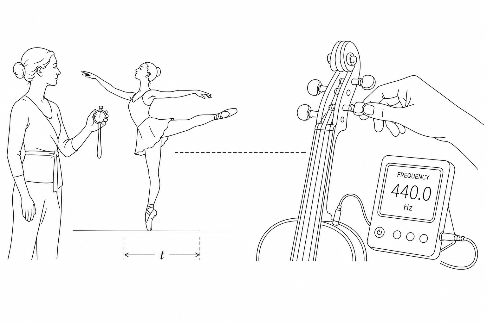
Физика — наука экспериментальная: любое её утверждение должно быть подтверждено измерением. Измерить физическую величину — значит сравнить её с другой величиной той же природы, принятой за единицу (эталон). Результат измерения — это число, показывающее, сколько раз единица измерения содержится в измеряемой величине, и сама единица.
Чтобы результаты измерений, полученные в разных странах, лабораториях и мастерских, можно было сравнивать друг с другом, физики договорились об единой системе единиц — Международной системе единиц (СИ). В курсе 7 класса из неё нам понадобятся, прежде всего, три основные величины:
Все прочие величины, с которыми мы встретимся дальше — скорость, плотность, сила, давление, — являются производными: их единицы выражаются через основные с помощью формул, определяющих сами эти величины.
Измерение выполняется с помощью измерительного прибора — устройства, шкала которого проградуирована в единицах измеряемой величины. У любой шкалы есть предел измерения — наибольшее значение, которое можно определить по прибору, и цена деления — значение, соответствующее одному наименьшему делению шкалы. Цена деления находится по формуле:
\[ C = \frac{x_2 - x_1}{N}, \]
где \(x_1\) и \(x_2\) (в СИ — м, с, кг и т. д.) — значения двух соседних отметок шкалы, подписанных числом, а \(N\) — число делений между ними.
Никакое измерение не даёт абсолютно точного значения величины: прибор имеет ограниченную разрешающую способность, глаз человека — ограниченную остроту, а сама измеряемая величина может чуть меняться в процессе измерения. Отклонение результата измерения от истинного значения величины называется погрешностью измерения. Для приборов со шкалой, не имеющих дополнительных указаний, действует практическое правило: погрешность прямого измерения принимается равной половине цены деления прибора:
\[ \Delta x = \frac{C}{2}. \]
Результат измерения принято записывать в виде
\[ x = x_{\text{изм}} \pm \Delta x, \]
где \(x_{\text{изм}}\) — измеренное значение величины (в тех же единицах СИ), а \(\Delta x\) — абсолютная погрешность измерения. Такая запись означает, что истинное значение величины лежит в границах от \(x_{\text{изм}} - \Delta x\) до \(x_{\text{изм}} + \Delta x\).
Точность измерения определяется не только качеством прибора, но и тем, насколько цена его деления соответствует задаче. Прибором с ценой деления 1 см невозможно измерить толщину нити — не потому, что прибор «плохой», а потому что его разрешение грубее, чем сам измеряемый объект.
Физика неотделима от техники: развитие точных измерительных приборов — часов, весов, манометров, микроскопов — исторически шло рука об руку с развитием физических теорий. Чем точнее прибор, тем тоньше явления природы становятся доступны наблюдению, а значит — тем глубже физика проникает в устройство мира и в устройство созданных человеком машин, конструкций и инструментов.
Задача 1.
Условие задачи. На классной линейке между отметками, подписанными числами 0 см и 5 см, нанесено 25 делений. Правый край измеряемого карандаша совпадает с 18-м делением, считая от отметки 0. Требуется найти цену деления линейки и записать результат измерения длины карандаша с учётом погрешности измерения.
| Дано | СИ | Решение |
|---|---|---|
| \(x_1 = 0\) см | \(x_1 = 0\) м | \(C = \dfrac{x_2 - x_1}{N}\) |
| \(x_2 = 5\) см | \(x_2 = 0{,}05\) м | \(C = \dfrac{0{,}05 - 0}{25} = 0{,}002\ \text{м} = 2\ \text{мм}\) |
| \(N = 25\) | — | \(l_{\text{изм}} = n \cdot C\) |
| \(n = 18\) | — | \(l_{\text{изм}} = 18 \cdot 0{,}002 = 0{,}036\ \text{м} = 3{,}6\ \text{см}\) |
| Найти: \(l\) | — | \(\Delta l = \dfrac{C}{2} = 0{,}001\ \text{м} = 0{,}1\ \text{см}\) |
| \(l = (3{,}6 \pm 0{,}1)\ \text{см}\) |
Полученный результат означает, что истинная длина карандаша лежит в пределах от 3,5 до 3,7 см — и записывать её как «3,6000 см» было бы физически неверно: прибор с ценой деления 2 мм просто не позволяет знать длину точнее, чем до десятых доли сантиметра.
Задача 2.
Условие задачи. На шкале секундомера между отметками, подписанными числами 0 с и 10 с, нанесено 20 делений. Стрелка секундомера остановилась на 13-м делении от нулевой отметки. Требуется найти цену деления секундомера и записать результат измерения времени с учётом погрешности измерения.
| Дано | СИ | Решение |
|---|---|---|
| \(x_1 = 0\) с | — | \(C = \dfrac{x_2 - x_1}{N}\) |
| \(x_2 = 10\) с | — | \(C = \dfrac{10 - 0}{20} = 0{,}5\ \text{с}\) |
| \(N = 20\) | — | \(t_{\text{изм}} = n \cdot C\) |
| \(n = 13\) | — | \(t_{\text{изм}} = 13 \cdot 0{,}5 = 6{,}5\ \text{с}\) |
| Найти: \(t\) | — | \(\Delta t = \dfrac{C}{2} = 0{,}25\ \text{с}\) |
| \(t = (6{,}5 \pm 0{,}25)\ \text{с}\) |
Такая запись — не формальность. Она честно сообщает: этот секундомер способен различать интервалы времени не точнее четверти секунды, и любое число после запятой сверх этой точности было бы обманом — иллюзией строгости там, где прибор её не даёт.
Вопрос цены деления и погрешности измерения — это не отвлечённая школьная процедура, а ежедневная практика в любой области, где важна физическая точность действия, а не только точность прибора.
Возьмём гониометр — прибор с транспортирной шкалой, которым спортивный врач или физиотерапевт измеряет угол сгибания или разгибания сустава: подъём бедра, амплитуду выворотности в тазобедренном суставе, угол дорсифлексии стопы. Если цена деления гониометра — 5°, то любое измерение амплитуды будет известно с точностью не выше \(\pm 2{,}5°\). Для грубой оценки подвижности сустава это достаточно. Но если врач сравнивает две тренировки с разницей в 3°, чтобы понять, восстанавливается ли сустав после травмы или, напротив, теряет подвижность, — прибор с такой ценой деления physically не способен дать ответ: разница тонет в собственной погрешности инструмента. Здесь физика цены деления напрямую переходит в медицинскую осторожность: нельзя делать вывод о состоянии сустава, если изменение меньше погрешности измерения, — это будет не диагноз, а самообман цифрами.
Похожая логика — в музыке. Настройщик или музыкант использует тюнер, измеряющий частоту звука струны. Разные тюнеры имеют разную точность: дешёвый прибор может «видеть» отклонение частоты только крупными шагами, точный студийный тюнер — с точностью до одного цента (сотой доли полутона). Человеческое ухо при этом способно различать фальшь ещё тоньше, чем многие приборы. Отсюда практический вывод, общий для музыканта и для физика: выбор прибора должен соответствовать задаче. Настраивать концертную скрипку грубым инструментом с крупной ценой деления — то же самое, что измерять длину пуанта комнатным метром с делениями через 10 сантиметров: числовой результат будет, но он не будет тем ответом, который нужен.
Самоэксперимент в студии. Измерьте секундомером время удержания одной и той же простой статической позы три раза подряд. Даже при внимательном старте и остановке результаты немного разойдутся — это не ошибка тела, а естественный разброс, сравнимый с погрешностью прибора и с реакцией вашей собственной руки на кнопку. Осознанность этого разброса — первый шаг к тому, чтобы отличать реальное физическое изменение (например, рост выносливости после недели тренировок) от случайного колебания измерения.
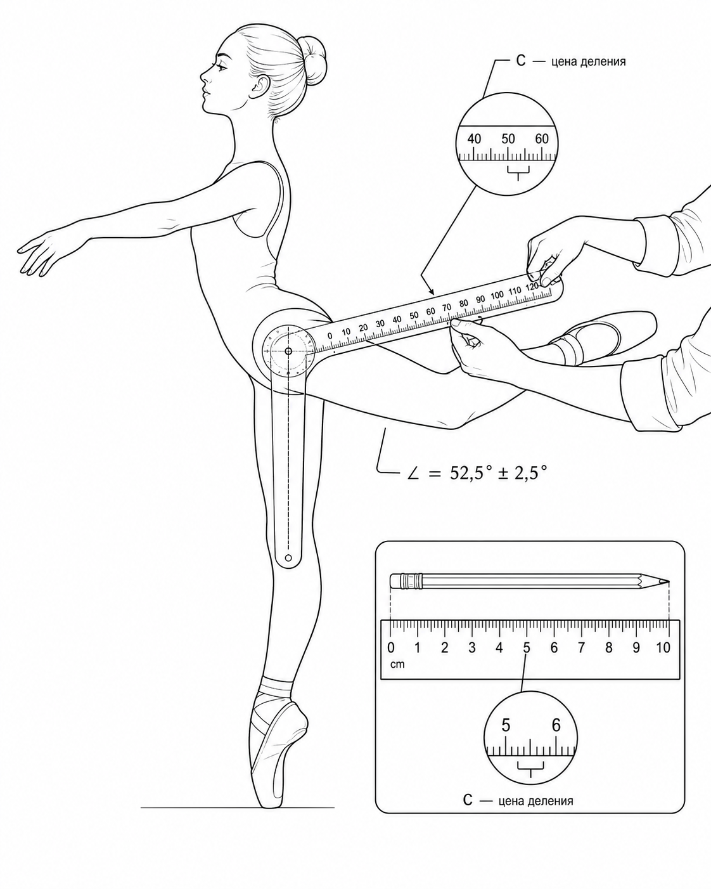
Всё, что нас окружает — воздух в зрительном зале, вода в стакане, деревянный станок у стены, кожа на кончиках пальцев, — физика называет одним словом: вещество. Тело — это конкретный предмет, сделанный из вещества (кубик сахара, капля воды, брусок дерева), а вещество — то, из чего тело состоит.
На протяжении веков стоял вопрос: можно ли делить вещество бесконечно, или у этого деления есть предел? Ответ даёт физика: у деления есть предел. Наименьшая частица вещества, которая сохраняет его химические свойства, называется молекулой.
Молекула, в свою очередь, не является неделимой: она составлена из более мелких частиц — атомов, связанных друг с другом определённым образом. Атом — наименьшая частица химического элемента. Молекула воды \(\text{H}_2\text{O}\) состоит из двух атомов водорода и одного атома кислорода; молекула кислорода \(\text{O}_2\) — из двух одинаковых атомов. От того, какие атомы входят в молекулу и как они расположены, зависят свойства вещества.
Ключевые положения молекулярного строения вещества, установленные экспериментально:
1. Вещество имеет дискретное (прерывистое) строение. Оно не заполняет пространство сплошь, а состоит из отдельных частиц — молекул, между которыми есть промежутки. Это можно доказать: если сжать газ, его объём уменьшается — значит, между молекулами было свободное пространство.
2. Молекулы одного вещества одинаковы между собой, молекулы разных веществ различны по составу, размерам и массе.
3. Размеры молекул чрезвычайно малы. Диаметр молекулы обычного вещества составляет величину порядка \[ d \approx 10^{-10}\ \text{м}. \] Это настолько мало, что если бы молекулу увеличили до размера яблока, то яблоко пришлось бы увеличить до размера земного шара.
4. Массы молекул также крайне малы. Масса одной молекулы воды составляет \[ m_0 \approx 3 \cdot 10^{-26}\ \text{кг}. \]
5. Число молекул в любом видимом невооружённым глазом теле огромно. В капле воды объёмом всего в один кубический сантиметр содержится порядка \(3 \cdot 10^{22}\) молекул.
Для оценки размера молекулы в школьной физике используется простой и красивый метод: каплю масла известного объёма \(V\) помещают на поверхность воды. Масло растекается тонким слоем и образует пятно площадью \(S\). Когда пятно достигает предельной площади и дальше не растекается, слой становится мономолекулярным — толщиной в одну молекулу. Тогда толщина слоя \(d\) равна диаметру молекулы, и её можно найти из соотношения объёма и площади: \[ d = \frac{V}{S}. \]
Если известна масса тела \(m\) и масса одной молекулы \(m_0\), можно оценить число молекул \(N\) в теле: \[ N = \frac{m}{m_0}. \]
Все числовые значения размеров и масс молекул получены не прямым наблюдением (молекулу нельзя увидеть в обычный микроскоп), а через такие косвенные измерения и расчёты — это первый в курсе пример того, как физика делает выводы о невидимом мире через измеримые величины.
Задача 1.
На поверхности воды в широком сосуде растеклась капля масла объёмом 0,01 кубического миллиметра. Образовавшееся масляное пятно, дальше не расширяющееся, имеет площадь 20 квадратных сантиметров. Требуется оценить диаметр молекулы масла, считая пятно однослойным.
| Дано | СИ | Решение |
|---|---|---|
| \(V = 0{,}01\) мм\(^3\) | \(V = 1 \cdot 10^{-11}\ \text{м}^3\) | \(d = \dfrac{V}{S}\) |
| \(S = 20\) см\(^2\) | \(S = 2 \cdot 10^{-3}\ \text{м}^2\) | \(d = \dfrac{1 \cdot 10^{-11}}{2 \cdot 10^{-3}} = 5 \cdot 10^{-9}\ \text{м}\) |
| Найти: \(d\) | — | Диаметр молекулы масла составляет приблизительно \(5 \cdot 10^{-9}\) м |
Полученное значение по порядку величины совпадает с известным из независимых измерений диапазоном размеров молекул (\(10^{-10}\)–\(10^{-9}\) м), что подтверждает правильность метода: простая капля масла на воде позволяет оценить размер объекта, который никогда не был виден напрямую.
Задача 2.
Масса небольшой капли воды равна 0,5 грамма. Масса одной молекулы воды составляет \(3 \cdot 10^{-26}\) килограмма. Требуется найти, сколько молекул содержится в этой капле.
| Дано | СИ | Решение |
|---|---|---|
| \(m = 0{,}5\) г | \(m = 5 \cdot 10^{-4}\ \text{кг}\) | \(N = \dfrac{m}{m_0}\) |
| \(m_0 = 3 \cdot 10^{-26}\) кг | — | \(N = \dfrac{5 \cdot 10^{-4}}{3 \cdot 10^{-26}} \approx 1{,}7 \cdot 10^{22}\) |
| Найти: \(N\) | — | В капле содержится примерно \(1{,}7 \cdot 10^{22}\) молекул |
Число получилось астрономическим — сравнимым с числом песчинок на всех пляжах Земли. Именно поэтому вещество кажется нам сплошным и непрерывным: отдельная молекула для наших органов чувств неощутима, но их совместное, огромное по числу присутствие создаёт то, что мы называем телом, жидкостью или воздухом.
Идея о том, что сплошное на первый взгляд на самом деле состоит из отдельных, невидимых по отдельности частиц, имеет точный аналог в живописи — в технике пуантилизма. Художник (Жорж Сёра, Поль Синьяк) наносит на холст не мазки, а отдельные точки чистого цвета. Вблизи полотна зритель видит только хаотичную россыпь мелких цветных пятен — никакой формы, никакого образа. Но при взгляде с расстояния, когда глаз перестаёт различать отдельные точки, из них складывается целостное изображение: лицо, дерево, река. Физическая суть здесь та же, что и в молекулярном строении вещества: свойство целого (цвет, форма поверхности, гладкость картины) не является свойством отдельной точки — оно возникает как результат огромного числа дискретных элементов, взаимодействующих в пространстве. Вода не «сплошная» точно в том же смысле, в каком картина Сёра не является сплошным цветовым полем: и то и другое — иллюзия непрерывности, порождённая масштабом наблюдения.
Второй пример — из архитектуры и декоративного искусства: мозаика. Огромное панно, покрывающее свод храма, составлено из тысяч отдельных цветных плиток — тессер. Каждая тессера сама по себе не несёт образа целого купола, но именно дискретная, зернистая структура при правильной укладке даёт визуальную целостность и глубину, недостижимую сплошной закраской. Так же и вещество: его макроскопические свойства — твёрдость дерева, прозрачность воды, упругость сухожилия — рождаются из закономерного расположения и взаимодействия огромного числа молекул, а не являются свойством какой-то одной «главной» частицы.
Наконец, важнейшая для артиста балета параллель — из биофизики собственного тела. Сухожилия и связки — те самые ткани, что держат свод стопы и стабилизируют колено при плие, — не являются однородным материалом. Они построены из молекул белка коллагена, свитых в тройные спирали, которые в свою очередь собраны в волокна, а волокна — в пучки. Прочность и упругость сухожилия — это не свойство одной молекулы коллагена, а результат их слаженной, иерархически организованной массовости, совершенно в духе того же принципа: целое обладает свойствами, которых нет у отдельной частицы, но которые логически и физически вырастают из взаимодействия множества одинаковых частиц. Понимание этого — первый шаг к пониманию того, почему сухожилие способно растягиваться и снова восстанавливать форму: об этом мы будем говорить подробно, когда перейдём к силе упругости.
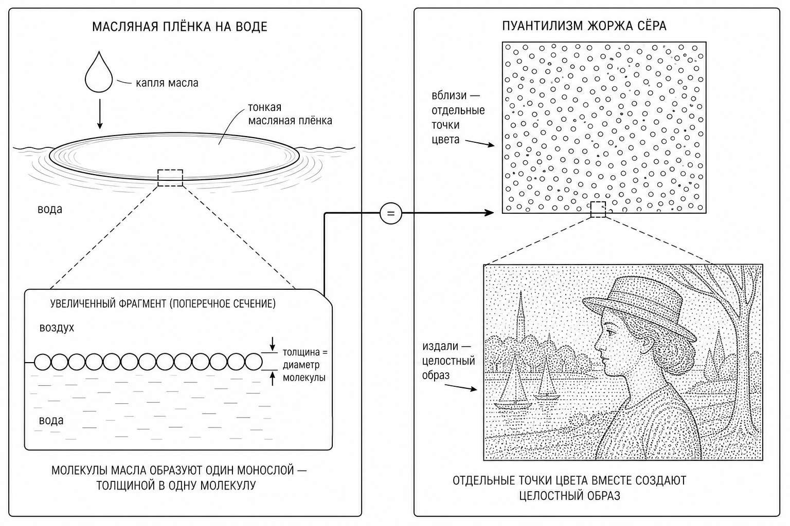
Все вещества состоят из мельчайших частиц — молекул (а молекулы, в свою очередь, из атомов). Эти частицы не находятся в покое: они непрерывно и беспорядочно движутся. Такое хаотическое движение частиц вещества называется тепловым движением.
Тепловое движение — не разовое событие, а постоянное состояние вещества при любой температуре выше абсолютного нуля. Чем выше температура тела, тем выше средняя скорость движения его молекул. Это утверждение — одна из фундаментальных связей между тепловыми и механическими явлениями: температура есть мера интенсивности хаотического движения частиц вещества.
Скорости отдельных молекул огромны. Например, молекулы азота и кислорода в воздухе при комнатной температуре движутся со средней скоростью порядка \(400\text{–}500\) м/с — быстрее звука. Однако это не означает, что вещество быстро распространяется в пространстве: молекулы движутся не по прямой, а испытывают огромное число столкновений друг с другом, постоянно меняя направление. Путь отдельной молекулы напоминает не стрелу, а плотно скомканную нить.
Диффузия — явление самопроизвольного взаимного проникновения молекул одного вещества между молекулами другого вследствие их теплового движения. Диффузия наблюдается во всех трёх агрегатных состояниях вещества, но с разной скоростью:
Скорость диффузии растёт с повышением температуры: более интенсивное тепловое движение молекул ускоряет их взаимное проникновение.
Броуновское движение — беспорядочное, непрерывное движение малых частиц (например, пыльцы, взвешенной в воде, или частиц дыма в воздухе), видимое в микроскоп. Это явление открыл в 1827 году английский ботаник Роберт Броун, наблюдая за движением пыльцы в капле воды. Причина броуновского движения — неравномерные удары молекул окружающей среды по взвешенной частице: в каждый момент с разных сторон частицы её толкает разное число молекул с разной силой, и результирующий толчок оказывается ненулевым и хаотично меняет направление. Броуновское движение стало важнейшим прямым экспериментальным доказательством того, что молекулы действительно существуют и находятся в непрерывном тепловом движении.
Между молекулами одновременно действуют силы притяжения и силы отталкивания. Их соотношение зависит от расстояния между молекулами:
Существует равновесное расстояние, на котором силы притяжения и отталкивания уравновешивают друг друга; именно на таком расстоянии друг от друга в среднем располагаются молекулы в твёрдом теле или жидкости в состоянии покоя. Именно баланс этих двух сил объясняет, почему твёрдые тела сохраняют объём и форму, жидкости сохраняют объём, но не форму, а газы не сохраняют ни то, ни другое: в газах молекулы находятся так далеко друг от друга, что силы взаимодействия между ними практически не действуют.
Задача 1.
Условие задачи. В закрытой комнате распылили духи. Запах достиг человека, стоящего на расстоянии 4 м от места распыления, через 100 с после начала распыления. Считая, что запах распространялся равномерно, найдите среднюю скорость его распространения. Известно, что при комнатной температуре молекулы газов в воздухе движутся со средней скоростью около 500 м/с. Сравните эту скорость со средней скоростью распространения запаха и объясните причину различия.
| Дано | СИ | Решение |
|---|---|---|
| \(s = 4\) м | — | \(v = \dfrac{s}{t}\) |
| \(t = 100\) с | — | \(v = \dfrac{4}{100} = 0{,}04\ \text{м/с}\) |
| \(v_{\text{мол}} = 500\) м/с | — | \(\dfrac{v_{\text{мол}}}{v} = \dfrac{500}{0{,}04} = 12\,500\) |
| Найти: \(v\), сравнение с \(v_{\text{мол}}\) | — | Молекулярная скорость больше в 12 500 раз |
Средняя скорость видимого распространения запаха оказывается в тысячи раз меньше средней скорости отдельных молекул. Это не противоречие, а прямое следствие механизма диффузии: каждая молекула духов, двигаясь со скоростью сотен метров в секунду, ежесекундно испытывает огромное число столкновений с молекулами воздуха и меняет направление движения. Путь молекулы от точки распыления до носа человека представляет собой не прямую линию, а хаотичную ломаную траекторию, суммарная длина которой во много раз превышает прямое расстояние в 4 метра. Именно поэтому наблюдаемая, «внешняя» скорость диффузии значительно меньше собственной скорости теплового движения молекул.
Задача 2.
Условие задачи. В высокий стакан с водой глубиной 10 см осторожно, без перемешивания, опустили каплю чернил у самой поверхности. Полное равномерное окрашивание воды по всей глубине стакана произошло только через 2 часа. Найдите среднюю скорость диффузии чернил в воде и сравните её со средней скоростью диффузии запаха духов в воздухе, найденной в задаче 1. Сделайте вывод о том, как агрегатное состояние вещества влияет на скорость диффузии.
| Дано | СИ | Решение |
|---|---|---|
| \(s = 10\) см | \(s = 0{,}1\) м | \(v = \dfrac{s}{t}\) |
| \(t = 2\) ч | \(t = 7200\) с | \(v = \dfrac{0{,}1}{7200} \approx 1{,}4 \cdot 10^{-5}\ \text{м/с}\) |
| \(v_{\text{возд}} = 0{,}04\) м/с (из задачи 1) | — | \(\dfrac{v_{\text{возд}}}{v} = \dfrac{0{,}04}{1{,}4 \cdot 10^{-5}} \approx 2900\) |
| Найти: \(v\), сравнение с \(v_{\text{возд}}\) | — | Диффузия в воде медленнее диффузии в воздухе почти в 3000 раз |
Результат подтверждает общее правило: диффузия в жидкости идёт значительно медленнее, чем в газе. Причина в плотности расположения молекул: в жидкости молекулы находятся почти впритык друг к другу, свободный путь между столкновениями крайне мал, и молекуле чернил требуется несравнимо больше «попыток», чтобы протиснуться через плотное окружение молекул воды. В газе, где молекулы разделены большими промежутками, каждая молекула успевает пролететь значительное расстояние, прежде чем столкнётся со следующей, — поэтому диффузия в газе идёт быстрее на три порядка.
Механизм диффузии — не абстрактная лабораторная тонкость, а вопрос, от которого напрямую зависит работоспособность мышцы. Кислород из крови попадает в мышечное волокно не по трубам, а именно диффузией: молекулы кислорода хаотично «пробираются» из капилляра сквозь ткань к митохондриям, где происходит выработка энергии. Здесь работает физически строгая закономерность: время диффузии растёт не пропорционально расстоянию, а значительно быстрее — при увеличении расстояния в два раза время диффузии увеличивается более чем в два раза. Именно поэтому диффузия эффективна только на очень малых расстояниях — порядка десятков микрометров. На больших расстояниях (через всё тело) организм не может рассчитывать на диффузию и использует принципиально иной механизм переноса — конвекцию, то есть направленное движение самой крови по сосудам, гонимой сердцем. Кровоток доставляет кислород быстро на большие расстояния, а диффузия «доводит» его на последнем, самом коротком участке — от стенки капилляра до мышечного волокна.
Отсюда прямое практическое следствие для класса и репетиции: разогрев перед нагрузкой не просто «разогревает мышцы» в бытовом смысле — он усиливает капиллярный кровоток, то есть увеличивает конвективную составляющую доставки кислорода и ускоряет последующую диффузию на клеточном уровне. По той же причине после интенсивной нагрузки полезнее лёгкое движение, а не полная статичная остановка: продукты обмена (в том числе молочная кислота), накопившиеся в мышце, покидают ткань тем же диффузионно-конвективным путём — и застой кровотока в неподвижном теле замедляет их вывод.
Отдельного внимания заслуживает контраст между диффузией и звуком — двумя явлениями, которые одинаково происходят «внутри» молекул воздуха, но устроены принципиально по-разному. Запах кулис распространяется по залу медленно и неравномерно именно потому, что переносится диффузией — хаотичным блужданием молекул пахучего вещества среди молекул воздуха. Голос актёра или звук струны долетает до последнего ряда партера практически мгновенно и направленно — не потому, что молекулы воздуха физически перемещаются от сцены к зрителю (при звуке они лишь колеблются около своего места), а потому, что через воздух распространяется согласованное, коллективное возмущение — волна давления. Диффузия переносит вещество за счёт неупорядоченного, случайного движения отдельных частиц; звук переносит энергию за счёт упорядоченного, синхронного колебания огромного числа частиц вокруг положения равновесия. Это разные физические механизмы, использующие одну и ту же среду.
Силы притяжения и отталкивания между молекулами объясняют и то, почему разные ткани тела ведут себя по-разному под нагрузкой. Хрящ, связка, сухожилие сохраняют форму и упругость именно потому, что их молекулы прочно связаны силами притяжения; при этом синовиальная жидкость в полости сустава течёт и заполняет пространство между суставными поверхностями — её молекулы связаны друг с другом гораздо слабее и легко смещаются относительно друг друга, сохраняя, однако, некоторое сопротивление течению (вязкость) — прямое следствие того, что притяжение между молекулами жидкости не исчезло полностью, а лишь ослабло по сравнению с твёрдым телом. Разница между «твёрдым» и «текущим» в организме — это, по сути, разница в балансе межмолекулярных сил, а не разные физические законы.
Самое содержательное приложение диффузии для артиста балета скрыто не на сцене, а внутри собственных суставов. Хрящ, покрывающий суставные поверхности костей, — уникальная ткань: в отличие от почти всех остальных тканей организма, он не имеет собственных кровеносных сосудов. Хрящевые клетки не могут получать кислород и питательные вещества так, как получают их мышцы или кожа — через капилляры. Единственный путь питания хряща — диффузия молекул питательных веществ из синовиальной жидкости, заполняющей полость сустава, через толщу хрящевой ткани к её клеткам.Это в буквальном смысле означает, что сустав питается через движение, а не через кровь. Скорость диффузии зависит от разницы концентраций и от расстояния, которое должны преодолеть молекулы — а расстояние это не постоянно. Когда сустав нагружен (вес тела приходится на колено в плие, стопа держит вес корпуса на пуантах), хрящ слегка сжимается, и часть жидкости выдавливается из него, как вода из губки. Когда нагрузка снимается — хрящ распрямляется и втягивает в себя свежую синовиальную жидкость, богатую питательными веществами. Ритмичное чередование нагрузки и разгрузки работает как насос, который раз за разом обновляет градиент концентрации у поверхности хряща и тем самым ускоряет диффузию — застойная, неподвижная жидкость отдаёт свои вещества хрящу гораздо медленнее. Отсюда вывод, важный не только для сцены, но и для того, что происходит в теле каждый день: суставу вредна не только избыточная нагрузка, но и её полное отсутствие. Долгая неподвижность — не отдых для хряща, а голодание: без ритмичного сжатия-разгрузки диффузия замедляется, и ткань недополучает питания. Именно поэтому разминка перед классом — это не только разогрев мышц, но и в самом строгом физическом смысле слова первое кормление суставов за день.
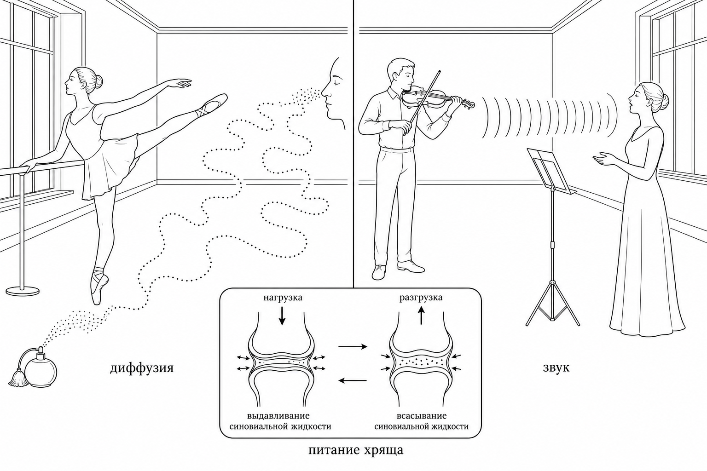
Одно и то же вещество может существовать в трёх различных агрегатных состояниях: твёрдом, жидком и газообразном. Переход вещества из одного агрегатного состояния в другое не меняет его молекулярного состава — молекулы воды в льдине, в капле и в облаке пара остаются одинаковыми молекулами \(H_2O\). Меняется лишь взаимное расположение молекул, характер их движения и силы взаимодействия между ними. Именно эти три параметра молекулярной картины определяют macroскопические свойства вещества — его способность или неспособность сохранять форму и объём.
Твёрдое состояние. Молекулы (или ионы) расположены в строго определённом порядке, повторяющемся во всём объёме тела — этот порядок называют кристаллической решёткой. Расстояние между молекулами сравнимо с их собственными размерами, силы взаимодействия между ними велики. Молекула не покидает своего места в решётке — она лишь совершает колебания около фиксированного положения равновесия. Благодаря этому твёрдое тело сохраняет и форму, и объём.
Жидкое состояние. Молекулы расположены почти так же тесно, как в твёрдом теле, — поэтому силы взаимодействия между ними ещё значительны, и жидкость, подобно твёрдому телу, сохраняет объём. Однако строгий порядок в расположении молекул существует лишь на малых расстояниях (так называемый близкий порядок) и постоянно разрушается: молекула колеблется некоторое время около одного положения равновесия, а затем перескакивает на новое место рядом с соседями. Из-за этой подвижности жидкость не сохраняет форму — она принимает форму сосуда, в который её помещают, и обладает текучестью.
Газообразное состояние. Расстояния между молекулами газа в десятки раз больше размеров самих молекул, поэтому силы взаимодействия между ними пренебрежимо малы (кроме кратких моментов столкновений). Молекулы движутся хаотично и почти свободно, с огромными по молекулярным меркам скоростями. Газ не сохраняет ни форму, ни объём — он всегда заполняет весь предоставленный ему объём сосуда.
Переход вещества из твёрдого состояния в жидкое называется плавлением, обратный переход — отвердеванием (кристаллизацией). Переход из жидкого состояния в газообразное называется испарением, обратный — конденсацией. Подробное изучение энергетики этих переходов — предмет отдельной темы теплового движения; здесь важно закрепить именно молекулярную картину трёх состояний.
Наглядное подтверждение этой картины даёт плотность \(\rho\) вещества — отношение массы \(m\) к объёму \(V\): \[ \rho = \dfrac{m}{V}, \quad [\rho] = \dfrac{\text{кг}}{\text{м}^3}. \] Поскольку масса вещества при смене агрегатного состояния не меняется, а расстояние между молекулами меняется резко, плотность одного и того же вещества в разных состояниях может отличаться в сотни и тысячи раз. Так, для воды:
| Состояние | Плотность, кг/м³ |
|---|---|
| лёд | 900 |
| вода (жидкость) | 1000 |
| водяной пар (при 100 °C, нормальное давление) | 0,6 |
Разница плотности льда и воды невелика (около 10 %) — молекулы в обоих состояниях расположены тесно. Разница плотности воды и пара — почти в 1700 раз — прямое следствие того, что в газе молекулы «отпущены» на расстояния, во много раз превышающие их собственные размеры.
Задача 1. Кусок льда массой 900 г полностью растаял, превратившись в воду. Плотность льда равна 900 кг/м³, плотность образовавшейся воды — 1000 кг/м³. Нужно найти объём льда до таяния, объём получившейся воды и на сколько изменился объём вещества при переходе из твёрдого состояния в жидкое.
| Дано | СИ | Решение |
|---|---|---|
| \(m = 900\) г | \(m = 0{,}9\) кг | \(V_{\text{л}} = \dfrac{m}{\rho_{\text{л}}}\) |
| \(\rho_{\text{л}} = 900\) кг/м³ | — | \(V_{\text{л}} = \dfrac{0{,}9}{900} = 0{,}001\ \text{м}^3\) |
| \(\rho_{\text{в}} = 1000\) кг/м³ | — | \(V_{\text{в}} = \dfrac{m}{\rho_{\text{в}}} = \dfrac{0{,}9}{1000} = 0{,}0009\ \text{м}^3\) |
| Найти: \(V_{\text{л}}\), \(V_{\text{в}}\), \(\Delta V\) | — | \(\Delta V = V_{\text{л}} - V_{\text{в}} = 0{,}0001\ \text{м}^3 = 100\ \text{см}^3\) |
Объём вещества при переходе из твёрдого состояния в жидкое уменьшился на 100 см³, то есть примерно на 10 %. Это небольшое, но заметное изменение — молекулы воды в жидком состоянии располагаются чуть теснее, чем во льду, где кристаллическая решётка вынуждает их «стоять» на фиксированном расстоянии друг от друга. Именно поэтому лёд легче воды и плавает на её поверхности.
Задача 2. Вода массой 1 кг при кипении превратилась в пар при температуре 100 °C и нормальном атмосферном давлении. Плотность воды равна 1000 кг/м³, плотность образовавшегося пара — 0,6 кг/м³. Нужно найти объём воды до испарения, объём получившегося пара и во сколько раз объём увеличился.
| Дано | СИ | Решение |
|---|---|---|
| \(m = 1\) кг | — | \(V_{\text{в}} = \dfrac{m}{\rho_{\text{в}}} = \dfrac{1}{1000} = 0{,}001\ \text{м}^3\) |
| \(\rho_{\text{в}} = 1000\) кг/м³ | — | \(V_{\text{п}} = \dfrac{m}{\rho_{\text{п}}} = \dfrac{1}{0{,}6} \approx 1{,}67\ \text{м}^3\) |
| \(\rho_{\text{п}} = 0{,}6\) кг/м³ | — | \(k = \dfrac{V_{\text{п}}}{V_{\text{в}}} = \dfrac{1{,}67}{0{,}001} \approx 1670\) |
| Найти: \(V_{\text{в}}\), \(V_{\text{п}}\), \(k\) | — | Объём увеличился примерно в 1670 раз |
Такое колоссальное — почти в тысячу раз — увеличение объёма при переходе воды в пар объясняется не появлением «новых» молекул, а тем, что расстояние между уже существующими молекулами резко возрастает: силы притяжения перестают удерживать их вплотную друг к другу, и молекулы разлетаются на расстояния, во много раз превышающие их собственные размеры. Именно этот эффект — а не увеличение массы — лежит в основе работы паровых машин и объясняет, почему закипающая в чайнике вода с шумом выталкивает крышку.
Три агрегатных состояния вещества можно увидеть не только в стакане воды, но и в самом теле танцовщика — в устройстве сустава, который несёт основную механическую нагрузку в танце.
Кость — это, по сути, твёрдое тело в самом строгом физическом смысле: минеральная составляющая кости (гидроксиапатит) образует упорядоченную кристаллическую структуру, армированную волокнами коллагена. Именно эта решётчатая упорядоченность даёт кости жёсткость и способность сохранять форму под нагрузкой — так же, как кристаллическая решётка льда сохраняет форму кубика, пока его не начинают греть.
Синовиальная жидкость, заполняющая полость сустава, — это жидкость в точном физическом смысле: она сохраняет практически неизменный объём, но не имеет собственной формы и принимает форму той щели между суставными поверхностями, в которую попадает. Когда танцовщик выполняет глубокое плие, суставные поверхности меняют взаимное расположение — и жидкость, обладая текучестью, мгновенно перераспределяется, обеспечивая смазку и равномерную передачу давления по всей площади хряща. Если бы синовиальная жидкость была твёрдой, движение в суставе было бы невозможно; если бы она была газом — она не удерживала бы несущую нагрузку.
Суставной хрящ занимает промежуточное, пороупругое положение между твёрдым телом и жидкостью: это твёрдый коллагеновый каркас, пронизанный жидкостью, которая может выдавливаться из него и возвращаться обратно при нагрузке — почти как губка. Именно эта двойственная природа хряща делает его износ необратимым: в отличие от кости, у хряща нет кровеносных сосудов и, соответственно, полноценного механизма восстановления кристаллической структуры. Отсюда — практическая необходимость беречь суставы от избыточных ударных нагрузок при приземлениях: повреждённый хрящ, в отличие от связки или мышцы, не восстанавливается так, как «затягивается» трещина в кристалле.
Ту же логику — упорядоченность, текучесть, свободное рассеивание — можно увидеть и в композиции кордебалета. Строй, где танцовщицы стоят на фиксированных местах в линии или каре, аналогичен кристаллической решётке: каждая занимает своё «узловое» положение и лишь слегка колеблется вокруг него. Перестроение — плавное «перетекание» рисунка из линии в круг при сохранении плотности группы — напоминает жидкость: количество исполнителей (аналог массы вещества) неизменно, но форма занимаемого пространства меняется. А финальное рассеивание кордебалета по всей сцене, где расстояние между танцовщиками становится намного больше размеров личного пространства каждого, физически ближе всего к газу — свободному распределению по всему предоставленному объёму сцены.
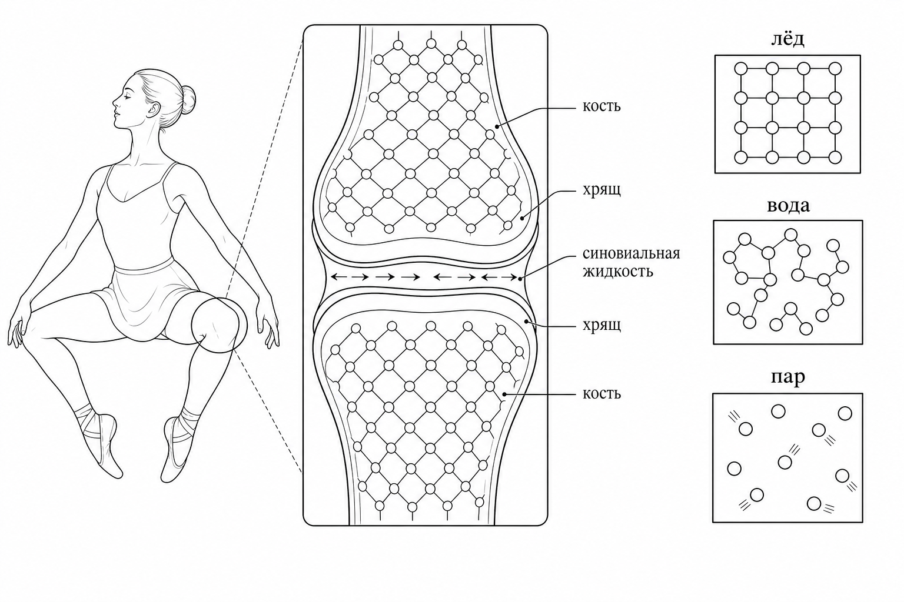
Механика — раздел физики, изучающий движение тел и причины, вызывающие или изменяющие это движение. Начнём с самого простого и самого фундаментального вопроса: что означает утверждение «тело движется»?
Механическое движение — это изменение положения тела в пространстве относительно других тел с течением времени.
Ключевое слово здесь — «относительно». Само по себе движение не существует: невозможно сказать, движется тело или покоится, не указав, относительно чего мы это наблюдаем. Дерево за окном движущегося поезда неподвижно относительно земли, но относительно пассажира оно уносится назад. Это свойство физики называется относительностью движения.
Чтобы описывать движение строго, вводят три взаимосвязанных понятия:
Тело отсчёта, связанная с ним система координат и часы образуют систему отсчёта. Одно и то же движение, описанное в разных системах отсчёта, может выглядеть совершенно по-разному — и оба описания будут одинаково верны, если каждое строго привязано к своей системе отсчёта.
Во многих задачах реальные размеры и форма тела не важны для описания его перемещения — важна лишь его траектория. В этом случае тело удобно представлять как материальную точку — тело, размерами и формой которого можно пренебречь в условиях данной задачи. Так, при расчёте времени в пути автомобиль на карте страны — точка; но при парковке в гараже его размеры уже нельзя игнорировать.
Линия, которую описывает движущееся тело (точнее, движущаяся материальная точка) в пространстве, называется траекторией. Длина этой линии, измеренная вдоль траектории, — это путь.
Путь \(s\) — скалярная физическая величина, единица измерения в СИ — метр (м).
Движение называется равномерным, если тело за любые равные промежутки времени проходит одинаковые пути. Если пути за равные промежутки времени различны — движение неравномерное.
Для равномерного движения вводится величина скорость:
\[ v = \frac{s}{t} \]
где \(s\) — путь (м), \(t\) — время движения (с), \(v\) — скорость (м/с).
Скорость равномерного движения показывает, какой путь тело проходит за единицу времени. Единица скорости в СИ — метр в секунду (м/с); на практике часто используется километр в час (км/ч), причём \(1\ \text{км/ч} = \dfrac{1}{3{,}6}\ \text{м/с}\).
Из формулы скорости следуют два производных выражения, равноценных исходному:
\[ s = v \cdot t, \qquad t = \frac{s}{v} \]
Реальное движение почти никогда не бывает строго равномерным: скорость меняется, тело то ускоряется, то замедляется. Для таких случаев вводят среднюю скорость неравномерного движения:
\[ v_{ср} = \frac{s_{общ}}{t_{общ}} \]
где \(s_{общ}\) — весь пройденный путь, \(t_{общ}\) — всё время движения. Важно понимать: средняя скорость — это не среднее арифметическое отдельных скоростей на участках пути, а именно отношение полного пути ко всему времени. Подменять одно другим — распространённая и физически неверная ошибка.
Задача 1.
Условие задачи. Автомобиль движется по прямой равномерно и за 3 минуты проходит путь 2,7 километра. Требуется найти скорость автомобиля и выразить её в метрах в секунду и в километрах в час.
| Дано | СИ | Решение |
|---|---|---|
| \(t = 3\) мин | \(t = 180\) с | \(v = \dfrac{s}{t}\) |
| \(s = 2{,}7\) км | \(s = 2700\) м | \(v = \dfrac{2700}{180} = 15\ \text{м/с}\) |
| Найти: \(v\) (м/с и км/ч) | — | \(v = 15 \cdot 3{,}6 = 54\ \text{км/ч}\) |
Физический анализ: скорость 54 км/ч — типичная скорость автомобиля в городе, число реалистично. Обратим внимание на методику перевода единиц: время сначала было переведено в секунды (3 мин = 180 с), путь — в метры (2,7 км = 2700 м), и только после этого применена формула \(v = s/t\). Смешивать единицы (например, делить километры на секунды) — грубая ошибка, которая даёт число, лишённое физического смысла.
Задача 2.
Условие задачи. Пешеход первую половину пути в 4 километра прошёл со скоростью 4 километра в час, а вторую половину пути прошёл со скоростью 5 километров в час. Требуется найти среднюю скорость пешехода на всём пути.
| Дано | СИ | Решение |
|---|---|---|
| \(s = 4\) км | \(s = 4000\) м | \(s_1 = s_2 = \dfrac{s}{2} = 2000\ \text{м}\) |
| \(v_1 = 4\) км/ч | \(v_1 \approx 1{,}11\) м/с | \(t_1 = \dfrac{s_1}{v_1} = \dfrac{2000}{1{,}11} \approx 1800\ \text{с}\) |
| \(v_2 = 5\) км/ч | \(v_2 \approx 1{,}39\) м/с | \(t_2 = \dfrac{s_2}{v_2} = \dfrac{2000}{1{,}39} \approx 1440\ \text{с}\) |
| Найти: \(v_{ср}\) | — | \(v_{ср} = \dfrac{s_1+s_2}{t_1+t_2} = \dfrac{4000}{3240} \approx 1{,}23\ \text{м/с} \approx 4{,}44\ \text{км/ч}\) |
Физический анализ: обратите внимание — средняя скорость (≈4,44 км/ч) не равна простому среднему арифметическому скоростей \(\dfrac{4+5}{2}=4{,}5\) км/ч, хотя разница здесь невелика. Это не совпадение и не приближение: среднее арифметическое скоростей совпадает со средней скоростью только в частном случае равных промежутков времени на каждом участке, а не равных путей. Здесь участки пути равны, а время движения на них разное (на более медленном участке пешеход провёл больше времени), поэтому корректно считать только через полный путь и полное время. Это одна из самых частых ошибок при первом знакомстве со средней скоростью, и стоит запомнить её механизм, а не только правильный ответ.
Относительность движения — понятие, которое легче всего почувствовать не в отвлечённой формуле, а там, где искусство сознательно эксплуатирует смену системы отсчёта. Возьмём поворотный круг сцены — конструкцию, которую используют в оперных и драматических театрах для смены декораций без остановки действия. Актёр может стоять абсолютно неподвижно, не сделав ни шагу, — и при этом относительно зрительного зала он плавно движется по кругу, потому что вращается сама сцена под его ногами. Относительно круга сцены (тело отсчёта — сам круг) актёр покоится; относительно зала (тело отсчёта — зрительный зал) он совершает механическое движение по окружности. Обе системы отсчёта равноправны, обе дают верное, но разное описание. Это ровно та же логика, что и с пассажиром поезда: вопрос «движется тело или нет?» без указания системы отсчёта попросту не имеет физического смысла — и театральная машинерия демонстрирует это буквально, физически, а не метафорически.
Второй важный сюжет касается различия между путём и переносом тела в пространстве, и здесь точнее всего говорит биомеханика. Представьте вращение на месте — пируэт, поворот фигуриста или гимнаста. Центр масс тела при этом почти не смещается: тело как целое возвращается в ту же точку пола, откуда начало движение. Но работающая нога, поднятая рука, стопа, отталкивающаяся от пола, — каждая из этих частей тела за то же время проходит вполне ощутимый путь по своей собственной траектории. Именно суммарный пройденный путь, а не итоговое перемещение, определяет физиологическую нагрузку: истирание хряща в суставе, работу мышцы, расход энергии. Сустав и связка «не знают», что тело в итоге вернулось на исходное место — они реагируют на пройденный путь, на количество циклов сгибания и разгибания. Поэтому в тренировочной практике важно считать не только «сдвинулось ли тело», но и сколько пути на самом деле прошли работающие звенья тела за тренировку: этот счёт — прямое физическое основание для дозирования нагрузки и профилактики переутомления сустава.
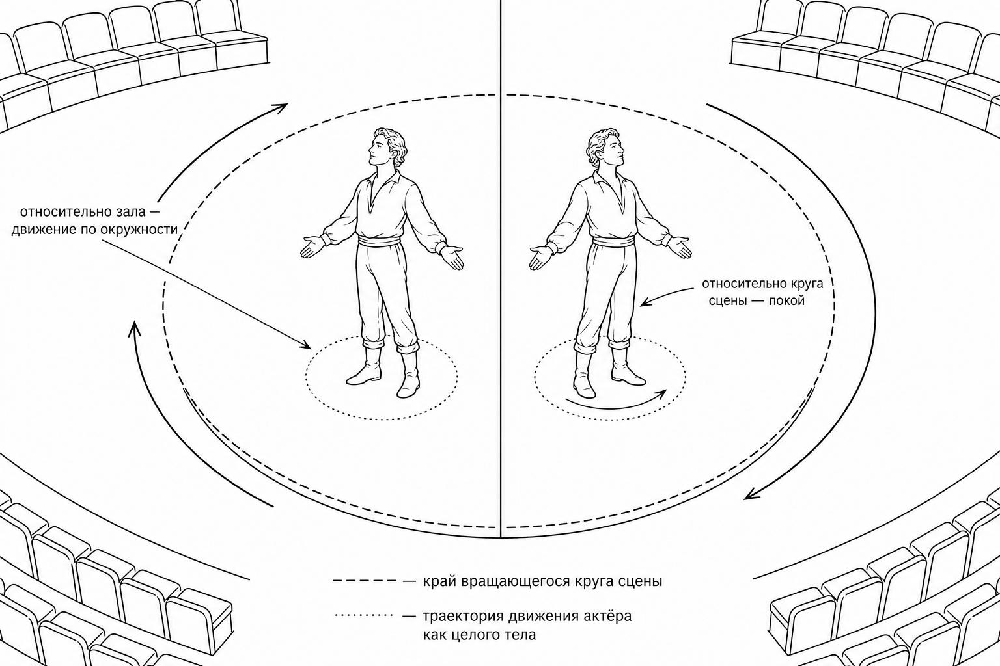
Понаблюдаем за простым фактом: шайба, скользящая по идеально гладкому льду, не останавливается сама по себе — она продолжала бы двигаться прямо и с постоянной скоростью бесконечно долго, если бы ничто её не тормозило. Так же тело, лежащее на столе, не начинает двигаться само по себе. Оба наблюдения — проявления одного и того же свойства.
Инерция — это явление сохранения скорости тела в том случае, когда на тело не действуют другие тела или действия других тел взаимно уравновешены (компенсируются). Тело, предоставленное самому себе, либо остаётся в покое, либо движется равномерно и прямолинейно.
Важно понимать: инерция — не сила и не причина движения. Это свойство самого тела «упорствовать» в своём состоянии движения — покое или равномерном прямолинейном движении. Изменить скорость тела (разогнать его, остановить, заставить свернуть) может только действие на него другого тела.
Когда тела действуют друг на друга и вследствие этого изменяют свои скорости, говорят, что происходит взаимодействие тел. Взаимодействие — процесс двусторонний: если тело А изменяет скорость тела Б, то и тело Б в свою очередь изменяет скорость тела А. Примеры взаимодействия: столкновение бильярдных шаров, отталкивание двух тележек, соединённых сжатой пружиной, выстрел из ружья (пуля и ружьё взаимодействуют друг с другом).
Опыт с тележками, снабжёнными сжатой пружиной, даёт важный количественный результат. Пусть до взаимодействия обе тележки покоились. После того как пружина отпущена и тележки разошлись, каждая приобрела некоторую скорость. Опыт показывает: скорости, приобретённые телами в результате взаимодействия, обратно пропорциональны массам этих тел:
\[ \frac{v_1}{v_2} = \frac{m_2}{m_1} \]
Это соотношение — ключ к пониманию того, что такое масса. Легче разогнать лёгкую тележку, чем тяжёлую: при одинаковом взаимодействии тело с меньшей массой получает большую скорость, а тело с большей массой — меньшую.
Масса — это физическая величина, являющаяся мерой инертности тела. Инертность — свойство тела сопротивляться изменению своей скорости при взаимодействии с другими телами. Чем больше масса тела, тем труднее изменить его скорость — разогнать его или остановить.
Здесь необходима строгая оговорка, которая часто путается на бытовом уровне: масса — это не то же самое, что вес. Масса характеризует инертность тела и не зависит от того, где это тело находится — на Земле, на Луне или в открытом космосе. (Вес — сила, с которой тело притягивается к планете, — будет рассмотрен в отдельном параграфе.)
Единица массы в Международной системе единиц (СИ) — килограмм (кг). Масса обозначается буквой \(m\).
Масса тела измеряется взвешиванием — сравнением инертности исследуемого тела с инертностью эталонных тел (разновесов) на рычажных весах, либо с помощью откалиброванных электронных весов. При взвешивании на рычажных весах мы фактически уравновешиваем два взаимодействия: тело и эталонные гири помещаются в такие условия, при которых их инертность (а на поверхности Земли — и вес) оказывается одинаковой.
Задача 1.
Условие задачи. Две тележки стоят на гладком горизонтальном рельсе, между ними зажата сжатая пружина. Масса первой тележки равна 2 кг. Когда пружину отпускают, тележки расходятся в противоположные стороны: первая приобретает скорость 3 м/с, а вторая — 1 м/с. Нужно найти массу второй тележки.
| Дано | СИ | Решение |
|---|---|---|
| \(m_1 = 2\) кг | — | \(\dfrac{v_1}{v_2} = \dfrac{m_2}{m_1}\) |
| \(v_1 = 3\) м/с | — | \(m_2 = m_1 \cdot \dfrac{v_1}{v_2}\) |
| \(v_2 = 1\) м/с | — | \(m_2 = 2 \cdot \dfrac{3}{1} = 6\ \text{кг}\) |
| Найти: \(m_2\) | — | Масса второй тележки равна 6 кг |
Физический анализ: результат согласуется с исходным наблюдением — вторая тележка приобрела меньшую скорость (1 м/с против 3 м/с), значит, она обладает большей инертностью, то есть большей массой. Именно масса, а не что-либо иное, определяет, насколько охотно тело меняет своё движение при одном и том же взаимодействии.
Задача 2.
Условие задачи. На чашу рычажных весов помещено тело неизвестной массы. Для уравновешивания весов на другую чашу потребовалось положить разновесы: одну гирю массой 200 г, одну гирю массой 50 г и одну гирю массой 5 г. Нужно найти массу тела в килограммах.
| Дано | СИ | Решение |
|---|---|---|
| \(m_1 = 200\) г | \(m_1 = 0{,}2\) кг | \(m = m_1 + m_2 + m_3\) |
| \(m_2 = 50\) г | \(m_2 = 0{,}05\) кг | \(m = 0{,}2 + 0{,}05 + 0{,}005\) |
| \(m_3 = 5\) г | \(m_3 = 0{,}005\) кг | \(m = 0{,}255\ \text{кг}\) |
| Найти: \(m\) | — | Масса тела равна 0,255 кг |
Физический анализ: масса тела складывается из масс уравновешивающих его разновесов — это прямое следствие принципа взвешивания. Обратим внимание на аккуратность перевода единиц: ошибка в переводе граммов в килограммы на этом этапе — самая частая техническая ошибка при решении подобных задач, и именно поэтому в таблице отдельно предусмотрен столбец «СИ».
Инерцию проще всего почувствовать не через абстрактный образ, а через собственное тело в движении — и здесь биомеханика говорит точнее любой метафоры.
Возьмём резкую остановку корпуса после активного движения — например, после быстрого поворота или взрывного шага в диагонали через сцену. Голова, руки, корпус — это не одна абсолютно жёсткая деталь, а система сегментов, соединённых суставами. Когда стопы и корпус уже остановлены сопротивлением пола и работой мышц, голова по инерции «стремится» сохранить своё движение и продолжает смещаться вперёд или в сторону доли секунды дольше остального тела. Именно поэтому опытные педагоги настаивают на активной фиксации взгляда и шеи в конце движения: без сознательного мышечного усилия, компенсирующего инерцию головы, шейный отдел позвоночника и связочный аппарат принимают на себя рывковую нагрузку при каждой резкой остановке. Это чистая физика инерции, а не вопрос красоты позы — и это прямая причина того, почему техника «доведения» движения до конца, а не его обрывание, физически бережёт тело.
Второй пример — взаимодействие тел в буквальном, ньютоновском смысле — даёт партнёрская поддержка. Когда партнёр поднимает или подкручивает балерину, происходит взаимодействие двух тел: он изменяет её скорость, она — своим сопротивлением движению — изменяет распределение усилия в его теле. Здесь важно то же различие, что мы установили в разделе 1: партнёру приходится преодолевать не «вес» партнёрши в обычном бытовом смысле, а именно её инертность — сопротивление изменению скорости при разгоне и особенно при резком гашении движения (в момент завершения поддержки, приземления). Два партнёра одинакового веса, но с разной техникой распределения массы тела в движении (собранная, «компактная» поза против раскинутой, «рассыпанной») создают для несущего партнёра совершенно разную по характеру задачу — не потому что физически изменилась масса, а потому что момент инерции тела относительно оси подъёма (тема, к которой мы вернёмся при разговоре о вращении) меняет то, как ощущается инертность в динамике.
Оба примера показывают одно: инерция и взаимодействие тел — это не абстракции из учебника, а буквальное описание того, что происходит с телом артиста каждую секунду на сцене, и осознанная работа с этой физикой — прямой путь к экономии сил и снижению травматичности движения.
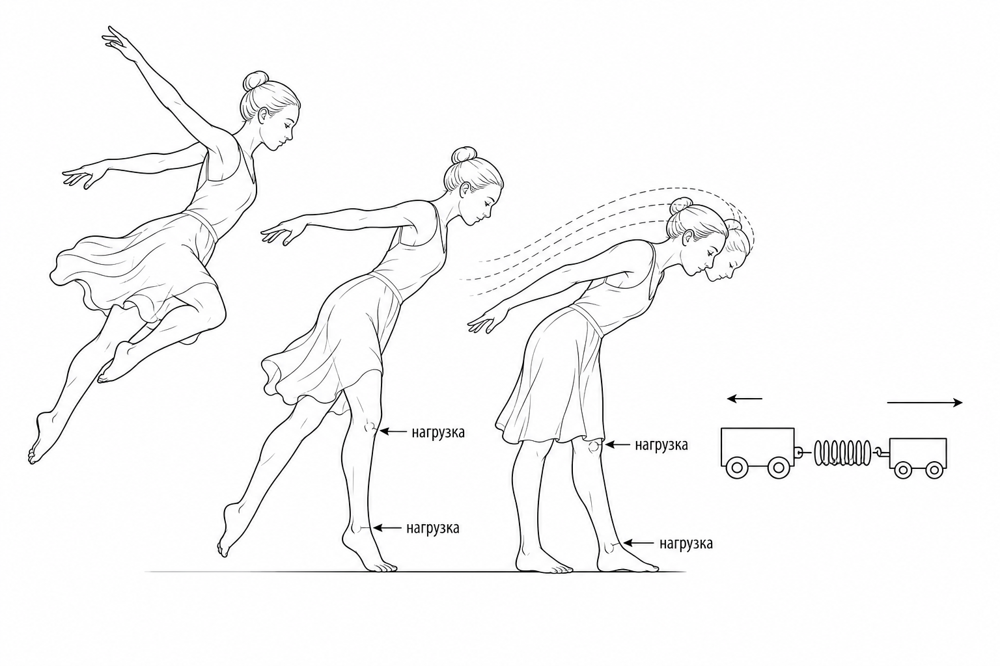
Одинаковый по размеру кусок пробки и кусок свинца сильно отличаются по массе — это знает каждый, кто хоть раз брал их в руки. Значит, масса тела зависит не только от его объёма, но и от того, из какого вещества оно состоит. Величина, которая описывает эту зависимость, называется плотностью вещества.
Плотность вещества — это физическая величина, равная отношению массы однородного тела к его объёму:
\[ \rho = \frac{m}{V} \]
где \(\rho\) (греческая буква «ро») — плотность вещества, \(m\) — масса тела, \(V\) — его объём.
Единица плотности в СИ — килограмм на кубический метр, \(\left[\rho\right] = 1 \dfrac{\text{кг}}{\text{м}^3}\). Это означает: плотность вещества равна 1 кг/м³, если кубик этого вещества со стороной 1 м имеет массу 1 кг. В лаборатории удобнее пользоваться единицей грамм на кубический сантиметр: \(1 \dfrac{\text{г}}{\text{см}^3} = 1000 \dfrac{\text{кг}}{\text{м}^3}\).
Важно понимать: плотность — это характеристика вещества, а не отдельного тела. Кусок алюминия массой 10 г и алюминиевая деталь массой 5 кг имеют совершенно разные массу и объём, но одну и ту же плотность — потому что оба сделаны из одного и того же вещества. Именно поэтому плотности веществ сведены в справочные таблицы: зная плотность, можно узнать вещество, из которого сделано тело, даже не разбирая его на части.
Некоторые значения плотности (при нормальных условиях): вода — 1000 кг/м³, лёд — 900 кг/м³, сосна — около 500 кг/м³, пробка — около 200 кг/м³, алюминий — 2700 кг/м³, железо и сталь — 7800 кг/м³, свинец — 11300 кг/м³, воздух — 1,29 кг/м³.
Плотность зависит не только от рода вещества, но и от его агрегатного состояния и температуры: у льда и воды разная плотность, хотя вещество одно и то же — молекулы воды в твёрдом состоянии расположены иначе, чем в жидком.
Из основной формулы плотности можно получить два практических следствия — для расчёта массы и объёма тела, если известна плотность вещества:
\[ m = \rho V, \qquad V = \frac{m}{\rho} \]
Плотность твёрдого или жидкого тела определяют экспериментально: массу измеряют на весах, а объём — либо по геометрическим размерам тела (для правильной формы), либо с помощью мерного цилиндра, погружая тело в жидкость и наблюдая вытесненный объём (для тела неправильной формы).
Задача 1.
Условие задачи. Деревянная линейка имеет объём 45 см³. Плотность материала, из которого она сделана, равна 700 кг/м³. Требуется найти массу линейки.
| Дано | СИ | Решение |
|---|---|---|
| \(V = 45\) см³ | \(V = 45 \cdot 10^{-6}\ \text{м}^3 = 0{,}000045\ \text{м}^3\) | \(m = \rho V\) |
| \(\rho = 700\) кг/м³ | — | \(m = 700 \cdot 0{,}000045 = 0{,}0315\ \text{кг}\) |
| Найти: \(m\) | — | \(m = 31{,}5\ \text{г}\) |
Полученное значение вполне соответствует реальности: обычная школьная линейка действительно имеет массу порядка нескольких десятков граммов. Обратите внимание на ключевой технический момент: объём был дан в кубических сантиметрах, а плотность — в кг/м³, поэтому перед вычислением обязательно нужно перевести все величины в единицы СИ, иначе результат окажется ошибочным в миллион раз.
Задача 2.
Условие задачи. Кусок металла имеет массу 178 г и объём 20 см³. Требуется определить, из какого металла может быть сделан этот кусок, используя табличные значения плотности.
| Дано | СИ | Решение |
|---|---|---|
| \(m = 178\) г | \(m = 0{,}178\) кг | \(\rho = \dfrac{m}{V}\) |
| \(V = 20\) см³ | \(V = 0{,}00002\ \text{м}^3\) | \(\rho = \dfrac{0{,}178}{0{,}00002} = 8900\ \dfrac{\text{кг}}{\text{м}^3}\) |
| Найти: вещество | — | По таблице плотностей \(8900\ \text{кг/м}^3\) соответствует меди |
Здесь физика решает задачу «наоборот»: не по известному веществу находится масса, а по измеренным массе и объёму — сама природа вещества. Это стандартный приём физической экспертизы: не нужно разрезать образец и проводить химический анализ, достаточно весов и мерного сосуда с водой, чтобы определить объём тела неправильной формы через вытеснение жидкости.
Плотность — величина, которая на первый взгляд касается только «мёртвой» материи: камня, металла, воды. Но она незримо присутствует и там, где физика становится телесным ощущением или звуком.
Начнём с тела. Разные ткани организма имеют разную плотность, и это не абстрактная цифра из справочника, а вещь, которую артист чувствует каждый день. Плотность мышечной ткани составляет примерно 1060 кг/м³, а жировой ткани — около 900 кг/м³, то есть заметно меньше плотности воды. Костная ткань значительно плотнее и мышц, и жира — именно высокая плотность минерализованного матрикса кости обеспечивает её способность нести нагрузку без разрушения. Это объясняет физически важный факт: при одном и том же объёме тела его масса — а значит, и та нагрузка, которую примут на себя стопа, голеностоп и колено при приземлении из прыжка, — зависит от соотношения мышечной, костной и жировой ткани в теле, а не только от роста или «размера» человека. Понимание этого помогает педагогу и самому артисту трезво оценивать ударную нагрузку при приземлениях: тело большего объёма при той же композиции тканей несёт пропорционально большую массу, и, следовательно, большую силу нужно погасить мышцами и связками при контакте со сценой.
Второй пример — из музыки, и здесь плотность проявляется не в весе, а в звуке. Скорость волны, бегущей по натянутой струне, зависит от так называемой линейной плотности струны — массы, приходящейся на единицу её длины: \(v = \sqrt{T/\mu}\), где \(T\) — сила натяжения, \(\mu\) — линейная плотность. Именно поэтому басовые струны рояля, контрабаса или гитары делают не длиннее и не тоньше — их специально обвивают дополнительной металлической проволокой, увеличивая массу на единицу длины без изменения натяжения. Более плотная струна колеблется медленнее — рождается низкий звук. Плотность здесь работает точно по той же формуле, что и в куске металла на весах, только проявляет себя не как «сколько весит», а как «насколько медленно отвечает на возбуждение».
Наконец, в архитектуре плотность материала определяет, где его можно применить как несущую конструкцию: массивный, плотный камень у основания собора выдерживает огромную нагрузку и создаёт устойчивость, тогда как в верхних, более лёгких частях свода используют менее плотные материалы, чтобы не перегружать конструкцию собственным весом. Тот же принцип интуитивно применяет тело: плотная, компактная костная структура — в опорных зонах скелета, эластичные и менее плотные ткани — там, где нужна амортизация, а не жёсткость.
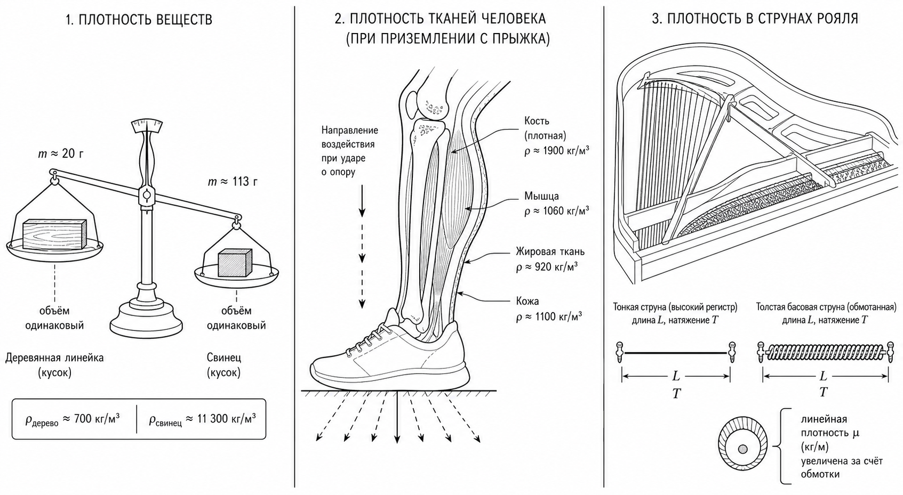
В механике силой называют векторную физическую величину, являющуюся мерой взаимодействия тел, в результате которого тело изменяет скорость своего движения (по модулю или по направлению) или деформируется. Силу обозначают буквой \(F\). Единица силы в СИ — ньютон (Н). Один ньютон — это сила, которая телу массой 1 кг придаёт ускорение \(1\ \text{м/с}^2\):
\[ 1\ \text{Н} = 1\ \text{кг} \cdot 1\ \frac{\text{м}}{\text{с}^2} \]
Поскольку сила — вектор, для её полного описания необходимо указать три характеристики: точку приложения, направление и модуль (числовое значение). На чертежах силу изображают отрезком со стрелкой, начинающимся в точке приложения.
Явление тяготения — фундаментальное свойство всех тел, обладающих массой: они притягивают друг друга. Это взаимодействие называют гравитационным. Закон, описывающий это явление, был установлен Исааком Ньютоном и носит название закона всемирного тяготения: два тела массами \(m_1\) и \(m_2\), находящиеся на расстоянии \(r\) друг от друга, притягиваются с силой
\[ F = G \frac{m_1 m_2}{r^2}, \]
где \(G\) — гравитационная постоянная, одинаковая для всей Вселенной:
\[ G \approx 6{,}67 \cdot 10^{-11}\ \frac{\text{Н} \cdot \text{м}^2}{\text{кг}^2}. \]
Гравитационная постоянная очень мала, поэтому заметное притяжение возникает лишь тогда, когда хотя бы одно из тел обладает огромной массой — как планета или звезда. Именно поэтому мы не замечаем притяжения к соседнему предмету, но отчётливо ощущаем притяжение к Земле.
Сила тяжести — это частный случай силы тяготения: сила, с которой Земля притягивает тело, находящееся на её поверхности или вблизи неё. Силу тяжести обозначают \(F_{\text{тяж}}\). Она всегда направлена вертикально вниз — к центру Земли — и вычисляется по формуле
\[ F_{\text{тяж}} = mg, \]
где \(m\) — масса тела (кг), а \(g\) — ускорение свободного падения, физическая величина, показывающая, с каким ускорением падало бы тело вблизи поверхности Земли при отсутствии сопротивления воздуха. Вблизи поверхности Земли принимают
\[ g \approx 9{,}8\ \frac{\text{Н}}{\text{кг}} \left(\approx 9{,}8\ \frac{\text{м}}{\text{с}^2}\right). \]
Важно различать причину и следствие: тяготение — универсальное явление взаимного притяжения любых масс во Вселенной; сила тяжести — конкретное его проявление для тела, находящегося у поверхности данной планеты. На других планетах и небесных телах значение \(g\) иное, поскольку оно зависит от массы планеты и её радиуса, — но об этом отдельный разговор в одном из следующих параграфов.
Задача 1. Тело массой 5 кг находится вблизи поверхности Земли. Определите силу тяжести, действующую на это тело. Ускорение свободного падения принять равным 9,8 Н/кг.
| Дано | СИ | Решение |
|---|---|---|
| \(m = 5\) кг | — | \(F_{\text{тяж}} = mg\) |
| \(g = 9{,}8\) Н/кг | — | \(F_{\text{тяж}} = 5 \cdot 9{,}8 = 49\ \text{Н}\) |
| Найти: \(F_{\text{тяж}}\) | — | Сила тяжести равна 49 Н |
Физический анализ: сила тяжести 49 Н означает, что для удержания этого тела в равновесии (например, на ладони) нужно приложить снизу силу опоры такой же величины, но противоположно направленную. Величина вполне сопоставима с весом наполненной учебниками сумки — результат правдоподобен.
Задача 2. На тело, находящееся у поверхности Земли, действует сила тяжести 78,4 Н. Определите массу этого тела. Ускорение свободного падения принять равным 9,8 Н/кг.
| Дано | СИ | Решение |
|---|---|---|
| \(F_{\text{тяж}} = 78{,}4\) Н | — | \(F_{\text{тяж}} = mg \Rightarrow m = \dfrac{F_{\text{тяж}}}{g}\) |
| \(g = 9{,}8\) Н/кг | — | \(m = \dfrac{78{,}4}{9{,}8} = 8\ \text{кг}\) |
| Найти: \(m\) | — | Масса тела равна 8 кг |
Физический анализ: масса 8 кг — величина разумного порядка, сопоставимая, например, с массой гантели или крупного тома энциклопедии. Задача демонстрирует, что формула \(F_{\text{тяж}} = mg\) работает в обе стороны: зная силу тяжести, можно найти массу, не взвешивая тело напрямую, а измерив только силу, с которой оно тянет вниз.
Сила тяжести обладает удивительным свойством, которое стоит прочувствовать особо: в свободном полёте она придаёт одинаковое ускорение всем телам независимо от их массы. Это легко проверить логически: если бы более тяжёлое тело падало быстрее, каждая часть составного тела «тянула» бы остальные части иначе, и любое падающее тело двигалось бы неоднозначно — что противоречит наблюдениям. В фазе полёта прыжка — будь то прыжок танцовщика, бросок мяча или падение камня — единственная сила, определяющая траекторию тела (без учёта сопротивления воздуха), это сила тяжести, а ускорение свободного падения одно и то же для всех. Именно поэтому траектория центра масс тела в безопорной фазе прыжка — всегда парабола, и её форма не зависит от того, лёгкий это танцовщик или тяжёлый: физика здесь безразлична к артистическому амплуа, она подчиняется только времени полёта и высоте взлёта.
Другая грань той же силы раскрывается не в полёте, а в опоре — и здесь точнее говорит архитектура. Свод храма, купол или простая колонна существуют именно потому, что должны непрерывно, элемент за элементом, передавать силу тяжести вышестоящей кладки вниз, к фундаменту, а фундамент — к грунту. Каждый камень свода испытывает вес камней над собой и передаёт суммарную нагрузку соседним камням; стоит одному звену этой цепи не справиться с нагрузкой — обрушивается вся конструкция. Скелет человека работает по абсолютно тому же принципу: вес головы передаётся через шейные позвонки на грудные, затем на поясничные, крестец, тазовые кости и, наконец, через бедренные кости, колени и голеностопные суставы — на опору. Стопа при этом выполняет функцию, буквально аналогичную своду здания: она принимает вес всего тела и распределяет его через три точки опоры так, чтобы нагрузка не концентрировалась разрушительно в одной точке. Именно поэтому правильное выравнивание тела в вертикальном положении — не эстетическое требование педагога, а требование механики: сила тяжести должна проходить через оси суставов максимально прямым путём, без изломов, иначе нагрузка на связки и хрящ многократно возрастает там, где выравнивание нарушено.
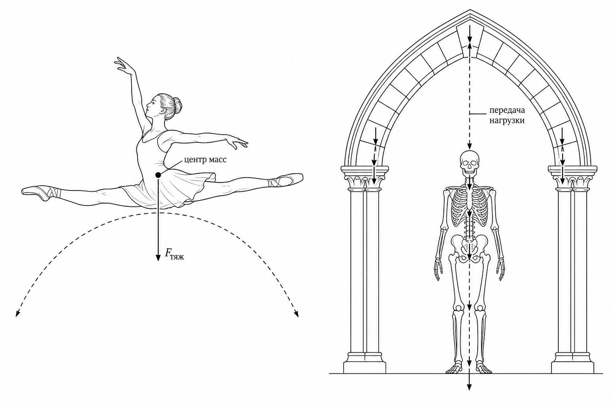
Если на тело действует сила, тело может изменить свою форму и размеры. Это явление называется деформацией.
Различают несколько видов деформации: растяжение, сжатие, сдвиг, изгиб и кручение. По характеру поведения тела после прекращения действия силы деформации делят на два типа:
При упругой деформации в теле возникает сила, которая стремится вернуть тело к первоначальным размерам и форме. Эта сила называется силой упругости \(F_{упр}\). Сила упругости направлена противоположно смещению частиц тела при деформации: при растяжении она направлена внутрь, стягивая тело, при сжатии — наружу, раздвигая его.
Английский физик Роберт Гук экспериментально установил зависимость силы упругости от величины деформации. Пусть тело (например, пружина или резиновый шнур) в недеформированном состоянии имеет длину \(l_0\), а после приложения силы — длину \(l\). Величину
\[x = l - l_0\]
называют удлинением (абсолютной деформацией), измеряется в метрах (м).
Закон Гука: при упругой деформации сила упругости прямо пропорциональна удлинению тела:
\[F_{упр} = k x\]
Здесь \(k\) — жёсткость тела, физическая величина, характеризующая его способность сопротивляться деформации. Жёсткость измеряется в ньютонах на метр (Н/м) и показывает, какая сила упругости возникает при удлинении тела на 1 м. Чем больше жёсткость, тем труднее деформировать тело на одну и ту же величину.
Закон Гука справедлив только в определённых границах. Существует значение деформации, при превышении которого зависимость силы от удлинения перестаёт быть линейной, а после снятия силы тело не возвращается к прежней форме полностью или частично. Эту границу называют пределом упругости. За пределом упругости деформация становится пластической, а при дальнейшем увеличении нагрузки тело может разрушиться.
Важно понимать: сила упругости — это не какая-то отдельная «особая» сила, а общее название для сил, возникающих при упругой деформации любых тел — пружин, стержней, тросов, а также опор, на которые давит другое тело (сила реакции опоры), и поверхностей, которые сжимаются под нагрузкой (сила нормального давления). Во всех этих случаях действует один и тот же физический механизм: смещение частиц вещества из положения равновесия рождает силу, стремящуюся это смещение устранить.
Задача 1.
Резиновый шнур в нерастянутом состоянии имеет длину 50 см. Под действием силы 15 Н он растягивается так, что его длина становится равной 56 см. Нужно найти жёсткость шнура.
| Дано | СИ | Решение |
|---|---|---|
| \(F = 15\) Н | — | \(x = l - l_0\) |
| \(l_0 = 50\) см | \(l_0 = 0{,}5\) м | \(x = 0{,}56 - 0{,}5 = 0{,}06\ \text{м}\) |
| \(l = 56\) см | \(l = 0{,}56\) м | \(k = \dfrac{F}{x}\) |
| Найти: \(k\) | — | \(k = \dfrac{15}{0{,}06} = 250\ \dfrac{\text{Н}}{\text{м}}\) |
Жёсткость шнура составляет 250 Н/м. Это означает, что для растяжения данного шнура на каждый 1 см требуется дополнительная сила примерно в 2,5 Н. Такое значение вполне реалистично для резинового шнура средней толщины: для сравнения, жёсткость стальной пружины в динамометре в десятки и сотни раз выше, поскольку сталь значительно менее податлива, чем резина.
Задача 2.
К пружине жёсткостью 200 Н/м подвесили груз массой 0,5 кг. Нужно найти, на какую величину удлинится пружина, когда груз перестанет двигаться и наступит равновесие. Ускорение свободного падения принять равным 10 Н/кг.
| Дано | СИ | Решение |
|---|---|---|
| \(k = 200\) Н/м | — | \(F_{упр} = mg\) (условие равновесия) |
| \(m = 0{,}5\) кг | — | \(F_{упр} = 0{,}5 \cdot 10 = 5\ \text{Н}\) |
| \(g = 10\) Н/кг | — | \(F_{упр} = kx \Rightarrow x = \dfrac{F_{упр}}{k}\) |
| Найти: \(x\) | — | \(x = \dfrac{5}{200} = 0{,}025\ \text{м} = 2{,}5\ \text{см}\) |
Удлинение пружины составило 2,5 см. Обратите внимание на логику решения: в состоянии равновесия груз не движется, значит сумма сил, действующих на него, равна нулю — сила тяжести уравновешена силой упругости растянутой пружины. Именно это условие равновесия, а не сам закон Гука, позволило нам найти силу упругости; закон Гука затем связал эту силу с деформацией. Этот приём — переход от условия равновесия к силе упругости — станет одним из главных рабочих инструментов в следующих главах.
Закон Гука описывает не абстрактную пружину из учебника — он описывает поведение реального биологического материала, из которого построен опорно-двигательный аппарат. Сухожилия и связки — это не жёсткие тросы и не пассивные верёвки. По своим механическим свойствам они близки к упругим (точнее, вязкоупругим) пружинам: при растяжении в них возникает сила упругости, стремящаяся вернуть их к исходной длине, и в определённых пределах эта сила растёт пропорционально удлинению — почти так же, как в задаче 1.
Это не просто механическая аналогия, а рабочий физический принцип, который используется в каждом плие перед прыжком. Когда артист приседает перед скачком, ахиллово сухожилие и связки свода стопы слегка растягиваются под нагрузкой веса тела. В этот момент в них, как в сжатой или растянутой пружине, накапливается упругая потенциальная энергия. При резком выпрямлении ноги эта энергия возвращается телу почти мгновенно, добавляясь к силе, создаваемой самими мышцами, — так рождается более резкий и высокий прыжок, чем при отталкивании «с места», без предварительного растяжения. Именно поэтому глубокое, эластичное plié перед взлётом — не просто традиционная форма движения, а физически обоснованный способ использовать упругую отдачу тканей.
Но у этого механизма есть строгая физическая граница — предел упругости. До тех пор, пока деформация сухожилия или связки не выходит за этот предел, растяжение обратимо и безопасно: волокна вернутся к исходной длине, отдав накопленную энергию. Если же в результате резкого, неконтролируемого движения (например, жёсткого неамортизированного приземления или подворота стопы) удлинение превышает предел упругости ткани, часть волокон получает микроразрывы или разрывается полностью — это и есть механическая природа растяжений и разрывов связок. Отсюда простое, но физически строгое правило контроля движения: чем плавнее нарастает деформация (растяжение через полную амортизацию в стопе, голеностопе, колене), тем меньше вероятность, что какой-то отдельный участок ткани получит нагрузку, резко выходящую за предел его упругости.
Тот же закон, но в неживой конструкции, работает в архитектуре высотных зданий. Небоскрёб не является абсолютно жёстким телом: под напором ветра его верхние этажи упруго отклоняются от вертикали на десятки сантиметров, а затем возвращаются обратно — конструкция ведёт себя как гигантская вертикальная пружина, в которой сила упругости несущего каркаса пропорциональна величине отклонения. Инженеры сознательно проектируют здание так, чтобы при любых реалистичных ветровых нагрузках деформация оставалась в пределах упругости материала: тогда энергия ветра безопасно поглощается и возвращается, а не накапливается в виде остаточных, разрушающих смещений. Здание, лишённое этой упругой «податливости», было бы не прочнее, а хрупче — оно ломалось бы там, где гибкая конструкция просто слегка гнётся и выпрямляется обратно.
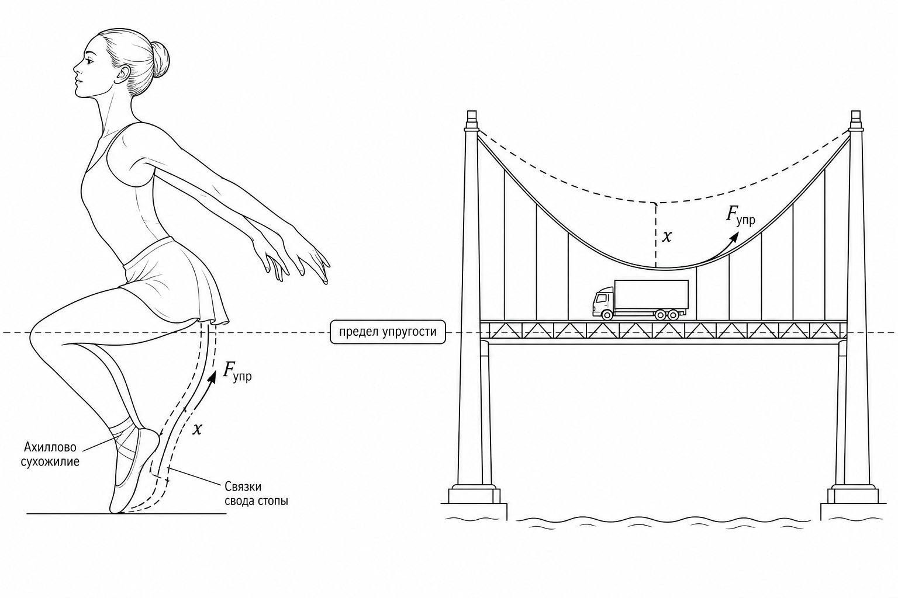
В обычной речи слова «вес» и «масса» часто путают, но в физике это два разных понятия, и разница между ними — ключ к пониманию невесомости.
Масса тела \(m\) — мера его инертности, она не зависит от места, где находится тело: масса гантели одинакова на Земле, на Луне и в открытом космосе. Измеряется в килограммах (кг).
Сила тяжести \(F_{тяж}\) — сила, с которой планета притягивает тело. Она приложена к самому телу (к каждой его частице) и направлена к центру планеты: \[ F_{тяж} = mg, \] где \(g\) — ускорение свободного падения в данном месте, измеряется в метрах на секунду в квадрате (м/с²). На поверхности Земли \(g \approx 9{,}8\) м/с², в расчётах для 7 класса обычно округляют до \(g = 10\) м/с².
Вес тела \(P\) — это сила, с которой тело, притягиваемое планетой, действует на опору или подвес, деформируя их. В отличие от силы тяжести, вес приложен не к телу, а к опоре (полу, тросу, весам) — со стороны тела. Измеряется в ньютонах (Н).
Когда тело покоится на неподвижной горизонтальной опоре, по третьему закону Ньютона опора действует на тело силой реакции \(N\), равной по модулю весу и направленной противоположно ему, и в этом случае вес численно совпадает с силой тяжести: \[ P = mg. \]
Но если тело и опора движутся с ускорением \(a\) (например, в кабине лифта, в вагоне фуникулёра, в момент прыжка), вес отличается от силы тяжести. Если ускорение направлено вверх: \[ P = m(g + a), \] вес возрастает — это состояние называют перегрузкой. Если ускорение направлено вниз: \[ P = m(g - a), \] вес уменьшается.
Особый случай возникает, когда \(a = g\), то есть тело движется вниз со свободным падением — без сопротивления воздуха и без опоры, замедляющей его падение. Тогда \[ P = m(g - g) = 0. \]
Это состояние называется невесомостью: сила тяжести не исчезает и продолжает действовать на тело, но вес — то есть сила давления на опору — становится равным нулю, потому что и тело, и та поверхность, которая могла бы служить опорой, падают с одинаковым ускорением \(g\) и не давят друг на друга. Важно понимать: невесомость — это не отсутствие тяготения, а отсутствие взаимодействия с опорой при свободном падении.
Тяготение на других планетах. Ускорение свободного падения определяется массой \(M\) и радиусом \(R\) притягивающего тела (это следует из закона всемирного тяготения, изученного в §9): \[ g = \frac{GM}{R^2}, \] где \(G = 6{,}67 \cdot 10^{-11}\ \dfrac{\text{Н} \cdot \text{м}^2}{\text{кг}^2}\) — гравитационная постоянная. Поскольку у разных небесных тел разные \(M\) и \(R\), значение \(g\) на них различно:
| Небесное тело | \(g\), м/с² |
|---|---|
| Земля | 9,8 |
| Луна | 1,6 |
| Марс | 3,7 |
| Юпитер | 24,8 |
Масса тела на всех этих телах будет одна и та же — она характеризует само тело. А вес \(P = mg\) — разный, потому что зависит от того, где это тело находится.
Задача 1. Человек массой 60 кг стоит в кабине лифта на весах. Кабина начинает подниматься, разгоняясь с ускорением 2 м/с², направленным вертикально вверх. Считая ускорение свободного падения равным 10 м/с², найдите показания весов (вес человека) во время разгона кабины и сравните этот вес с весом человека в покое.
| Дано | СИ | Решение |
|---|---|---|
| \(m = 60\) кг | — | \(P = m(g + a)\) |
| \(a = 2\) м/с² | — | \(P = 60 \cdot (10 + 2) = 720\) Н |
| \(g = 10\) м/с² | — | Вес в покое: \(P_0 = mg = 60 \cdot 10 = 600\) Н |
| Найти: \(P\), сравнить с \(P_0\) | — | \(P - P_0 = 720 - 600 = 120\) Н — вес увеличился |
Во время разгона лифта вверх весы показали бы не 600 Н, а 720 Н — на 120 Н больше. Это и есть перегрузка: тело давит на опору сильнее, чем в состоянии покоя, потому что опора сообщает ему ещё и ускорение. Ощущение «тяжести» при старте лифта вверх и, наоборот, лёгкости при начале движения вниз — прямое телесное подтверждение того, что вес — не постоянная характеристика тела, а результат взаимодействия с опорой.
Задача 2. Масса тела человека равна 80 кг. Известно, что на поверхности Луны ускорение свободного падения составляет 1,6 м/с². Найдите вес этого человека на поверхности Земли (при \(g = 10\) м/с²) и на поверхности Луны, и определите, во сколько раз вес на Луне меньше, чем на Земле.
| Дано | СИ | Решение |
|---|---|---|
| \(m = 80\) кг | — | \(P_З = m g_З\) |
| \(g_З = 10\) м/с² | — | \(P_З = 80 \cdot 10 = 800\) Н |
| \(g_Л = 1{,}6\) м/с² | — | \(P_Л = m g_Л = 80 \cdot 1{,}6 = 128\) Н |
| Найти: \(P_З\), \(P_Л\), \(P_З / P_Л\) | — | \(\dfrac{P_З}{P_Л} = \dfrac{800}{128} \approx 6{,}25\) |
Масса человека — 80 кг — не изменилась ни на Земле, ни на Луне: инертность тела осталась той же. А вес изменился в 6,25 раза, потому что вес зависит от \(g\) в данной точке пространства. Именно поэтому космонавты на Луне могли передвигаться большими прыжками, почти не прилагая усилий, — их мышцы развивали ту же силу, что и на Земле, но эта сила действовала против гораздо меньшего сопротивления веса.
Есть область человеческого движения, где невесомость не нужно объяснять на пальцах — тело переживает её ежедневно, буквально, без всякой метафоры. Это фаза полёта в высоком прыжке: гран жете, прыжок в высоту, разбег и взлёт. В момент, когда стопа отрывается от пола, единственная сила, действующая на артиста, — сила тяжести. Опоры больше нет, а значит, и веса — той силы, что давит на пол, — тоже нет. Всё тело в этот момент находится в состоянии свободного падения, ровно в том физическом смысле, в каком это происходит с телом в кабине лифта с оборванным тросом или с космонавтом на орбите. Ощущение «зависания» в верхней точке прыжка — не поэтическая вольность, а точное отражение того, что \(P = 0\), хотя \(F_{тяж} = mg\) продолжает действовать и именно она возвращает тело на землю.
Это различие между силой тяжести и весом объясняет и обратное ощущение — «тяжесть» тела сразу после приземления. В момент контакта стопы с полом скорость вертикального падения гасится за очень короткое время, то есть возникает большое ускорение, направленное вверх, и по формуле \(P = m(g+a)\) вес резко превышает обычный: суставы и связки на мгновение принимают нагрузку, кратно большую массы тела. Именно поэтому мягкое, растянутое во времени приземление — через полупальцы, через плие — физически снижает пик этой силы: то же изменение скорости, растянутое на большее время, означает меньшее ускорение \(a\), а значит, и меньший пиковый вес, принимаемый суставами.
Есть в этом и биофизический смысл, важный для здоровья: кратковременная фаза полёта — единственный момент, когда межпозвонковые диски и суставной хрящ полностью освобождаются от осевой нагрузки. Хрящ, как поропругий материал (об этом ещё будет разговор в главе о давлении), в такие мгновения слегка восстанавливает форму, впитывая межтканевую жидкость. Регулярные фазы разгрузки в течение дня — не только высокие прыжки, но и просто смена позы, лежание, — физиологически необходимы суставам ровно потому, что постоянный вес без пауз — постоянное давление без восстановления.
Наконец, представление о том, что сила тяжести на разных планетах различна, — не праздная фантазия, а строгий инструмент физического воображения. Высота прыжка при заданной начальной скорости отталкивания \(v\) определяется формулой \(h = v^2/(2g)\): чем меньше \(g\), тем выше поднимется тело при той же мышечной работе. Если бы урок классического танца проходил на Марсе, где \(g\) втрое меньше земного, тот же самый импульс, сообщённый мышцами при отталкивании, поднял бы артиста в воздух втрое выше и удержал бы его в полёте значительно дольше — не потому что тело стало сильнее, а потому что сопротивление тяготения стало слабее.
Артист выполняет высокий прыжок с места и в верхней точке на короткое время оказывается в состоянии, которое физика называет невесомостью. Объясните, действует ли на него в этот момент сила тяжести, и почему при этом его вес равен нулю. Что произойдёт с его весом в момент приземления и почему мягкое, пружинящее приземление через плие снижает нагрузку на суставы по сравнению с жёстким приземлением на прямые ноги?
Представьте, что тренировочный зал перенесли на поверхность планеты, где ускорение свободного падения в два раза меньше земного. Масса артиста при этом не изменилась. Объясните, изменится ли вес артиста и во сколько раз, изменится ли его масса, и как изменится высота, на которую он сможет подняться при прыжке с той же скоростью отталкивания, что и на Земле.
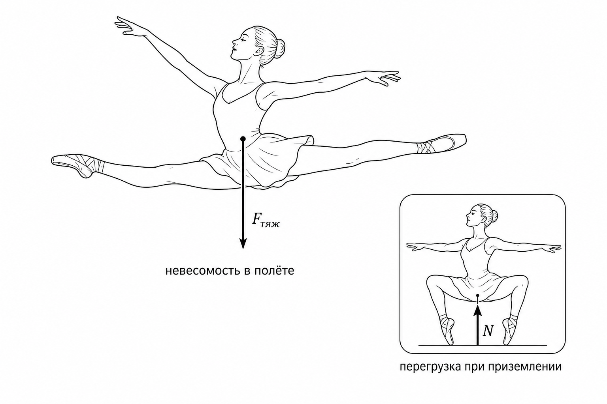
Динамометр — прибор для измерения силы. Его устройство основано на законе Гука: если упругий элемент прибора (обычно стальная пружина) закреплён одним концом неподвижно, а к другому концу прикладывается измеряемая сила, пружина растягивается на величину, пропорциональную приложенной силе. Поскольку зависимость \(F = kx\) линейна, шкалу растяжения можно прямо градуировать в ньютонах — единицах силы в СИ.
Лабораторный динамометр состоит из корпуса, пружины, указателя (стрелки) и шкалы. У каждого динамометра есть предел измерения — наибольшая сила, которую можно приложить без остаточной деформации пружины, и цена деления — значение силы, соответствующее одному наименьшему делению шкалы. Превышение предела измерения разрушает линейную зависимость \(F = kx\) и делает показания прибора недостоверными — пружина растягивается непропорционально или не возвращается в исходное состояние.
При измерении силу нужно прилагать точно вдоль оси пружины динамометра: только в этом случае деформация пружины прямо соответствует модулю измеряемой силы. Если направление приложения силы отклоняется от оси прибора, показание динамометра соответствует не всей силе, а лишь её составляющей вдоль этой оси — с наклонным приложением силы измерение становится неточным.
Равнодействующая (результирующая) сила. Если на тело одновременно действуют несколько сил, их совместное действие часто можно заменить действием одной силы, вызывающей тот же эффект. Такая сила называется равнодействующей и обозначается \(F\) (иногда \(F_{\text{рез}}\)).
Рассмотрим частный, но важный случай: на тело действуют две силы \(F_1\) и \(F_2\), направленные вдоль одной прямой.
Если силы направлены в одну сторону, их модули складываются, а равнодействующая направлена туда же, куда направлены обе силы: \[ F = F_1 + F_2 \]
Если силы направлены в противоположные стороны, равнодействующая равна разности модулей и направлена в сторону большей по модулю силы: \[ F = |F_1 - F_2| \]
Частный случай этого правила — равновесие сил: если две силы, направленные вдоль одной прямой в противоположные стороны, равны по модулю (\(F_1 = F_2\)), их равнодействующая равна нулю. Тело, на которое действует только эта пара сил, находится в состоянии равновесия — покоится или движется равномерно и прямолинейно.
Единица измерения силы в СИ — ньютон (Н). При решении задач важно всегда явно указывать не только модуль, но и направление каждой силы, иначе действие «сложить силы» лишается смысла: складываются не числа, а векторы, и правило сложения зависит от их взаимной ориентации.
Задача 1.
Условие задачи. К пружине динамометра подвесили груз массой 300 г. Под действием силы тяжести пружина растянулась на 4 см, и стрелка прибора показала силу 3 Н. Требуется определить жёсткость пружины этого динамометра.
| Дано | СИ | Решение |
|---|---|---|
| \(F = 3\) Н | — | \(k = \dfrac{F}{x}\) |
| \(x = 4\) см | \(x = 0{,}04\) м | \(k = \dfrac{3}{0{,}04} = 75\ \text{Н/м}\) |
| \(m = 300\) г | \(m = 0{,}3\) кг (справочно) | — |
| Найти: \(k\) | — | Жёсткость пружины равна 75 Н/м |
Физический анализ: масса груза в этой задаче — дополнительное данное, позволяющее проверить правдоподобность результата. Сила тяжести, действующая на груз массой 0,3 кг, равна приблизительно \(mg \approx 0{,}3 \cdot 9{,}8 \approx 2{,}94\) Н, что практически совпадает с показанием динамометра (3 Н). Это подтверждает, что прибор откалиброван верно: его пружина действительно подчиняется закону Гука в рабочем диапазоне.
Задача 2.
Условие задачи. К одному крюку, закреплённому на теле, прицепили два динамометра, тянущих тело вдоль одной прямой в противоположные стороны. Первый динамометр показывает силу 12 Н, направленную вправо, второй — силу 5 Н, направленную влево. Нужно найти равнодействующую силу, приложенную к телу, и указать её направление.
| Дано | СИ | Решение |
|---|---|---|
| \(F_1 = 12\) Н (вправо) | — | Силы направлены вдоль одной прямой в противоположные стороны |
| \(F_2 = 5\) Н (влево) | — | \(F = F_1 - F_2\) |
| Найти: \(F\) | — | \(F = 12 - 5 = 7\ \text{Н}\), направлена вправо |
Физический анализ: равнодействующая (7 Н) меньше каждой из «победившей» силы \(F_1\), потому что часть её действия «погашена» противодействующей силой \(F_2\). Направление результирующей силы всегда совпадает с направлением большей из двух сил — здравый смысл здесь и точный расчёт дают одинаковый ответ, что стоит проверять в каждой задаче на равнодействующую.
Пружина динамометра — не единственная модель, в которой сила проявляется через противодействие. Собственное тело артиста устроено так, что почти каждое сочленение управляется парой мышц, тянущих в противоположные стороны вдоль одной и той же линии действия — так называемых мышц-антагонистов. Например, на предплечье бицепс сгибает руку в локте, а трицепс — разгибает; оба крепятся так, что линия их тяги проходит практически вдоль одной оси сустава, только в противоположных направлениях.
Когда рука удерживается неподвижно в согнутом положении, сила тяги бицепса и сила тяги трицепса не равны нулю по отдельности — они обе значительны, — но их результирующий момент относительно сустава уравновешен: это то самое условие равновесия сил, направленных вдоль одной линии, только на роль «линии» здесь встаёт плечо силы относительно оси сустава. Стоит одной из мышц-антагонистов ослабнуть или, наоборот, чрезмерно напрячься относительно другой — равновесие нарушается, и сустав получает результирующую силу, отличную от нуля, что при резком движении может привести к перегрузке связок именно с той стороны, куда «перетянула» более сильная мышца. Осознанная работа с антагонистами — не про одну «главную» мышцу, а про баланс тяг противоположного направления — прямое физическое основание для грамотной техники и профилактики травм.
Второй пример — партнёрская поддержка. Когда партнёр удерживает партнёршу в вертикальном положении над собой, на её тело действуют две силы вдоль одной вертикальной прямой: сила тяжести, направленная вниз, и сила опоры (реакция рук партнёра), направленная вверх. Если эти силы равны по модулю, равнодействующая равна нулю — партнёрша неподвижна в воздухе относительно партнёра, поддержка «держит» устойчиво. Если сила опоры на мгновение превышает силу тяжести — возникает результирующая сила вверх, и тело партнёрши ускоряется вверх (подъём); если сила опоры оказывается меньше — результирующая направлена вниз, и начинается неконтролируемое опускание. Именно поэтому неожиданный, несогласованный по времени рывок одного из партнёров — это не про «недостаточную силу», а про мгновенное нарушение равенства этих двух сил вдоль одной вертикальной линии, которое тело чувствует как потерю опоры или толчок. Чистая физика равнодействующей здесь превращается в ощущение доверия и слаженности дуэта.
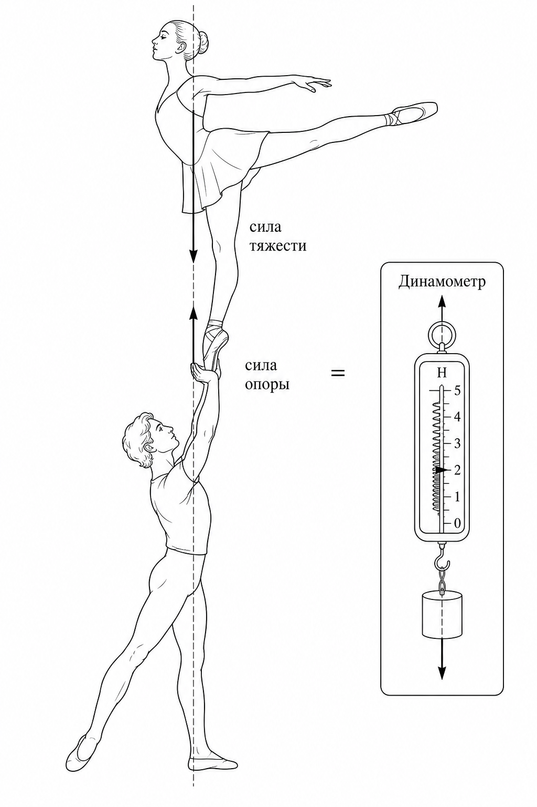
При относительном перемещении (или при попытке такого перемещения) двух соприкасающихся тел на границе их контакта возникает сила, направленная вдоль поверхности соприкосновения и противодействующая относительному движению. Эту силу называют силой трения.
Причина возникновения силы трения — двойная. Во-первых, поверхности твёрдых тел даже после самой тщательной обработки остаются шероховатыми: при увеличении на них видны микроскопические выступы и впадины, которые при контакте зацепляются друг за друга. Во-вторых, в местах истинного (микроскопического) контакта поверхностей действуют силы межмолекулярного притяжения. Оба механизма препятствуют свободному скольжению одной поверхности по другой.
Различают три вида трения.
Трение покоя возникает между соприкасающимися телами, когда одно из них под действием внешней силы стремится сдвинуться относительно другого, но остаётся в покое. Сила трения покоя не является постоянной величиной: она принимает значения от нуля до некоторого максимального значения \(F_{\text{тр.max}}\), в точности уравновешивая внешнюю силу, пока та не превысит этот предел. Как только внешняя сила становится больше \(F_{\text{тр.max}}\), тело начинает скользить.
Трение скольжения возникает при относительном перемещении одной поверхности по другой. Основной закон, описывающий трение скольжения (закон Амонтона — Кулона), записывается так:
\[ F_{\text{тр}} = \mu N, \]
где \(F_{\text{тр}}\) — сила трения скольжения (Н), \(N\) — сила нормальной реакции опоры, то есть сила, с которой поверхности прижаты друг к другу (Н), \(\mu\) — коэффициент трения скольжения — безразмерная величина, зависящая от материалов трущихся поверхностей и от степени их обработки (шероховатости), но практически не зависящая от площади контакта и от скорости скольжения.
Важно подчеркнуть на уровне строгого факта: сила трения скольжения зависит не от того, какой площадью тело касается опоры, а от того, с какой силой оно прижато к ней. Широкий и узкий брусок одинаковой массы, поставленные на разные грани, будут испытывать одинаковую силу трения при движении по одной и той же поверхности.
Трение качения возникает, когда одно тело катится по поверхности другого (колесо, каток, шарик подшипника). При тех же силах нормального давления трение качения, как правило, значительно меньше трения скольжения — именно поэтому в технике для уменьшения потерь используют колёса, катки и подшипники.
Единица измерения силы трения в СИ — ньютон (Н), как и для любой силы.
Трение играет двойственную роль. С одной стороны, без него невозможны многие явления, которые мы считаем естественными: ходьба (отталкивание стопы от опоры), удержание предметов в руке, торможение автомобиля, сцепление гвоздя с деревом, работа ремённой передачи. С другой стороны, трение скольжения переводит часть механической энергии движения в тепловую (детали нагреваются) и вызывает износ поверхностей. Поэтому в технике трение целенаправленно уменьшают (смазка, полировка, подшипники качения) там, где оно вредно, и увеличивают (рифление подошв, посыпка песком дорог, насечка на инструментах) там, где оно необходимо для сцепления.
Задача 1.
Деревянный брусок массой 4 кг равномерно тянут по горизонтальной поверхности стола. Коэффициент трения скольжения между бруском и поверхностью стола равен 0,3. Ускорение свободного падения принять равным 10 м/с². Нужно найти силу трения скольжения, действующую на брусок во время равномерного движения.
| Дано | СИ | Решение |
|---|---|---|
| \(m = 4\) кг | — | \(N = mg\) |
| \(\mu = 0{,}3\) | — | \(N = 4 \cdot 10 = 40\ \text{Н}\) |
| \(g = 10\ \text{м/с}^2\) | — | \(F_{\text{тр}} = \mu N\) |
| Найти: \(F_{\text{тр}}\) | — | \(F_{\text{тр}} = 0{,}3 \cdot 40 = 12\ \text{Н}\) |
При равномерном движении бруска, согласно первому закону динамики, сила трения по модулю должна равняться внешней тянущей силе — то есть для того, чтобы просто удерживать равномерное скольжение бруска, к нему нужно прикладывать горизонтальную силу не менее 12 Н. Ответ физически разумен: коэффициент трения дерева по дереву (порядка 0,2–0,5) хорошо согласуется с табличными данными.
Задача 2.
Санки с грузом общей массой 20 кг равномерно тащат по горизонтальному льду, прилагая к ним горизонтальную силу 30 Н. Ускорение свободного падения принять равным 10 м/с². Нужно найти коэффициент трения скольжения полозьев санок по льду.
| Дано | СИ | Решение |
|---|---|---|
| \(m = 20\) кг | — | \(N = mg\) |
| \(F = 30\) Н | — | \(N = 20 \cdot 10 = 200\ \text{Н}\) |
| \(g = 10\ \text{м/с}^2\) | — | При равномерном движении \(F_{\text{тр}} = F\) |
| Найти: \(\mu\) | — | \(\mu = \dfrac{F_{\text{тр}}}{N} = \dfrac{30}{200} = 0{,}15\) |
Полученное значение \(\mu = 0{,}15\) хорошо соответствует реальным табличным значениям коэффициента трения металла (полозьев) по льду, который обычно лежит в диапазоне 0,02–0,2 в зависимости от состояния поверхности льда — ещё одно подтверждение того, что результат физически правдоподобен.
Трение — редкий пример физического явления, чья суть раскрывается ярче не через зрительный образ, а через звук: смычок скрипки движется по струне не гладко, а рывками, и именно в этой прерывистости рождается тон. Пока смычок прижимает волос к струне, действует трение покоя: струна «прилипает» к смычку и растягивается вместе с ним, накапливая упругую энергию, — сила натяжения растёт, пока не превысит максимальное значение силы трения покоя. В этот момент струна срывается и проскальзывает назад под действием собственной упругости — и здесь в игру вступает трение скольжения, которое меньше трения покоя, поэтому проскальзывание происходит быстро. Затем струна снова «прилипает» к смычку, и цикл повторяется. Это явление называют прерывистым скольжением (stick-slip), и частота этих циклов «прилипание — срыв» и есть частота звучащей ноты. Так различие между максимальной силой трения покоя и силой трения скольжения — то самое различие, которое мы вводим в теории, — оказывается не абстрактной деталью закона, а буквально механизмом рождения музыкального звука.
В теле танцовщика та же физика решает вопрос жизни и безопасности на сцене, только без всякой метафоричности — здесь трение действует напрямую. Подошва пуанты или балетной туфли должна обеспечивать коэффициент трения, находящийся в очень узком «рабочем окне»: слишком малое \(\mu\) — и стопа предательски проскальзывает при опоре, разрушая баланс и создавая риск падения и травмы связок голеностопа; слишком большое \(\mu\) — и стопа «залипает» на полу при повороте, тело продолжает вращаться по инерции, а стопа остаётся зафиксированной, что даёт опасную скручивающую нагрузку на колено и голеностоп. Именно поэтому танцовщики натирают подошвы канифолью (увеличивая \(\mu\) там, где сцена слишком гладкая) или, наоборот, слегка полируют новые пуанты (уменьшая избыточное сцепление). Это не украшающая параллель — это прямое инженерное управление тем же самым коэффициентом \(\mu\), который стоит в формуле \(F_{\text{тр}} = \mu N\).
Внутри собственного тела природа решает противоположную задачу — не увеличить трение, а свести его почти к нулю. В синовиальных суставах (колене, тазобедренном, голеностопном) хрящевые поверхности костей разделены тонким слоем синовиальной жидкости, которая действует как естественная смазка: коэффициент трения между смазанными хрящевыми поверхностями настолько мал (в сотни раз меньше, чем у смазанных металлических деталей в технике), что суставы способны выдерживать десятки тысяч циклов сгибания-разгибания за карьеру артиста практически без разрушительного износа. Здесь физика трения работает как биологическая инженерия: чем меньше \(\mu\), тем меньше тепловыделение и износ хряща при каждом plié, прыжке или шаге — и тем дольше сустав остаётся здоровым.
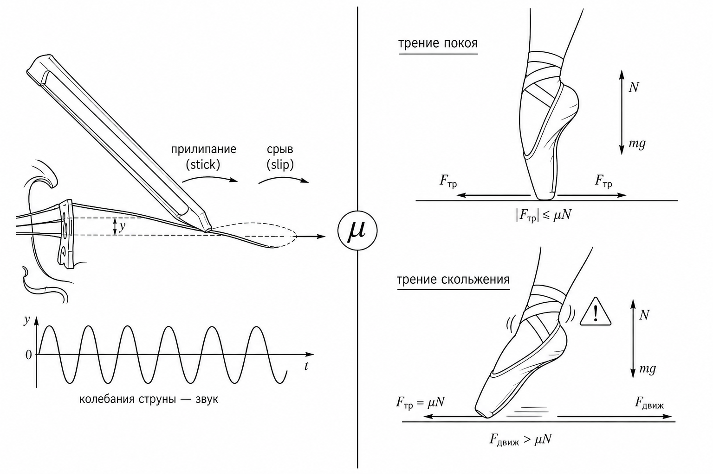
Когда одно твёрдое тело опирается на другое или давит на него какой-либо силой, действие этой силы не одинаково «размазано» по поверхности контакта — оно зависит и от самой силы, и от площади, на которую она распределена. Для описания этого эффекта в физике введена отдельная величина — давление.
Давление — это физическая величина, равная отношению силы, действующей перпендикулярно поверхности, к площади этой поверхности:
\[ P = \frac{F}{S} \]
где \(F\) — сила, действующая перпендикулярно поверхности (Н), \(S\) — площадь поверхности, на которую действует сила (м²), \(P\) — давление (Па).
Единица давления в СИ называется паскалем (Па) в честь французского учёного Блеза Паскаля:
\[ 1\ \text{Па} = \frac{1\ \text{Н}}{1\ \text{м}^2} \]
То есть 1 Па — это давление, которое создаёт сила 1 Н, равномерно распределённая по площади 1 м². Поскольку паскаль — очень маленькая величина, на практике часто используют кратные единицы: 1 кПа = 1000 Па, 1 МПа = 1 000 000 Па.
Важно чётко различать две родственные, но разные величины: - сила, действующая на тело (в частности, сила тяжести, вес) — измеряется в ньютонах и не зависит от того, на какую площадь она передаётся; - давление, которое эта сила создаёт на конкретной опоре — зависит и от силы, и от площади контакта.
Из формулы \(P = F/S\) следует, что давление можно изменить двумя независимыми способами:
Отсюда вытекают два практических правила, которыми люди пользуются постоянно, часто даже не задумываясь о физике:
Из формулы давления легко получить выражения для силы и площади, если известно давление:
\[ F = P \cdot S, \qquad S = \frac{F}{P} \]
Эти формулы равноправны с исходной и применяются в зависимости от того, какая величина неизвестна в задаче.
Задача 1.
Условие. На стол поставлен деревянный кубик массой 2 кг. Площадь опоры кубика на стол составляет 200 см². Определите давление, которое кубик оказывает на поверхность стола. Ускорение свободного падения принять равным 10 Н/кг.
| Дано | СИ | Решение |
|---|---|---|
| \(m = 2\) кг | — | Сила давления кубика на стол равна силе тяжести: \(F = mg\) |
| \(S = 200\) см² | \(S = 0{,}02\) м² | \(F = 2 \cdot 10 = 20\) Н |
| \(g = 10\) Н/кг | — | \(P = \dfrac{F}{S}\) |
| Найти: \(P\) | — | \(P = \dfrac{20}{0{,}02} = 1000\) Па \(= 1\) кПа |
Физический анализ: давление порядка 1 кПа — вполне реалистичная величина для небольшого твёрдого предмета на столе. Обратим внимание на ключевой шаг: площадь была переведена из квадратных сантиметров в квадратные метры до подстановки в формулу — без этого перевода результат был бы ошибочен в 10 000 раз, так как \(1\ \text{м}^2 = 10\,000\ \text{см}^2\).
Задача 2.
Условие. Человек массой 60 кг стоит на полу, опираясь на обе стопы; суммарная площадь опоры двух подошв равна 400 см². Затем этот же человек поднимается на носки, и площадь опоры уменьшается до 40 см². Найдите давление, которое человек оказывает на пол в обоих случаях, и определите, во сколько раз давление увеличилось при подъёме на носки. Ускорение свободного падения принять равным 10 Н/кг.
| Дано | СИ | Решение |
|---|---|---|
| \(m = 60\) кг | — | \(F = mg = 60 \cdot 10 = 600\) Н |
| \(S_1 = 400\) см² | \(S_1 = 0{,}04\) м² | \(P_1 = \dfrac{F}{S_1} = \dfrac{600}{0{,}04} = 15\,000\) Па |
| \(S_2 = 40\) см² | \(S_2 = 0{,}004\) м² | \(P_2 = \dfrac{F}{S_2} = \dfrac{600}{0{,}004} = 150\,000\) Па |
| \(g = 10\) Н/кг | — | \(\dfrac{P_2}{P_1} = \dfrac{150\,000}{15\,000} = 10\) |
| Найти: \(P_1\), \(P_2\), \(\dfrac{P_2}{P_1}\) | — | Давление увеличилось в 10 раз |
Физический анализ: сила тяжести человека не изменилась ни на ньютон — она полностью определяется его массой. Изменилась только площадь опоры, уменьшившись в 10 раз (с 400 до 40 см²), и ровно в 10 раз выросло давление. Это прямое и наглядное следствие обратной пропорциональности давления и площади при постоянной силе — и оно будет нашим физическим ключом к разделу 3.
Задача 2 неслучайно построена именно так: она напрямую описывает то, что происходит со стопой танцовщика при подъёме на полупальцы и особенно на пуант. Разберём эту ситуацию не как красивую иллюстрацию, а как физическую причину реальной биомеханической нагрузки.
Когда стопа стоит на полной подошве, вес тела распределён по относительно большой площади: пятка, свод и плюсневые кости работают совместно, каждая берёт на себя лишь часть общей нагрузки. Когда стопа поднимается на пуант, площадь контакта с полом сокращается до пятачка размером в несколько квадратных сантиметров — площадки на кончике пуанта, и практически вся нагрузка передаётся через головки нескольких плюсневых костей и сесамовидные кости большого пальца. Сила не изменилась — изменилась площадь, через которую эта сила должна «пройти», и, как показал расчёт, давление на опорные структуры стопы вырастает в разы, а в реальном движении — с учётом динамических ударных нагрузок при приземлении и переносе веса — ещё сильнее. Именно поэтому работа на пуантах требует не «сильных пальцев ног» в бытовом смысле, а десятилетий выстроенного мышечного контроля, который перераспределяет часть нагрузки на мышцы голени и свода стопы, не позволяя всему давлению обрушиться на несколько точек костной ткани. Понимание этой простой формулы \(P = F/S\) объясняет физическую природу типичных профессиональных перегрузок: стресс-переломов плюсневых костей, повреждений сесамовидных костей, бурситов большого пальца — все они связаны не с избыточным весом тела, а с чрезмерной концентрацией силы на малой площади контакта.
Интересно, что в архитектуре та же самая формула применяется с прямо противоположной целью. Фундамент здания — это, по сути, «обувь» дома: чем тяжелее конструкция, тем шире и массивнее должен быть фундамент, чтобы распределить вес постройки по большей площади грунта и не превысить несущую способность почвы. Узкий фундамент под тяжёлым зданием создал бы огромное давление на грунт в точках опоры, что привело бы к его разрушению или неравномерной осадке — почти то же самое, что происходит с костями стопы при слишком долгой или технически неверной работе на пуантах. Разница лишь в цели: инженер увеличивает площадь опоры, чтобы снизить давление и сохранить конструкцию; танцовщик, наоборот, сознательно уменьшает площадь опоры до минимума, потому что этого требует художественная форма движения — линия, устремлённая вверх, — и тогда единственным способом защитить тело становится не увеличение площади (это невозможно на пуанте), а безупречное распределение силы через правильно выстроенное положение стопы, коленей и таза, минимизирующее пиковую нагрузку в каждой точке контакта.
Так один и тот же физический закон — давление как отношение силы к площади — в одном случае диктует инженеру расширять основание, а в другом требует от танцовщика годы тренировки, чтобы компенсировать сознательно суженную площадь опоры работой всего тела.
Объясните, почему широкие лыжи позволяют человеку идти по глубокому рыхлому снегу почти не проваливаясь, тогда как тот же человек в обычных зимних ботинках проваливается в снег почти по колено. Свой ответ обоснуйте, указав, какая физическая величина при этом остаётся неизменной, а какая меняется и почему это меняет давление на снег.
Танцовщик стоит сначала на полной стопе, затем переходит на полупальцы и, наконец, поднимается на пуант. Его масса при этом не меняется ни на грамм. Объясните, почему при этом резко меняется нагрузка, испытываемая костями и связками стопы, и почему опытные педагоги настаивают на постепенном, многолетнем укреплении мышц стопы и голени перед тем, как ученик начинает регулярно работать на пуантах.
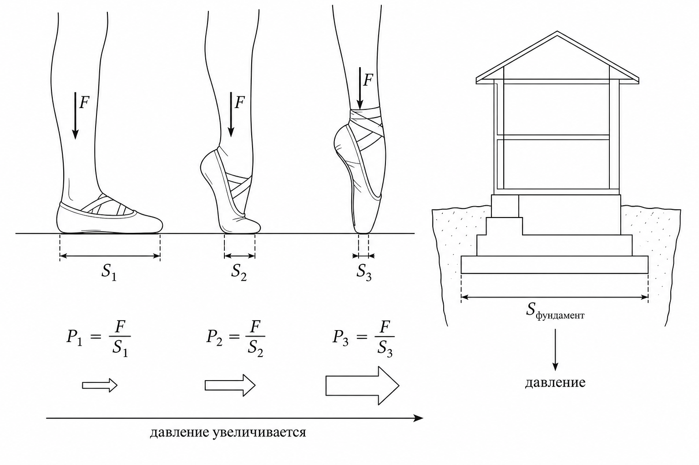
Газ отличается от твёрдого тела и жидкости главным свойством: его молекулы движутся практически свободно, хаотично, с большими скоростями, сталкиваясь друг с другом и со стенками сосуда. Каждый удар молекулы о стенку передаёт ей небольшой импульс силы. Поскольку число молекул в любом реальном объёме газа огромно (порядка \(10^{23}\) и больше), эти отдельные удары складываются в непрерывную, постоянную по времени силу, действующую на каждый участок стенки. Именно эту силу, приходящуюся на единицу площади, мы называем давлением газа.
Давление определяется общей формулой, справедливой для любого тела, оказывающего силу перпендикулярно поверхности: \[ p = \frac{F}{S}, \] где \(F\) — сила, действующая перпендикулярно поверхности (Н), \(S\) — площадь этой поверхности (\(\text{м}^2\)), \(p\) — давление (Па, паскаль). Один паскаль — это давление, которое создаёт сила 1 Н, равномерно распределённая по площади 1 \(\text{м}^2\).
Давление газа зависит от трёх факторов:
Принципиальное отличие газа от твёрдого тела заключается в том, что твёрдое тело передаёт силу только в направлении её приложения, а свободно движущиеся молекулы газа ударяют по стенкам сосуда со всех сторон одинаково интенсивно — газ давит не «куда-то», а во все стороны сразу, причём равномерно, если сам газ находится в равновесии.
Это свойство лежит в основе фундаментального закона, открытого французским учёным Блезом Паскалем.
Закон Паскаля: давление, создаваемое внешней силой в жидкости или газе, передаётся одинаково во все точки этой жидкости или газа и действует перпендикулярно любой поверхности, с которой соприкасается жидкость или газ, независимо от её ориентации.
Механизм этой передачи объясняется той же молекулярной картиной: молекулы газа или жидкости не закреплены жёстко относительно друг друга, как в твёрдом теле, а способны перемещаться и передавать друг другу импульс во всех направлениях. Если на поршень, ограничивающий газ в закрытом сосуде, надавить с некоторой силой, дополнительное давление немедленно распределится по всему объёму газа и будет одинаково ощущаться на любом участке стенки сосуда, а не только под самим поршнем.
Важно чётко разграничить закон Паскаля и вопрос о том, как меняется давление жидкости с глубиной под действием силы тяжести — это отдельное явление, которое будет рассмотрено в следующем параграфе. Закон Паскаля описывает передачу дополнительного давления, вызванного внешней силой, а не давление собственного веса жидкости или газа.
Задача 1.
Условие задачи. В закрытом цилиндре находится газ, на который давит поршень площадью 0,02 квадратных метра. Поршень действует на газ силой 60 Н. Нужно определить давление, которое создаёт поршень на газ.
| Дано | СИ | Решение |
|---|---|---|
| \(F = 60\) Н | — | \(p = \dfrac{F}{S}\) |
| \(S = 0{,}02\ \text{м}^2\) | — | \(p = \dfrac{60}{0{,}02} = 3000\ \text{Па}\) |
| Найти: \(p\) | — | Давление газа равно 3000 Па |
Полученное значение — 3000 Па, то есть 3 килопаскаля — вполне разумная величина для давления газа в лабораторной установке: примерно в 30 раз меньше нормального атмосферного давления. Обратите внимание: если тот же поршень уменьшить по площади вдвое, сохранив силу, давление возрастёт вдвое — это прямое следствие обратной пропорциональности между площадью и давлением при постоянной силе.
Задача 2.
Условие задачи. Закрытый сосуд с газом имеет два поршня — малый и большой, находящиеся в разных его частях. Площадь малого поршня равна 5 квадратных сантиметров, на него действует внешняя сила 20 Н. Площадь большого поршня равна 100 квадратных сантиметров. Нужно найти силу, которую нужно приложить к большому поршню, чтобы система находилась в равновесии.
| Дано | СИ | Решение |
|---|---|---|
| \(S_1 = 5\ \text{см}^2\) | \(S_1 = 0{,}0005\ \text{м}^2\) | \(p = \dfrac{F_1}{S_1}\) |
| \(F_1 = 20\) Н | — | \(p = \dfrac{20}{0{,}0005} = 40000\ \text{Па}\) |
| \(S_2 = 100\ \text{см}^2\) | \(S_2 = 0{,}01\ \text{м}^2\) | \(F_2 = p \cdot S_2\) |
| Найти: \(F_2\) | — | \(F_2 = 40000 \cdot 0{,}01 = 400\ \text{Н}\) |
Согласно закону Паскаля, давление, созданное силой на малом поршне, передаётся без изменения на любой другой участок стенки сосуда, включая большой поршень. Поэтому для равновесия на большом поршне, площадь которого в 20 раз больше площади малого, требуется сила ровно в 20 раз бо́льшая — 400 Н, а не такая же, как на малом. Этот результат — не «умножение энергии из ничего», а следствие того, что одинаковое давление на разных площадях создаёт разные силы; данный принцип лежит в основе устройства гидравлического пресса, который будет подробно рассмотрен позже.
Закон Паскаля — это не абстрактная формула из школьного курса, а закон, который в буквальном смысле оберегает суставы каждого артиста, ежедневно приземляющегося из прыжка, и одновременно закон, позволяющий инженерам возводить лёгкие купола огромного пролёта.
Синовиальная жидкость и защита сустава. Внутри каждого подвижного сустава — колена, тазобедренного, голеностопного — находится тонкий слой синовиальной жидкости, заключённой в суставной капсуле, как газ в закрытом сосуде. Когда танцовщик приземляется из прыжка или переносит вес тела в глубокое plié, суставная поверхность испытывает резкую нагрузку. Если бы эта сила передавалась хрящу только в точке контакта, локальное давление могло бы стать разрушительным — как удар молотка по узкой точке, а не распределённая ладонь. Но синовиальная жидкость подчиняется закону Паскаля: давление, создаваемое нагрузкой, мгновенно распределяется по всей внутренней поверхности сустава, а не концентрируется в одной точке. Хрящ, будучи пороупругим материалом — то есть пропитанным этой же жидкостью, как губка, — принимает нагрузку через равномерно распределённое давление жидкости внутри своей структуры, а не через точечное сжатие твёрдого вещества. Именно поэтому резкие, неконтролируемые приземления с жёстким «втыканием» стопы в пол опаснее мягких, амортизированных: чем быстрее нарастает сила, тем меньше времени у жидкости, чтобы равномерно распределить давление, и тем выше риск локальной перегрузки хряща.
Пневматические конструкции в архитектуре. Тот же закон работает в совершенно ином масштабе — в куполах стадионов и выставочных павильонов, поддерживаемых избыточным давлением воздуха внутри мягкой мембраны (так называемые воздухоопорные конструкции). Воздух, закачанный под оболочку, согласно закону Паскаля, давит на внутреннюю поверхность мембраны равномерно во всех точках и во всех направлениях — вверх, вбок, по касательной к любому изгибу купола. Благодаря этому лёгкая, гибкая ткань, которая сама по себе не выдержала бы собственного веса, оказывается способна перекрывать пролёты в десятки метров: не материал держит форму, а равномерно распределённое давление газа, действующее изнутри так же исправно, как оно действует и внутри сустава, и внутри цилиндра с поршнем.
В обоих случаях — и в колене танцовщика, и в куполе стадиона — работает один и тот же физический принцип: жидкость или газ, будучи сжаты, не выбирают, куда передать силу, а передают её всюду и сразу, превращая точечное воздействие в равномерно распределённую нагрузку.
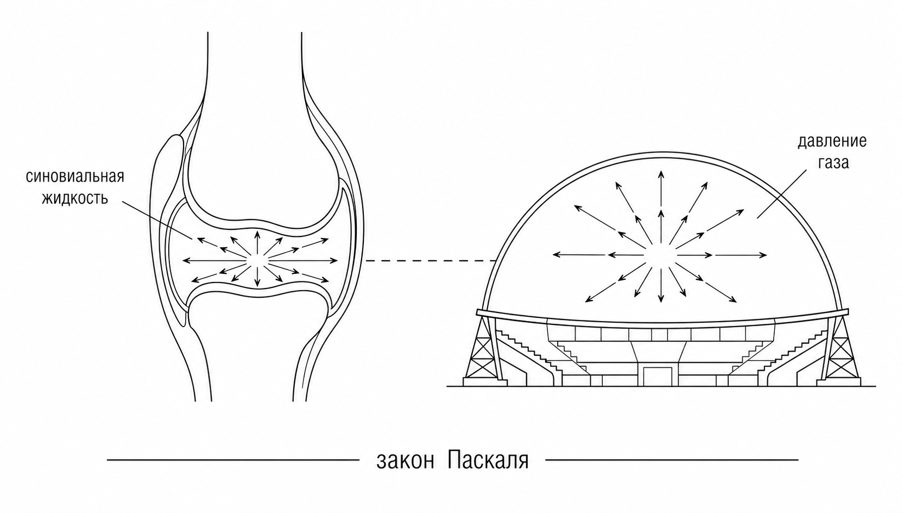
Жидкость, находящаяся в сосуде, давит на его дно и стенки собственным весом. Чтобы найти это давление, рассмотрим сосуд с площадью дна \(S\), заполненный жидкостью плотностью \(\rho\) до высоты \(h\).
Масса жидкости в сосуде: \[ m = \rho V = \rho S h. \]
Вес этого столба жидкости: \[ P = mg = \rho S h g. \]
Вес жидкости действует на дно сосуда, создавая давление: \[ p = \frac{P}{S} = \frac{\rho S h g}{S} = \rho g h. \]
Получаем основную формулу гидростатического давления: \[ p = \rho g h, \] где \(p\) — давление жидкости, Па; \(\rho\) — плотность жидкости, кг/м³; \(g\) — ускорение свободного падения, м/с² (в расчётах для школьного курса принимается \(g = 10\) Н/кг); \(h\) — высота столба жидкости над рассматриваемой точкой, м.
Важнейшее следствие этой формулы: давление жидкости на дно не зависит от площади дна и от формы сосуда, а зависит только от плотности жидкости и высоты столба над данной точкой. Узкая пробирка и широкий бак, заполненные водой до одной и той же высоты, создают на дне одинаковое давление. Этот факт исторически называют гидростатическим парадоксом: интуитивно кажется, что широкий сосуд должен «давить сильнее», поскольку в нём больше воды, — но давление есть сила, делённая на площадь, а не суммарный вес, поэтому итоговое отношение остаётся неизменным.
Согласно закону Паскаля, жидкость передаёт давление во все стороны одинаково. Поэтому на глубине \(h\) давление на боковую стенку сосуда равно тому же самому \(p = \rho g h\), что и давление на дно на этом уровне: жидкость не выбирает направление, куда «давить сильнее» — она давит одинаково на любую площадку, ориентированную как угодно, если эта площадка находится на данной глубине.
Сообщающиеся сосуды — это сосуды, соединённые между собой каналом внизу так, что жидкость может свободно перетекать из одного в другой. Рассмотрим точку соединения на дне такой системы. Если в оба колена налита одна и та же однородная жидкость, то в состоянии равновесия давление, создаваемое столбом жидкости в левом колене на уровне соединения, должно равняться давлению, создаваемому столбом жидкости в правом колене — иначе жидкость продолжила бы перетекать. Отсюда: \[ \rho g h_1 = \rho g h_2 \quad \Rightarrow \quad h_1 = h_2. \]
Основное свойство сообщающихся сосудов: свободные поверхности одной и той же однородной жидкости в сообщающихся сосудах устанавливаются на одной и той же высоте, независимо от формы и площади сечения каждого из колен.
Если в коленах находятся две несмешивающиеся жидкости разной плотности, равенство давлений на уровне границы раздела даёт: \[ \rho_1 g h_1 = \rho_2 g h_2 \quad \Rightarrow \quad \rho_1 h_1 = \rho_2 h_2. \]
Из этого следует важный вывод: чем меньше плотность жидкости, тем выше должен быть её столб, чтобы уравновесить давление более плотной жидкости на общей границе.
Задача 1.
Сосуд заполнен водой до высоты 0,4 м. Плотность воды принять равной 1000 кг/м³, ускорение свободного падения — 10 Н/кг. Нужно найти давление воды на дно сосуда.
| Дано | СИ | Решение |
|---|---|---|
| \(h = 0{,}4\) м | — | \(p = \rho g h\) |
| \(\rho = 1000\) кг/м³ | — | \(p = 1000 \cdot 10 \cdot 0{,}4\) |
| \(g = 10\) Н/кг | — | \(p = 4000\ \text{Па}\) |
| Найти: \(p\) | — | Давление на дно равно 4000 Па |
Физический анализ: полученное значение — типичная величина давления на дне неглубокого бытового сосуда. Обратим внимание, что в решении нигде не использовалась площадь дна или форма сосуда: результат был бы точно таким же и для узкого мерного цилиндра, и для широкого таза, если высота столба воды в них одинакова, — это прямое проявление гидростатического парадокса, разобранного в разделе 1.
Задача 2.
В сообщающихся сосудах находятся две несмешивающиеся жидкости — вода и подсолнечное масло. Жидкости в состоянии равновесия, и на уровне нижней границы масла (границы раздела двух жидкостей) давления, создаваемые обоими столбами, равны. Высота столба масла над этой границей равна 20 см, плотность масла — 900 кг/м³, плотность воды — 1000 кг/м³. Нужно найти высоту столба воды над той же границей.
| Дано | СИ | Решение |
|---|---|---|
| \(h_1 = 20\) см | \(h_1 = 0{,}2\) м | \(\rho_1 g h_1 = \rho_2 g h_2\) |
| \(\rho_1 = 900\) кг/м³ | — | \(h_2 = \dfrac{\rho_1 h_1}{\rho_2}\) |
| \(\rho_2 = 1000\) кг/м³ | — | \(h_2 = \dfrac{900 \cdot 0{,}2}{1000}\) |
| Найти: \(h_2\) | — | \(h_2 = 0{,}18\ \text{м} = 18\ \text{см}\) |
Физический анализ: масло легче воды, поэтому для создания того же давления на границе раздела его столб должен быть выше, чем столб воды, — и действительно, \(h_1 = 20\) см оказался больше \(h_2 = 18\) см. Именно на этом принципе основаны простые лабораторные способы определения плотности неизвестной жидкости через сравнение высот столбов в сообщающихся трубках.
Формула \(p = \rho g h\) — это не абстракция, применимая только к воде в сосуде. Кровь — тоже жидкость с определённой плотностью, и она подчиняется тому же закону, когда движется по сосудам тела. Гидростатическое давление в любой точке кровеносной системы зависит от вертикального расстояния этой точки до уровня сердца: чем ниже точка, тем выше столб крови над ней и тем больше добавочное гидростатическое давление.
Когда артист стоит неподвижно — у станка, в статичной позе кордебалета, удерживая долгую фиксацию, — вены голени и стопы оказываются в самой нижней точке этого «столба». Давление в них складывается из давления, создаваемого работой сердца, и добавочного гидростатического давления веса столба крови от сердца до стопы — точно того же \(\rho g h\), что мы вычисляли для воды в сосуде, только здесь \(h\) — это расстояние по вертикали от сердца до конкретного участка ноги. При активном движении мышцы голени работают как насос, механически проталкивая кровь по венам к сердцу и снижая эту гидростатическую нагрузку; при долгом статичном стоянии этот насос не работает, кровь скапливается в венах нижних конечностей, стенки сосудов растягиваются под непрерывным давлением. Многолетнее повторение такой нагрузки — одна из физических причин, по которым варикозное расширение вен встречается у артистов кордебалета значительно чаще, чем в среднем по популяции: это прямое физическое следствие закона \(p = \rho g h\), а не метафора.
Отсюда простая и физически обоснованная практическая рекомендация: в перерывах между статичными позами полезны небольшие движения стопой и голенью (перекаты с пятки на носок, лёгкие сокращения икроножных мышц) — они включают «мышечный насос» и снижают локальное гидростатическое давление в венах, даже если крупное движение в данный момент невозможно.
Принцип сообщающихся сосудов, в свою очередь, ярче раскрывается не в теле, а в инженерных сооружениях, рассчитанных именно на выравнивание уровней жидкости. Древнеримские акведуки и городские водопроводы работали по этому принципу: вода в разветвлённой системе труб и резервуаров сама устанавливалась на уровне, определяемом высотой источника, независимо от того, насколько причудливо был проложен трубопровод между ними, — форма пути не имела значения, имела значение только разница высот. Тот же принцип лежит в основе водомерных стёкол на паровых котлах и в основе шлюзов: уровень воды в узкой смотровой трубке всегда честно показывает уровень в самом резервуаре, потому что оба сосуда сообщаются и подчиняются одному закону.
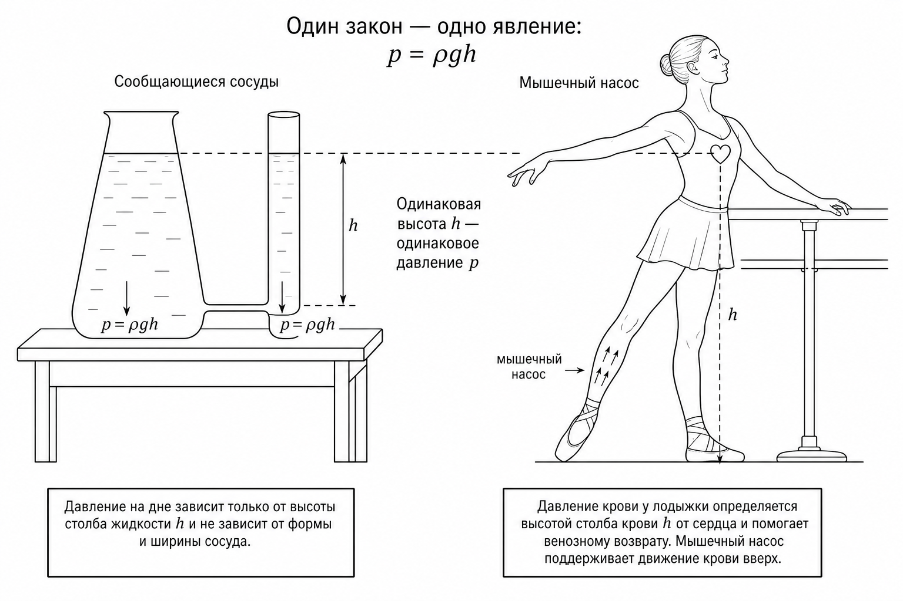
Земля окружена газовой оболочкой — атмосферой. Эта оболочка не рассеивается в космическое пространство по одной причине: молекулы газа притягиваются к Земле силой тяжести. Каждая молекула воздуха находится в непрерывном тепловом движении и одновременно испытывает притяжение к планете. Вблизи поверхности эти два фактора уравновешиваются статистически: чем выше слой атмосферы, тем реже расположены в нём молекулы, тем ниже плотность и давление воздуха. Именно поэтому у атмосферы нет резкой верхней границы — она постепенно «сходит на нет» с высотой.
Воздух, как и любое вещество, состоящее из молекул, обладает массой, а значит, и весом. Это можно доказать экспериментально: если взвесить прочный сосуд с воздухом, затем откачать из него часть воздуха насосом и взвесить снова, показания весов уменьшатся. Плотность воздуха при нормальных условиях (температура 0 °C, нормальное давление) составляет \[ \rho_{возд} \approx 1{,}29\ \text{кг/м}^3. \] Это в тысячу раз меньше плотности воды, но воздух заполняет огромный объём — толща атмосферы над каждым квадратным метром земной поверхности достигает десятков километров, и суммарный вес этого столба весьма значителен.
Атмосферное давление — это давление, которое атмосфера оказывает на все находящиеся в ней тела и на поверхность Земли. Оно обусловлено весом столба воздуха, расположенного над данной площадкой, и по своей физической природе идентично гидростатическому давлению, изученному ранее: давление в газе, как и в жидкости, передаётся во все стороны и на любой глубине определяется весом вещества, расположенного выше.
Первое точное измерение атмосферного давления выполнил в 1643 году итальянский физик Эванджелиста Торричелли. Опыт устроен так: стеклянную трубку длиной около метра, запаянную с одного конца, полностью заполняют ртутью, затыкают открытый конец пальцем, переворачивают и опускают в чашу с ртутью, после чего палец убирают. Часть ртути выливается из трубки в чашу, но не вся: столб ртути в трубке останавливается на высоте приблизительно 760 мм над уровнем ртути в чаше, а в верхней части трубки образуется безвоздушное пространство (торричеллиева пустота).
Почему столб ртути не выливается целиком? Потому что на открытую поверхность ртути в чаше давит атмосфера, а на верхнюю границу столба ртути в трубке над пустотой давление не оказывается (там вакуум). Столб ртути уравновешивается атмосферным давлением: давление воздуха ровно компенсирует вес столба ртути высотой 760 мм. Так измерение веса ртутного столба даёт прямое измерение атмосферного давления через формулу давления столба жидкости: \[ p_0 = \rho_{рт} \cdot g \cdot h, \] где \(\rho_{рт} = 13600\ \text{кг/м}^3\) — плотность ртути, \(g\) — ускорение свободного падения, \(h\) — высота ртутного столба.
Нормальное атмосферное давление принято равным \[ p_0 = 101325\ \text{Па} \approx 1{,}013 \cdot 10^{5}\ \text{Па}, \] что соответствует высоте ртутного столба 760 мм. Отсюда родилась внесистемная, но широко используемая единица измерения давления — миллиметр ртутного столба (мм рт. ст.), а также единица атмосфера (атм), равная нормальному давлению.
Прибор Торричелли — ртутный барометр — точен, но громоздок, ядовит из-за паров ртути и непригоден для переносного использования. Практический прибор — барометр-анероид (от греч. «а-нерос» — «безжидкостный»). Его чувствительный элемент — герметичная гофрированная металлическая коробка, из которой откачана часть воздуха. Стенки коробки упруго прогибаются: при повышении атмосферного давления коробка сжимается сильнее, при понижении — расширяется. Эта небольшая деформация через систему рычажков и пружину передаётся на стрелку, движущуюся по шкале, градуированной в миллиметрах ртутного столба или паскалях. Анероид не содержит жидкости, компактен и удобен, поэтому именно он используется в метеорологии и в бытовых барометрах.
Задача 1. Условие: в опыте, повторяющем классический эксперимент Торричелли, ртуть в перевёрнутой запаянной трубке устанавливается на высоте 760 мм над уровнем ртути в открытой чаше. Плотность ртути принять равной 13600 кг/м³, ускорение свободного падения — 9,8 Н/кг. Нужно вычислить давление атмосферы, уравновешивающее этот столб ртути, и выразить результат в паскалях.
| Дано | СИ | Решение |
|---|---|---|
| \(h = 760\) мм | \(h = 0{,}76\) м | \(p_0 = \rho_{рт} \cdot g \cdot h\) |
| \(\rho_{рт} = 13600\) кг/м\(^3\) | — | \(p_0 = 13600 \cdot 9{,}8 \cdot 0{,}76\) |
| \(g = 9{,}8\) Н/кг | — | \(p_0 \approx 101\,293\ \text{Па}\) |
| Найти: \(p_0\) | — | \(p_0 \approx 1{,}01 \cdot 10^{5}\ \text{Па}\) |
Полученное значение практически совпадает с принятым нормальным атмосферным давлением 101 325 Па. Небольшое расхождение связано с округлением ускорения свободного падения и высоты столба. Физический смысл результата таков: атмосфера над каждым квадратным метром земной поверхности давит с силой около 100 тысяч ньютонов — это вес груза массой более 10 тонн. Тела не раздавливаются этим весом лишь потому, что давление действует со всех сторон одновременно и уравновешивается внутренним давлением самого тела.
Задача 2. Условие: репетиционный зал имеет размеры 10 м в длину, 6 м в ширину и 3 м в высоту. Требуется найти массу воздуха, заполняющего зал, и силу тяжести, действующую на этот воздух, если плотность воздуха принять равной 1,29 кг/м³, а ускорение свободного падения — 9,8 Н/кг.
| Дано | СИ | Решение |
|---|---|---|
| \(a = 10\) м | — | \(V = a \cdot b \cdot c\) |
| \(b = 6\) м | — | \(V = 10 \cdot 6 \cdot 3 = 180\ \text{м}^3\) |
| \(c = 3\) м | — | \(m = \rho_{возд} \cdot V\) |
| \(\rho_{возд} = 1{,}29\) кг/м\(^3\) | — | \(m = 1{,}29 \cdot 180 \approx 232{,}2\ \text{кг}\) |
| \(g = 9{,}8\) Н/кг | — | \(P = m \cdot g\) |
| Найти: \(m\), \(P\) | — | \(P = 232{,}2 \cdot 9{,}8 \approx 2276\ \text{Н}\) |
Масса воздуха в обычном репетиционном зале — около 232 кг, то есть примерно как масса трёх взрослых мужчин. Этот воздух незаметен для взгляда, но физически столь же реален, как вода в бассейне: он обладает весом, давит на стены, потолок и на каждого находящегося в зале человека — просто это давление уравновешено давлением воздуха внутри самого тела, и мы его не ощущаем как нагрузку.
Самая точная физическая параллель к атмосферному давлению — не пейзаж и не архитектура, а собственное дыхание артиста, потому что вдох и выдох — это буквально работа с разностью давлений, а не метафора о ней.
Лёгкие сами по себе не имеют мышц, которые могли бы их «раздувать». Воздух заходит внутрь только потому, что диафрагма опускается, межрёберные мышцы расширяют грудную клетку, объём грудной полости увеличивается — и давление воздуха внутри лёгких становится чуть ниже атмосферного. Разница давлений, обычно составляющая всего несколько сотен паскалей, — это именно то, что «втягивает» воздух внутрь, точно так же, как разница давлений удерживала ртутный столб в трубке Торричелли. Выдох — обратный процесс: объём грудной клетки уменьшается, давление в лёгких превышает атмосферное, и воздух выходит наружу. Танцовщик, певец, драматический актёр управляют не воздухом напрямую, а именно этой разницей давлений: техника опоры дыхания на диафрагму, устойчивый длинный выдох при подъёме или задержке позы, экономный вдох в паузах между связками движений — всё это осознанная работа с физическим механизмом, который здесь описан формулой перепада давления, а не просто «умение дышать глубже».
Показательна и внутренняя механика самого барометра-анероида: тонкостенная гофрированная коробка деформируется под действием разности давлений снаружи и внутри неё, и эта деформация превращается в измеримое механическое движение стрелки. Грудная клетка работает по тому же физическому принципу — как упругая полость, форма которой определяется балансом внешнего атмосферного и внутреннего давления, только вместо стрелки на шкале мы получаем вдох и выдох, объём которых артист учится дозировать сознательно — от короткого форсированного вдоха перед прыжком до длинного контролируемого выдоха, растянутого на всю продолжительность медленной позы.
Стоит отдельно отметить: воздух давит на тело со всех сторон равномерно, и именно поэтому мы не чувствуем «тяжести атмосферы» — в отличие от гидростатического давления крови в венах ног, которое нарастает с высотой столба крови при долгом стоянии и не уравновешено симметрично, о чём подробнее будет сказано при разборе давления жидкостей в кровеносной системе. Атмосферное давление — редкий случай в физике тела, когда огромная сила остаётся полностью незаметной именно благодаря идеальному равновесию давлений снаружи и внутри.
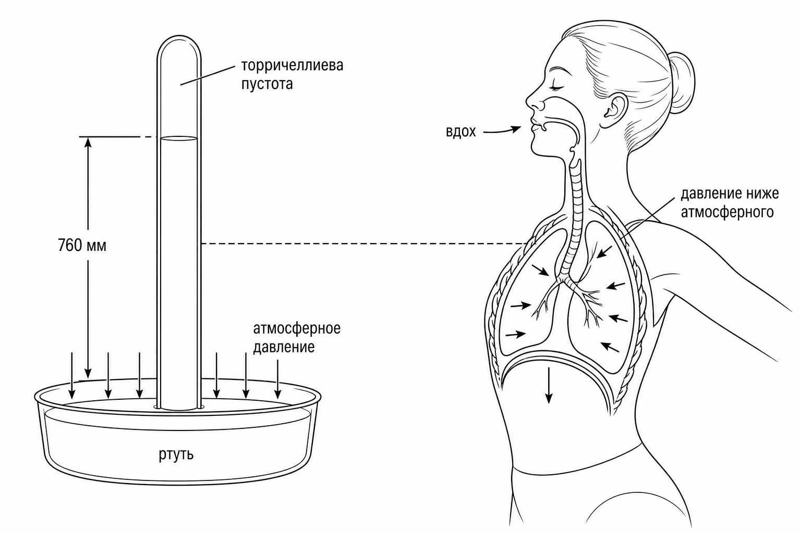
Атмосферное давление создаётся весом столба воздуха над данной точкой земной поверхности. Чем выше точка наблюдения, тем короче столб воздуха над ней и, следовательно, тем меньше его вес и меньше давление.
Однако зависимость давления от высоты устроена сложнее, чем в жидкости. Жидкость практически несжимаема: её плотность \(\rho\) остаётся постоянной на любой глубине, поэтому давление в ней растёт с глубиной строго линейно по формуле \(p = \rho g h\). Воздух — газ, он сжимаем: чем выше, тем меньше на него давит вышележащих слоёв, тем сильнее он расширяется и тем меньше становится его плотность. Поэтому нижние слои атмосферы более плотные и «сжатые», а верхние — более редкие. Из-за этого давление воздуха убывает с высотой не линейно, а быстрее вблизи земной поверхности и медленнее на больших высотах.
Для не очень больших высот (до нескольких километров) в физике используют приближённое эмпирическое правило: при подъёме на каждые 12 м атмосферное давление уменьшается примерно на 1 мм рт. ст. Это правило не является точным физическим законом (оно перестаёт работать на больших высотах), но оно удобно для практических оценок — например, при определении высоты подъёма по показаниям барометра (такой прибор называют барометром-высотомером).
Для измерения давления газов и жидкостей внутри закрытых сосудов используют манометры.
Жидкостный манометр — открытая U-образная трубка, частично заполненная жидкостью (водой или ртутью). Один конец трубки соединён с сосудом, где нужно измерить давление газа, другой открыт в атмосферу. Разность уровней жидкости в двух коленах \(h\) (м) показывает, на сколько давление газа в сосуде \(p\) отличается от атмосферного давления \(p_0\): \[ p = p_0 + \rho g h, \] где \(\rho\) (кг/м³) — плотность жидкости-индикатора, \(g \approx 9{,}8\) м/с² — ускорение свободного падения.
Металлический (трубчатый) манометр применяется там, где нужно измерять большие давления (в котлах, баллонах со сжатым газом, шинах). Его чувствительный элемент — тонкая изогнутая полая трубка. При увеличении давления внутри трубки она стремится разогнуться, это механическое перемещение через систему рычажков передаётся на стрелку прибора. Здесь измеряется не высота столба жидкости, а деформация упругого тела под действием давления — тот же принцип, что лежит в основе закона Гука.
Жидкостный поршневой насос использует именно атмосферное давление как рабочую силу. При подъёме поршня в трубе, опущенной в воду, под поршнем создаётся разрежённое пространство; атмосферное давление, действующее на поверхность воды в источнике, продавливает воду вверх, в область низкого давления. Именно поэтому такой насос называют всасывающим: не насос «тянет» воду, а атмосфера её «толкает». Отсюда следует важное физическое ограничение: высота, на которую всасывающий насос способен поднять воду, не может быть больше высоты водяного столба, вес которого создаёт давление, равное атмосферному (около 10 м для нормального атмосферного давления). Выше этой высоты вода отсутствия давления сверху уже не «дотягивает».
Гидравлический пресс — устройство, использующее закон Паскаля для получения выигрыша в силе. Пресс состоит из двух сообщающихся цилиндров разного сечения, заполненных жидкостью и снабжённых поршнями площадью \(S_1\) (малый) и \(S_2\) (большой). Так как давление, создаваемое силой \(F_1\), приложенной к малому поршню, передаётся жидкостью без изменения во все точки, на большой поршень действует то же давление: \[ p = \frac{F_1}{S_1} = \frac{F_2}{S_2} \quad \Rightarrow \quad F_2 = F_1 \cdot \frac{S_2}{S_1}. \] Так как площадь круглого поршня \(S = \pi r^2\), выигрыш в силе равен отношению квадратов радиусов (или диаметров) поршней. При этом «бесплатной» силы не бывает: по закону сохранения энергии малый поршень должен пройти больший путь \(h_1\), чем большой поршень путь \(h_2\), причём \[ F_1 h_1 = F_2 h_2. \] Во сколько раз пресс усиливает силу, во столько же раз меньше перемещение большого поршня по сравнению с малым.
Задача 1. Группа альпинистов поднимается в горы. У подножия горы атмосферное давление равно 760 мм рт. ст. Считая, что на каждые 12 м подъёма давление уменьшается примерно на 1 мм рт. ст., определить приблизительное атмосферное давление на высоте 3600 м над подножием горы.
| Дано | СИ | Решение |
|---|---|---|
| \(p_0 = 760\) мм рт. ст. | — | \(\Delta p = \dfrac{h}{12}\) мм рт. ст. |
| \(h = 3600\) м | — | \(\Delta p = \dfrac{3600}{12} = 300\) мм рт. ст. |
| Найти: \(p\) | — | \(p = p_0 - \Delta p = 760 - 300 = 460\) мм рт. ст. |
На высоте 3600 м атмосферное давление составляет приблизительно 460 мм рт. ст. — почти на 40% меньше, чем у подножия. Это правдоподобный результат для среднегорья: именно поэтому на такой высоте ощущается нехватка кислорода — не потому, что состав воздуха изменился, а потому, что при меньшем давлении в каждом литре воздуха содержится меньше молекул, в том числе молекул кислорода.
Задача 2. Гидравлический домкрат имеет малый поршень диаметром 2 см и большой поршень диаметром 20 см. На малый поршень действует сила 200 Н. Определить силу, которую развивает большой поршень.
| Дано | СИ | Решение |
|---|---|---|
| \(d_1 = 2\) см | \(d_1 = 0{,}02\) м | \(S_1 = \dfrac{\pi d_1^2}{4}\), \(S_2 = \dfrac{\pi d_2^2}{4}\) |
| \(d_2 = 20\) см | \(d_2 = 0{,}20\) м | \(\dfrac{S_2}{S_1} = \left(\dfrac{d_2}{d_1}\right)^2 = \left(\dfrac{0{,}20}{0{,}02}\right)^2 = 100\) |
| \(F_1 = 200\) Н | — | \(F_2 = F_1 \cdot \dfrac{S_2}{S_1} = 200 \cdot 100 = 20000\) Н |
| Найти: \(F_2\) | — | \(F_2 = 20000\) Н |
Сила в 20 000 Н (эквивалентно весу груза около 2 тонн) — вполне реалистичный результат для гидравлического домкрата, который поднимает автомобиль усилием одного человека. Но за этот выигрыш в силе приходится платить: большой поршень поднимется на расстояние в 100 раз меньшее, чем опустится малый, — прокачать домкрат до нужной высоты приходится множеством коротких качков рычага.
Перепад атмосферного давления — это не только вопрос высоты гор. Он напрямую касается собственного тела артиста и его вестибулярного аппарата. Среднее ухо — воздушная полость, отделённая от внешней среды барабанной перепонкой; давление воздуха в этой полости должно быть равно внешнему давлению, иначе перепонка деформируется и создаёт ощущение заложенности или боли. Быстрый спуск в лифте высокого театра, взлёт самолёта на гастролях или резкая смена высоты сцены (оркестровая яма, подъёмные платформы) заставляет барабанную перепонку компенсировать разницу давлений через евстахиеву трубу — тот же самый физический механизм выравнивания давления, что описывает закон Паскаля, только в масштабе нескольких кубических сантиметров воздуха. Поскольку рядом с барабанной перепонкой расположен вестибулярный аппарат, отвечающий за чувство равновесия, резкие перепады давления временно мешают именно тому механизму, на который танцовщик опирается при пируэтах и турах — ощущению вертикали и баланса.
Гидравлический пресс — не абстрактная механическая схема из учебника, а рабочий принцип многих театральных машин. Подъёмно-опускные платформы сцены, гидравлические лифты декораций, механизмы наклона планшета в современных театрах устроены именно так: небольшое усилие насоса, приложенное к малому цилиндру, через рабочую жидкость превращается в огромную силу, поднимающую тонны декораций и целые фрагменты сцены. Актёр или танцовщик, стоящий на такой платформе, физически находится «на большом поршне» гидравлического пресса — и вся плавность, с которой поднимается площадка, определяется тем, насколько равномерно давление передаётся по всему объёму рабочей жидкости.
Наконец, стоит помнить и о более скрытой физиологии высоты: при гастролях в высокогорных городах (Мехико, Ла-Пас, Кито) состав воздуха остаётся тем же, но из-за пониженного общего давления парциальное давление кислорода в лёгких падает. Организм получает меньше кислорода при том же объёме вдоха, сердце и дыхательная система работают с повышенной нагрузкой, а выносливость временно снижается — это прямое физическое следствие закона убывания атмосферного давления с высотой, а не «недостаток тренированности».
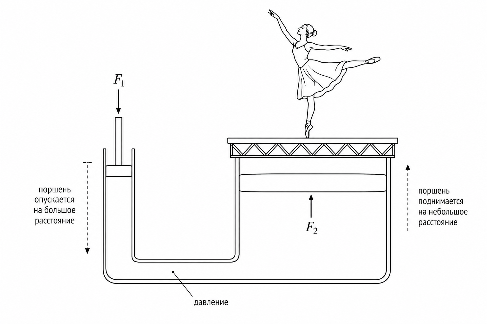
В предыдущих параграфах было установлено, что жидкость и газ давят на погружённое в них тело со всех сторон, причём давление на разных глубинах различно: чем глубже, тем оно больше (\(p = \rho g h\)). Из этого различия давлений на верхнюю и нижнюю поверхности погружённого тела следует существование особой силы — выталкивающей, или архимедовой силы.
Рассмотрим тело в форме куба с площадью грани \(S\) и высотой \(a\), полностью погружённое в жидкость плотностью \(\rho_{ж}\). Верхняя грань куба находится на глубине \(h_1\), нижняя — на глубине \(h_2 = h_1 + a\).
Давление жидкости на верхнюю грань: \[ p_1 = \rho_{ж} g h_1, \] давление на нижнюю грань: \[ p_2 = \rho_{ж} g h_2 = \rho_{ж} g (h_1 + a). \]
Сила давления жидкости на верхнюю грань направлена вниз и равна \(F_1 = p_1 S\); сила давления на нижнюю грань направлена вверх и равна \(F_2 = p_2 S\). Так как \(h_2 > h_1\), то \(F_2 > F_1\), а силы давления на боковые грани куба взаимно уравновешиваются в силу симметрии. Результирующая сила направлена вверх и равна разности: \[ F_A = F_2 - F_1 = \rho_{ж} g (h_2 - h_1) S = \rho_{ж} g a S. \]
Произведение \(aS\) — это объём тела \(V\). Следовательно: \[ F_A = \rho_{ж} g V. \]
Это и есть закон Архимеда: на тело, погружённое в жидкость или газ, действует выталкивающая сила, направленная вертикально вверх и равная весу жидкости (газа), вытесненной этим телом.
В общем виде: \[ F_A = \rho_{ж} g V_{погр}, \] где \(\rho_{ж}\) — плотность жидкости или газа (кг/м³), \(g\) — ускорение свободного падения (Н/кг или м/с²), \(V_{погр}\) — объём погружённой части тела (м³), \(F_A\) — архимедова сила (Н).
Важные уточнения:
Задача 1.
Стальной шар объёмом 200 см³ полностью погружён в воду. Плотность воды принять равной 1000 кг/м³, ускорение свободного падения — 9,8 Н/кг. Требуется найти архимедову силу, действующую на шар.
| Дано | СИ | Решение |
|---|---|---|
| \(V = 200\) см³ | \(V = 2 \cdot 10^{-4}\) м³ | \(F_A = \rho_{ж} g V\) |
| \(\rho_{ж} = 1000\) кг/м³ | — | \(F_A = 1000 \cdot 9{,}8 \cdot 2\cdot10^{-4}\) |
| \(g = 9{,}8\) Н/кг | — | \(F_A = 1{,}96\ \text{Н}\) |
| Найти: \(F_A\) | — | Архимедова сила равна 1,96 Н |
Физический смысл: полученное значение — это вес воды, которую вытеснил бы шар, если бы её объём равнялся объёму шара. Заметим, что вес самого стального шара во много раз больше (сталь значительно плотнее воды), поэтому шар не всплывёт, а погрузится на дно, — но сама выталкивающая сила при этом всё равно действует и частично компенсирует вес.
Задача 2.
Тело подвешено к динамометру. В воздухе динамометр показывает 5 Н. При полном погружении этого же тела в воду, не касаясь дна и стенок сосуда, показания динамометра уменьшаются до 3 Н. Плотность воды принять равной 1000 кг/м³, ускорение свободного падения — 9,8 Н/кг. Требуется найти архимедову силу, действующую на тело, и объём тела.
| Дано | СИ | Решение |
|---|---|---|
| \(P = 5\) Н | — | \(F_A = P - P_1\) |
| \(P_1 = 3\) Н | — | \(F_A = 5 - 3 = 2\ \text{Н}\) |
| \(\rho_{ж} = 1000\) кг/м³ | — | \(V = \dfrac{F_A}{\rho_{ж} g}\) |
| \(g = 9{,}8\) Н/кг | — | \(V = \dfrac{2}{1000 \cdot 9{,}8} \approx 2{,}04\cdot10^{-4}\ \text{м}^3\) |
| Найти: \(F_A\), \(V\) | — | \(F_A = 2\) Н, \(V \approx 204\ \text{см}^3\) |
Физический смысл: разность показаний динамометра в воздухе и в воде — это прямой способ измерить архимедову силу без каких-либо предположений о форме тела. Именно на этом принципе основана лабораторная работа по измерению выталкивающей силы: динамометр «взвешивает» не всё тело, а только ту часть его веса, что не скомпенсирована выталкивающей силой жидкости.
Закон Архимеда — редкий случай, когда для артиста балета физика раскрывается не через метафору, а через прямое телесное переживание: занятия в реабилитационном бассейне.
Когда тело погружено в воду по грудь, архимедова сила, действующая на него, приближается по величине к весу самого тела (плотность человеческого тела, около 950–1050 кг/м³, близка к плотности воды). Это означает, что значительная часть веса компенсируется выталкивающей силой — и сила реакции опоры, с которой стопа давит на дно бассейна, резко уменьшается. Именно поэтому упражнения в воде — стандартная часть восстановления танцовщиков после травм связок и перегрузки суставов: хрящ и связки испытывают меньшую компрессию, а мышцы при этом продолжают работать против сопротивления воды, сохраняя тонус. Это не метафора — это тот же закон Архимеда, применённый напрямую к человеческому телу, и он логически продолжает разговор о синовиальной жидкости и распределении давления в суставе, начатый в главе о давлении.
Есть и второй, более тонкий эффект, важный для пловцов и для понимания собственного тела. Плотность разных тканей неодинакова: жировая ткань легче воды (примерно 900–920 кг/м³), а мышечная и костная — тяжелее (1050–1100 кг/м³). Поэтому у человека с развитой, малой по объёму жира мускулатурой средняя плотность тела оказывается ближе к плотности воды или даже выше — такому человеку труднее держаться на поверхности, ноги «тонут» активнее, чем у человека с более высоким процентом жира при том же весе. Дело не в силе и не в тренированности — дело исключительно в соотношении объёма и плотности, то есть в том самом \(V_{погр}\) в формуле архимедовой силы. Это стоит знать и учитывать, если в программу подготовки входит плавание или аквафитнес: ощущение «тяжести в воде» у спортивного тела — не признак слабости, а прямое следствие физики.
Наконец, стоит отдельно отметить: точка приложения архимедовой силы — центр объёма погружённой части тела — у человека, как правило, смещена относительно центра тяжести, потому что грудная клетка с лёгкими, наполненными воздухом, менее плотная, чем таз и ноги. Именно поэтому расслабленное тело в воде без усилия принимает горизонтальное положение с приподнятой верхней частью и опущенными ногами — это не случайность и не потеря контроля, а результат того, что выталкивающая сила и сила тяжести приложены в разных точках и создают вращающий эффект, разворачивающий тело в устойчивое положение.
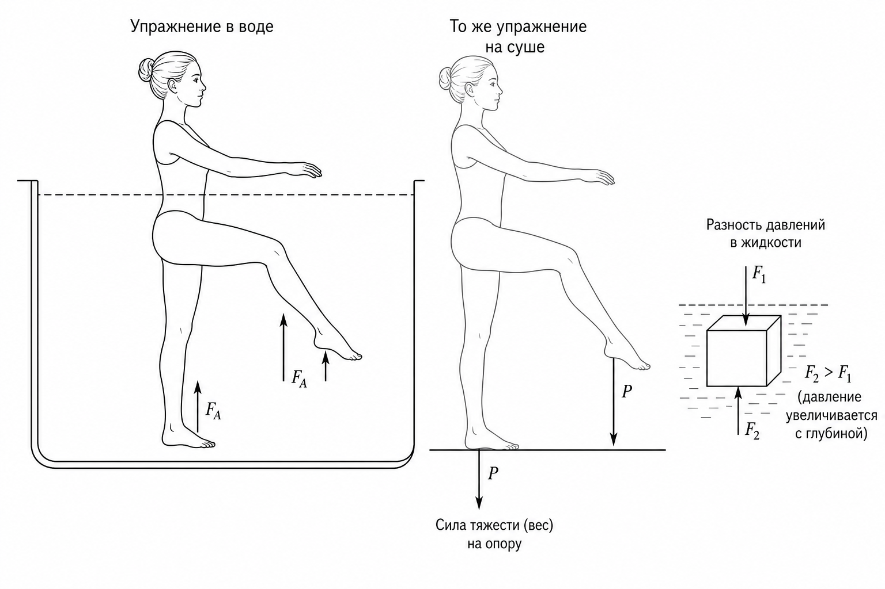
Погружённое в жидкость или газ тело находится под действием двух сил, направленных навстречу друг другу: силы тяжести \(F_{тяж}=mg\), направленной вниз, и архимедовой (выталкивающей) силы \(F_A=\rho_{ж}gV_{погр}\), направленной вверх, где \(\rho_{ж}\) — плотность жидкости (или газа) в кг/м³, а \(V_{погр}\) — объём погружённой части тела в м³.
Соотношение этих двух сил определяет поведение тела в жидкости — так называемое условие плавания тела:
Если тело полностью погружено (\(V_{погр}=V\), где \(V\) — полный объём тела), то \(F_{тяж}=\rho_{т}gV\), а \(F_A=\rho_{ж}gV\), и сравнение сил сводится к сравнению плотностей:
\[ \rho_{т} > \rho_{ж} \;\Rightarrow\; \text{тело тонет};\qquad \rho_{т} = \rho_{ж} \;\Rightarrow\; \text{плавает в толще жидкости};\qquad \rho_{т} < \rho_{ж} \;\Rightarrow\; \text{тело всплывает.} \]
Если тело всплыло и покоится на поверхности, оно погружается лишь частично — ровно настолько, чтобы вес вытесненной жидкости уравновесил его вес. Из равенства \(\rho_{ж}gV_{погр}=\rho_{т}gV\) получаем долю погружённого объёма:
\[ \frac{V_{погр}}{V}=\frac{\rho_{т}}{\rho_{ж}}. \]
Этот же принцип объясняет плавание судов. Судно строится из материала (стали, дерева, композита), плотность которого сама по себе может быть больше или меньше плотности воды, но корпус судна не сплошной: внутри него — воздух, топливо, груз, пустые отсеки. Средняя плотность судна (масса всей конструкции, делённая на полный объём корпуса) оказывается меньше плотности воды — именно поэтому многотонное стальное судно держится на воде.
Массу воды, вытесненной подводной частью судна в положении равновесия, называют водоизмещением. В равновесии водоизмещение по массе равно массе самого судна (с грузом, экипажем, топливом). Линия на борту, до которой судно погружается в воду в полностью загруженном состоянии, называется ватерлинией. Максимально допустимая масса груза, которую можно принять без превышения расчётной осадки, называется грузоподъёмностью судна.
Тот же закон действует не только в жидкости, но и в газе — на этом основано воздухоплавание. Оболочка аэростата, наполненная газом легче воздуха (водородом, гелием или просто нагретым воздухом), вытесняет объём атмосферного воздуха \(V\) и испытывает архимедову силу
\[ F_A=\rho_{возд}\,g\,V, \]
где \(\rho_{возд}\) — плотность окружающего воздуха. Этой силе противостоит суммарная сила тяжести оболочки, газа внутри неё и полезного груза:
\[ F_{тяж}=(m_{об}+m_{газа}+m_{груза})\,g. \]
Аэростат поднимается, если \(F_A>F_{тяж}\), то есть если средняя плотность всей конструкции с грузом меньше плотности воздуха. Понизить эту среднюю плотность можно, наполнив оболочку более легким газом или увеличив её объём, — именно так регулируют подъёмную силу воздушных шаров и дирижаблей.
Задача 1.
Кусок сухой пробки объёмом 200 см³ и плотностью 200 кг/м³ бросили в воду, плотность которой равна 1000 кг/м³. Требуется найти, какой объём пробки окажется погружённым в воду, когда она займёт равновесное положение на поверхности.
| Дано | СИ | Решение |
|---|---|---|
| \(V = 200\) см³ | \(V = 2\cdot10^{-4}\) м³ | \(\rho_{ж} g V_{погр} = \rho_{т} g V\) |
| \(\rho_{т} = 200\) кг/м³ | — | \(V_{погр} = \dfrac{\rho_{т}}{\rho_{ж}} V\) |
| \(\rho_{ж} = 1000\) кг/м³ | — | \(V_{погр} = \dfrac{200}{1000}\cdot 2\cdot10^{-4} = 4\cdot10^{-5}\ \text{м}^3\) |
| Найти: \(V_{погр}\) | — | \(V_{погр} = 40\ \text{см}^3\) |
Погружена лишь пятая часть объёма пробки — остальные четыре пятых остаются над поверхностью. Это в точности соответствует житейскому наблюдению: пробка почти целиком выступает из воды, потому что её плотность в пять раз меньше плотности воды.
Задача 2.
Оболочка аэростата объёмом 500 м³ наполнена водородом, плотность которого равна 0,09 кг/м³. Масса самой оболочки (без газа и груза) составляет 100 кг. Плотность окружающего воздуха равна 1,29 кг/м³. Требуется определить наибольшую массу груза — пассажиров, приборов, балласта, — при которой аэростат ещё способен подняться в воздух.
| Дано | СИ | Решение |
|---|---|---|
| \(V = 500\) м³ | — | \(F_A = \rho_{возд} g V\) |
| \(\rho_{возд} = 1{,}29\) кг/м³ | — | \(F_{тяж} = (m_{об}+\rho_{г}V+m_{груза})g\) |
| \(\rho_{г} = 0{,}09\) кг/м³ | — | Граничное условие: \(F_A = F_{тяж}\) |
| \(m_{об} = 100\) кг | — | \(m_{груза} = V(\rho_{возд}-\rho_{г}) - m_{об}\) |
| Найти: \(m_{груза\ max}\) | — | \(m_{груза} = 500\cdot(1{,}29-0{,}09) - 100 = 500\ \text{кг}\) |
Пятьсот килограммов — это предельный груз, при котором подъёмная сила ещё в точности равна силе тяжести. Стоит заметить, что ускорение свободного падения \(g\) в это уравнение вообще не входит в конечном виде — оно сокращается с обеих сторон равенства, потому что и вес, и архимедова сила зависят от \(g\) одинаково. Подъёмная сила определяется исключительно разностью плотностей воздуха и наполняющего газа и объёмом оболочки.
Условие плавания тела — это не абстракция физического кабинета, а рабочий инструмент реабилитационной медицины, применяемый именно там, где тело артиста восстанавливается после травмы.
Когда танцовщик стоит по грудь в воде гидротерапевтического бассейна, его вес частично компенсируется архимедовой силой, действующей на объём погружённой части тела. Сила тяжести на суставы, позвоночник, стопы при этом реально уменьшается — не потому что «вода расслабляет», а потому что часть механической нагрузки, которую в обычных условиях несут кости, хрящи и связки, теперь несёт выталкивающая сила воды. Именно поэтому упражнения на баланс, приседания, отработку положения стопы после травмы голеностопа или коленного сустава часто начинают в воде: суставная поверхность и синовиальная жидкость получают возможность работать при значительно меньшем осевом давлении, сохраняя при этом двигательный паттерн и активность мышц-стабилизаторов.
Здесь же обнаруживается прямая параллель между телом пловца и воздушным шаром. Средняя плотность человеческого тела складывается из плотностей разных тканей: жировая ткань легче воды (её плотность ниже плотности жидкости, вытесняемой телом), мышечная и костная — плотнее. Но у любого тела есть один орган, способный менять общий объём почти без изменения массы, — это лёгкие. Глубокий вдох увеличивает объём грудной клетки, а вместе с ним и объём вытесняемой воды, при том что масса тела остаётся практически неизменной. Средняя плотность тела снижается — ровно тот же приём, которым наполненная лёгким газом оболочка аэростата снижает свою среднюю плотность относительно окружающего воздуха. Именно поэтому вдох, а не мышечное усилие, — главный физический инструмент удержания на поверхности воды.
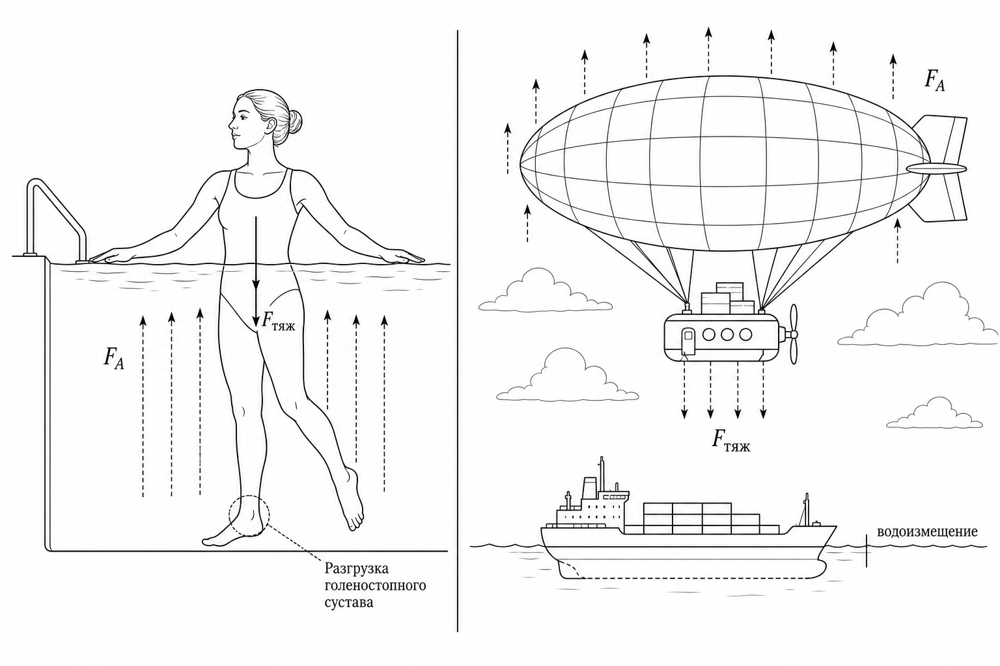
Механическая работа — физическая величина, характеризующая процесс превращения энергии при действии силы на тело, перемещающееся под её действием.
Работа совершается только тогда, когда одновременно выполняются два условия: на тело действует сила, и тело при этом перемещается. Если сила действует, но перемещения нет (например, человек упирается в неподвижную стену), механическая работа равна нулю — сколько бы усилий он ни прилагал.
Если сила \(F\) направлена под углом \(\alpha\) к направлению перемещения \(s\), совершённая работа вычисляется по формуле:
\[ A = F \cdot s \cdot \cos\alpha \]
где \(A\) — работа (Дж), \(F\) — модуль силы (Н), \(s\) — модуль перемещения (м), \(\alpha\) — угол между направлением силы и направлением перемещения.
Из этой формулы следуют три важных частных случая:
Единица механической работы в СИ — джоуль (Дж):
\[ 1\ \text{Дж} = 1\ \text{Н} \cdot 1\ \text{м} \]
Один джоуль — это работа, которую совершает сила в 1 Н, перемещая тело на 1 м в направлении своего действия.
Работа сама по себе не говорит о том, быстро или медленно она была совершена. Чтобы описать скорость выполнения работы, вводится величина мощности.
Мощность — физическая величина, равная работе, совершённой за единицу времени:
\[ N = \frac{A}{t} \]
где \(N\) — мощность (Вт), \(A\) — совершённая работа (Дж), \(t\) — время, за которое эта работа совершена (с).
Единица мощности в СИ — ватт (Вт):
\[ 1\ \text{Вт} = \frac{1\ \text{Дж}}{1\ \text{с}} \]
Один ватт — это мощность, при которой за одну секунду совершается работа в один джоуль.
Если тело движется равномерно и сила направлена вдоль перемещения, мощность можно выразить через силу и скорость. Поскольку \(A = F \cdot s\), а \(s = v \cdot t\), получаем:
\[ N = F \cdot v \]
Эта формула физически означает: мощность — это произведение силы на скорость, с которой сила «успевает» перемещать тело. При одной и той же силе большая скорость движения даёт большую мощность.
Задача 1. Строительный кран равномерно поднимает груз массой 200 кг на высоту 15 м. Сопротивлением воздуха и трением в механизме крана пренебречь. Ускорение свободного падения принять равным 10 Н/кг. Найти работу, совершённую краном при подъёме груза.
| Дано | СИ | Решение |
|---|---|---|
| \(m = 200\) кг | — | При равномерном подъёме сила натяжения троса уравновешивает силу тяжести: \(F = mg\) |
| \(h = 15\) м | — | \(F = 200 \cdot 10 = 2000\ \text{Н}\) |
| \(g = 10\) Н/кг | — | Сила направлена вдоль перемещения, поэтому \(A = F \cdot h\) |
| Найти: \(A\) | — | \(A = 2000 \cdot 15 = 30\,000\ \text{Дж} = 30\ \text{кДж}\) |
Совершённая работа равна 30 кДж. Обратите внимание: в решении не участвует время подъёма — работа определяется только силой и пройденным расстоянием. Груз можно было поднять за 5 секунд или за 5 минут — при равномерном движении работа останется одной и той же. А вот мощность крана в этих двух случаях будет отличаться в 60 раз — к этому мы вернёмся в следующем разделе.
Задача 2. Электровоз тянет состав с постоянной силой тяги 15000 Н по прямому горизонтальному участку пути. Двигаясь равномерно, состав проходит 1800 м за 2 минуты. Найти работу силы тяги и мощность, развиваемую электровозом на этом участке.
| Дано | СИ | Решение |
|---|---|---|
| \(F = 15\,000\) Н | — | Сила тяги направлена вдоль движения, \(\cos\alpha = 1\), значит \(A = F \cdot s\) |
| \(s = 1800\) м | — | \(A = 15\,000 \cdot 1800 = 27\,000\,000\ \text{Дж} = 27\ \text{МДж}\) |
| \(t = 2\) мин | \(t = 120\) с | \(N = \dfrac{A}{t} = \dfrac{27\,000\,000}{120} = 225\,000\ \text{Вт} = 225\ \text{кВт}\) |
| Найти: \(A\), \(N\) | — | Проверка через скорость: \(v = s/t = 15\ \text{м/с}\), \(N = F \cdot v = 15\,000 \cdot 15 = 225\,000\ \text{Вт}\) — результат совпадает |
Оба способа расчёта мощности дали одинаковый результат — 225 кВт, что подтверждает согласованность формул \(N = A/t\) и \(N = F \cdot v\). Полученное значение вполне реалистично: мощность современных электровозов измеряется сотнями киловатт и даже мегаваттами.
Разница между работой и мощностью — это разница между «сколько» и «как быстро», и лучше всего эту разницу проясняет не образ, а сравнение двух реальных механических действий человеческого тела, совершающих одинаковую работу за совершенно разное время.
Рассмотрим отталкивание тела от пола в вертикальном прыжке. Мышцы ног — прежде всего икроножная, камбаловидная, четырёхглавая — за время контакта стопы с полом (обычно 0,15–0,25 с) сообщают телу такую скорость, что центр масс поднимается на определённую высоту \(h\). Работа, совершённая мышцами против силы тяжести при подъёме тела массой \(m\) на высоту \(h\), выражается той же формулой, что и работа крана в первой задаче:
\[ A = m g h \]
Это не метафора — это буквально то же физическое уравнение, применённое к другому телу. Разница обнаруживается не в работе, а в мощности. Если та же работа совершается за 0,2 с, а не за 15 секунд, как у крана, мощность возрастает в десятки раз при равной работе — именно поэтому мышцы ног в момент отталкивания способны кратковременно развивать мощность, сопоставимую с мощностью электроинструмента, хотя в спокойном состоянии та же мышца совершает скромную работу за секунду.
Отсюда следует важный практический вывод для тренировки прыжка: высота прыжка определяется не силой мышц как таковой и не одной лишь их работоспособностью, а именно мощностью — способностью отдать нужную работу за минимальное время. Два человека с одинаковой максимальной силой мышц могут прыгать на разную высоту, если один способен реализовать эту силу за 0,15 с, а другой — только за 0,3 с: работа против силы тяжести при одинаковой высоте прыжка одна и та же, но время её совершения — разное, и именно оно определяет требуемую мощность.
Контрастный пример для того же различия — плавный подъём на полупальцы (releve). Центр масс тела поднимается здесь на существенно меньшую высоту, чем в прыжке, но даже если бы высота была той же, подъём длился бы секунды, а не доли секунды. Работа мышц против веса тела в обоих случаях считается одной и той же формулой \(A = mgh\), но ощущение усилия и физиологическая нагрузка совершенно разные — потому что разная мощность требует разного режима работы мышечных волокон: быстрых, гликолитических — для взрывного усилия, и медленных, окислительных, выносливых — для протяжённого усилия при той же суммарной работе.
Самоэксперимент в студии: выполните подряд медленный подъём на полупальцы и лёгкий прыжок на месте с той же высотой подъёма центра масс. Обратите внимание не на усталость (она накапливается за счёт многократных повторений), а на характер ощущения усилия в голеностопе и стопе в момент самого движения — в прыжке это резкий, короткий импульс, в releve — растянутое, равномерное напряжение. Это и есть телесное ощущение разницы между одинаковой работой и разной мощностью.
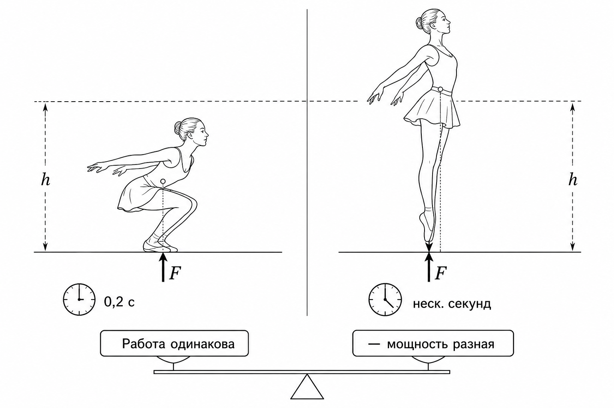
Рычаг — простой механизм, представляющий собой твёрдое тело, способное вращаться вокруг неподвижной оси, закреплённой в одной точке — точке опоры. Все силы, приложенные к рычагу, стремятся повернуть его вокруг этой оси в ту или другую сторону.
Ключевая величина, определяющая действие силы на вращающееся тело, — не сама сила, а её момент. Чтобы ввести момент силы, сначала нужно строго определить понятие плеча.
Плечо силы \(l\) — кратчайшее расстояние от оси вращения до линии действия силы, то есть длина перпендикуляра, опущенного из точки опоры на прямую, вдоль которой направлена сила. Единица измерения плеча в СИ — метр (м).
Важно понимать: плечо — это не расстояние от оси до точки приложения силы, а именно расстояние до линии, вдоль которой сила действует. Если сила направлена перпендикулярно рычагу (как в большинстве школьных задач), плечо совпадает с расстоянием от оси до точки приложения силы. Если сила направлена под углом — плечо будет короче этого расстояния.
Момент силы \(M\) — физическая величина, равная произведению модуля силы на её плечо: \[ M = F \cdot l \] Единица измерения момента силы в СИ — ньютон-метр (Н·м).
Момент силы характеризует вращательное действие силы: чем больше сила и чем дальше от оси она приложена, тем больше её способность повернуть тело. Именно момент, а не сама сила, определяет, победит ли одна сторона рычага другую.
Моменты сил, вращающих рычаг в противоположные стороны, принято считать имеющими разный знак: условно момент силы, вращающей рычаг по часовой стрелке, берут со знаком «плюс», против часовой стрелки — со знаком «минус» (выбор знаков — вопрос условности, важно лишь противоположное направление вращения).
Условие равновесия рычага (правило моментов): рычаг находится в равновесии, если сумма моментов сил, вращающих его по часовой стрелке, равна сумме моментов сил, вращающих его против часовой стрелки. Для рычага с двумя силами, приложенными по разные стороны от оси, это записывается так: \[ F_1 \cdot l_1 = F_2 \cdot l_2 \] где \(F_1\), \(F_2\) — силы, действующие на рычаг (Н), а \(l_1\), \(l_2\) — их плечи (м).
Из этого правила следует важное практическое следствие: чем короче плечо приложения силы, тем большую силу нужно приложить, чтобы удержать равновесие с большей силой на длинном плече, — и наоборот. Рычаг не создаёт энергию из ничего: он позволяет выигрывать в силе за счёт проигрыша в расстоянии (или наоборот), что мы подробно разберём в следующем параграфе. Здесь же наша задача — научиться точно находить плечо и момент и грамотно применять правило равновесия.
Задача 1.
Рычаг находится в равновесии под действием двух сил, приложенных перпендикулярно к нему по разные стороны от оси вращения. Первая сила равна 12 Н и приложена на расстоянии 50 см от оси. Определите, на каком расстоянии от оси вращения должна быть приложена вторая сила величиной 8 Н, чтобы рычаг оставался в равновесии.
| Дано | СИ | Решение |
|---|---|---|
| \(F_1 = 12\) Н | — | Условие равновесия: \(F_1 \cdot l_1 = F_2 \cdot l_2\) |
| \(l_1 = 50\) см | \(l_1 = 0{,}5\) м | Отсюда \(l_2 = \dfrac{F_1 \cdot l_1}{F_2}\) |
| \(F_2 = 8\) Н | — | \(l_2 = \dfrac{12 \cdot 0{,}5}{8} = 0{,}75\) м |
| Найти: \(l_2\) | — | Плечо второй силы равно 0,75 м |
Физический смысл ответа очевиден и проверяем: сила меньше — значит, чтобы момент остался тем же, плечо должно быть больше. Вторая сила слабее первой в полтора раза (\(12/8 = 1{,}5\)), поэтому и плечо у неё должно быть в полтора раза больше (\(0{,}75/0{,}5 = 1{,}5\)). Правило моментов работает как весы: выигрыш в расстоянии компенсирует проигрыш в силе.
Задача 2.
На рычаг действует сила 25 Н, направленная перпендикулярно рычагу и приложенная на расстоянии 0,6 м от оси вращения. Определите момент этой силы относительно оси вращения.
| Дано | СИ | Решение |
|---|---|---|
| \(F = 25\) Н | — | \(M = F \cdot l\) |
| \(l = 0{,}6\) м | — | \(M = 25 \cdot 0{,}6 = 15\) Н·м |
| Найти: \(M\) | — | Момент силы равен 15 Н·м |
Обратите внимание: единица момента силы — ньютон-метр — сама по себе указывает на физический смысл величины: это произведение силы (Н) на расстояние (м), а не какая-то новая самостоятельная субстанция. Момент нельзя «пощупать» отдельно от силы и плеча — он всегда их совместный продукт.
Самая точная и самая нагруженная физическим смыслом иллюстрация рычага для артиста балета — это не абстрактный образ, а его собственная стопа в положении releve — подъёме на полупальцы или пуанты.
Рассмотрим эту ситуацию как рычаг. Ось вращения (точка опоры) — линия плюснефаланговых суставов, то есть та часть стопы, что касается пола в момент подъёма. Груз — вес тела, который действует вниз через голеностопный сустав, расположенный между опорой и пяткой. Сила, поднимающая тело, — тяга икроножной и камбаловидной мышц, передающаяся через ахиллово сухожилие, прикреплённое к пяточной кости, то есть позади голеностопного сустава. Груз находится между точкой опоры и точкой приложения силы — это классический рычаг второго рода.
Здесь и раскрывается физическая суть: плечо силы мышцы (расстояние от плюснефаланговых суставов до пяточной кости) больше плеча груза (расстояние от тех же суставов до голеностопного сустава). Согласно правилу моментов, \(F_{\text{мышцы}} \cdot l_{\text{мышцы}} = F_{\text{груза}} \cdot l_{\text{груза}}\), а значит выигрыш в плече означает, что мышца может развивать меньшую силу, чем вес тела, — рычаг работает в её пользу.
Но у этого выигрыша есть строгая физическая цена, и её обязан понимать каждый танцовщик: чем короче стопа относительно длины пяточного выступа, чем менее выгодно соотношение плеч, тем большую силу должна развить трёхглавая мышца голени через ахиллово сухожилие, чтобы удержать тот же момент. Именно поэтому неправильное распределение веса — смещение вперёд, недостаточная работа продольного свода стопы, «проваливание» через большой палец вместо равномерной опоры на всю линию плюснефаланговых суставов — увеличивает эффективное плечо груза и заставляет ахиллово сухожилие и подошвенную фасцию работать с моментом, для которого они не рассчитаны. Хроническая перегрузка именно этого рычага — одна из наиболее частых физических причин тендинопатии ахиллова сухожилия и подошвенного фасциита у артистов балета.
Практический вывод из физики момента прост и телесно ощутим: выравнивание веса точно над серединой опорной площадки стопы в releve — это не эстетическое требование педагога, а способ минимизировать плечо груза относительно оси вращения и тем самым снизить момент, который должна компенсировать икроножная мышца через сухожилие.
Тот же принцип — компромисс между плечом силы и плечом груза — управляет и техническими рычагами вокруг нас: коромысло аптечных весов уравновешивает эталонную гирю и груз именно потому, что оба момента, вычисленные относительно центральной оси, равны; длинная ручка дверного замка или гаечного ключа даёт нам выигрыш в силе по той же самой причине, по которой длинное плечо мышцы облегчает работу стопы. Физика не различает, где приложен момент — к дверной ручке, к коромыслу весов или к пяточной кости: закон один.
Самоэксперимент. Встаньте у опоры и медленно поднимитесь на полупальцы, сознательно перемещая вес тела то к пальцам, то к середине стопы, то к внешнему краю. Почувствуйте, как меняется нагрузка на голень и ахиллово сухожилие в каждом положении — это и есть телесное ощущение изменения плеча груза относительно оси вращения рычага.
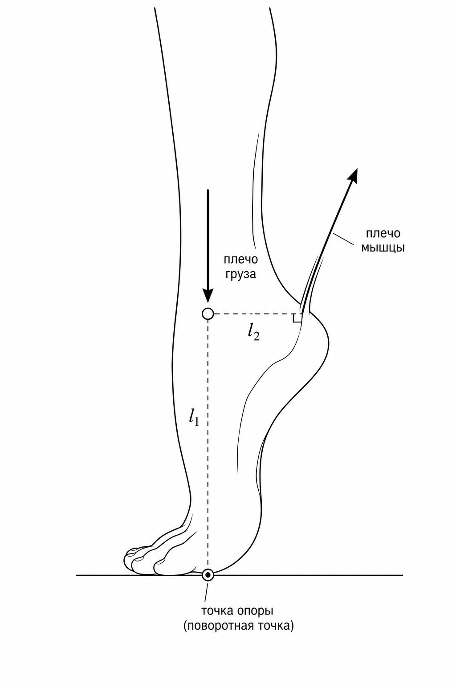
В предыдущем параграфе рычаг был разобран как отдельное устройство: точка опоры, плечи сил, момент силы. Но рычаг — лишь один представитель большого семейства простых механизмов: устройств, которые изменяют величину или направление действующей силы, облегчая выполнение механической работы. К простым механизмам относятся рычаг, блок, наклонная плоскость, клин, винт и ворот. Все они подчиняются одному и тому же общему закону, который выводится ниже.
Блок — это колесо с желобом по окружности, закреплённое в обойме, через которое перекинута верёвка, трос или цепь. По способу крепления блоки делятся на два вида.
Неподвижный блок — блок, ось которого закреплена неподвижно (например, прикреплена к балке или стене) и не перемещается вместе с грузом. По сути это рычаг с равными плечами: оба плеча равны радиусу блока. Равные плечи означают равные силы, поэтому неподвижный блок не даёт выигрыша в силе: \[ F = P, \] где \(F\) — сила, приложенная к свободному концу верёвки (Н), \(P\) — сила тяжести груза (Н). Единственная, но практически важная функция неподвижного блока — изменение направления силы: тянуть верёвку вниз удобнее, чем поднимать груз напрямую вверх.
Подвижный блок — блок, ось которого перемещается вместе с грузом, подвешенным непосредственно к этой оси. Здесь точкой опоры служит участок верёвки, касающийся блока с одной стороны, а плечо силы тяжести груза в два раза короче плеча приложенной силы. Такой рычаг даёт выигрыш в силе в два раза (без учёта трения и массы самого блока): \[ F = \dfrac{P}{2}. \]
Сочетание подвижных и неподвижных блоков образует полиспаст — систему, дающую значительно больший выигрыш в силе, применяемую в строительных кранах, лебёдках, талях.
Аналогичным простым механизмом является наклонная плоскость: поднимая груз не вертикально, а вдоль наклонной поверхности длиной \(l\) на высоту \(h\), можно обойтись меньшей силой \(F\), приложенной вдоль плоскости, чем силой тяжести \(P\) груза. В идеальном случае (без трения): \[ F \cdot l = P \cdot h. \]
Возникает естественный вопрос: если подвижный блок или наклонная плоскость позволяют поднять груз меньшей силой — не получаем ли мы «бесплатную» работу? Ответ даёт фундаментальный принцип, известный со времён античной механики.
«Золотое правило» механики: ни один механизм не даёт выигрыша в работе. Во сколько раз механизм даёт выигрыш в силе, во столько же раз он даёт проигрыш в перемещении (пути), и наоборот. Это прямое следствие закона сохранения энергии: работа, совершённая приложенной силой на её пути, в идеальном случае равна работе, которая была бы затрачена на перемещение груза без механизма: \[ F_1 \cdot s_1 = F_2 \cdot s_2, \qquad \frac{F_1}{F_2} = \frac{s_2}{s_1}. \]
Так, подвижный блок, уменьшая силу вдвое, требует вдвое больше пути: чтобы поднять груз на высоту \(h\), конец верёвки нужно вытянуть на \(2h\). Наклонная плоскость, уменьшая силу в \(l/h\) раз, во столько же раз увеличивает путь, который проходит точка приложения силы.
В реальности часть работы неизбежно затрачивается на преодоление трения в осях блоков, изгиб и растяжение верёвок, перемещение самих подвижных частей механизма. Поэтому вводится различие между:
Отношение этих величин называется коэффициентом полезного действия механизма (КПД): \[ \eta = \frac{A_{\text{полезн}}}{A_{\text{затр}}} \cdot 100\%. \]
КПД — безразмерная величина, выражаемая в процентах. Для любого реального механизма \(\eta < 100\%\): часть подведённой энергии всегда рассеивается в виде тепла из-за трения. Значение \(\eta = 100\%\) — теоретический предел, недостижимый идеал, к которому конструкторы стремятся, но которого не достигают.
Простые механизмы пронизывают технику и быт: рычаг лежит в основе ножниц, кусачек, весов, вёсел, педалей; блок и полиспаст — в основе подъёмных кранов, лифтов, талей; клин — в основе топора и иглы; винт — в основе домкрата и шурупа; ворот — в основе колодезного барабана и штурвала. Все они решают одну и ту же задачу: изменить соотношение силы и пути так, чтобы работа осталась прежней, а выполнить её человеку стало легче.
Задача 1. Рабочий с помощью подвижного блока поднимает груз массой 40 кг на высоту 3 м. При этом он тянет верёвку с силой 220 Н и вытягивает её на 6 м. Считая \(g = 10\) Н/кг, определите полезную и затраченную работу, а также КПД этой подъёмной системы.
| Дано | СИ | Решение |
|---|---|---|
| \(m = 40\) кг | — | \(A_{\text{полезн}} = mgh\) |
| \(h = 3\) м | — | \(A_{\text{полезн}} = 40 \cdot 10 \cdot 3 = 1200\) Дж |
| \(F = 220\) Н | — | \(A_{\text{затр}} = F \cdot l\) |
| \(l = 6\) м | — | \(A_{\text{затр}} = 220 \cdot 6 = 1320\) Дж |
| \(g = 10\) Н/кг | — | \(\eta = \dfrac{A_{\text{полезн}}}{A_{\text{затр}}} \cdot 100\%\) |
| Найти: \(A_{\text{полезн}}\), \(A_{\text{затр}}\), \(\eta\) | — | \(\eta = \dfrac{1200}{1320} \cdot 100\% \approx 90{,}9\%\) |
Полученное значение КПД реалистично: подвижный блок — механизм с относительно небольшими потерями, и значения 85–95% характерны для качественно смазанной системы. Заметьте: путь верёвки (6 м) ровно в два раза больше высоты подъёма груза (3 м) — это прямое проявление «золотого правила» механики: выигрыш в силе (\(P/F = 400/220 \approx 1{,}8\), близко к теоретическим 2) сопровождается почти таким же проигрышем в перемещении.
Задача 2. Груз массой 20 кг поднимают по наклонной плоскости длиной 5 м на высоту 1 м, прилагая вдоль плоскости силу 50 Н. Считая \(g = 10\) Н/кг, найдите КПД наклонной плоскости.
| Дано | СИ | Решение |
|---|---|---|
| \(m = 20\) кг | — | \(A_{\text{полезн}} = mgh\) |
| \(h = 1\) м | — | \(A_{\text{полезн}} = 20 \cdot 10 \cdot 1 = 200\) Дж |
| \(l = 5\) м | — | \(A_{\text{затр}} = F \cdot l\) |
| \(F = 50\) Н | — | \(A_{\text{затр}} = 50 \cdot 5 = 250\) Дж |
| \(g = 10\) Н/кг | — | \(\eta = \dfrac{200}{250} \cdot 100\% = 80\%\) |
| Найти: \(\eta\) | — | КПД наклонной плоскости равен 80% |
КПД 80% — типичное значение для наклонной плоскости с ощутимым трением скольжения: часть работы (в данном случае 50 Дж, то есть 20% от затраченной) переходит в тепло на поверхности контакта груза с плоскостью. Именно эту закономерность вы будете проверять экспериментально в лабораторной работе с наклонной плоскостью и динамометром.
«Золотое правило» механики — не техническая деталь, а прямое проявление закона сохранения энергии, и поэтому его действие можно увидеть везде, где сила обменивается на перемещение, а не только в подъёмных кранах.
Обратимся сначала к биофизике человеческого тела. Мышца, сокращаясь, действует на кость через сухожилие как силовой рычаг: в большинстве суставов человека плечо силы мышцы значительно короче плеча внешней нагрузки (веса тела, сопротивления пола). Это означает, что мышца обычно работает с проигрышем в силе, но зато с огромным выигрышем в скорости и амплитуде движения конца конечности — стопы, кисти. Небольшое сокращение икроножной мышцы на несколько миллиметров превращается в размашистое движение стопы на десятки сантиметров. Это тот же обмен «сила–путь», только направленный в противоположную сторону от подъёмного крана: тело жертвует силой ради стремительности и амплитуды броска, прыжка, взлёта. Важно и другое: мышца, в отличие от идеального рычага, никогда не работает с КПД, близким к 100%. Значительная часть энергии биохимических реакций внутри мышечного волокна переходит не в механическую работу, а в тепло — именно поэтому интенсивная работа мышц разогревает тело. Реальный КПД скелетной мышцы в спортивной физиологии оценивается величиной порядка 20–25%: даже самое тренированное тело подчиняется тому же принципу неизбежных потерь, что и скрипящий блок подъёмного крана.
Второй домен, где механизм блоков и рычагов работает буквально, без всякой метафоры, — театральная машинерия. Подъём тяжёлых декораций, смена задников, полёты актёров на тросах над сценой — всё это исторически устроено на системах блоков и полиспастов, размещённых над сценической коробкой (той самой, что называется «сценический карман» и «трюм»). Театральный машинист, работающий с ручным штурвальным приводом, десятилетиями решал ту же задачу, что и наш рабочий из задачи 1: выигрывая в силе, необходимо принять проигрыш в длине выбираемого канатa и во времени подъёма. Электрический привод современных театров облегчил физический труд, но не отменил само правило — оно останется в силе, пока существует закон сохранения энергии.
Телесный вывод для собственной практики: почувствовать в своём теле «золотое правило» механики легче всего на примере плие или подъёма на полупальцы. Медленное, глубокое сгибание в голеностопном и коленном суставах — это большое перемещение при относительно скромном усилии мышц-разгибателей; резкий, короткий импульс при отталкивании от пола в прыжке — противоположный случай, где для быстрого, мощного действия требуется значительное усилие на коротком пути. Осознанная работа с этим соотношением — не абстрактная механика, а практический инструмент экономии сил и снижения нагрузки на сустав.
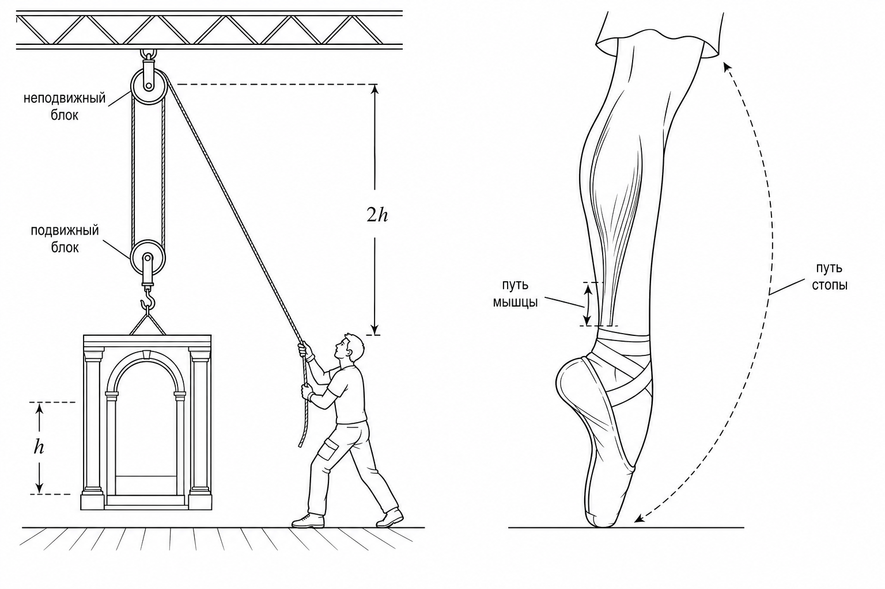
Любое тело состоит из множества частиц, каждая из которых притягивается Землёй и имеет свой собственный вес. Сумма всех этих сил тяжести, приложенных к отдельным частицам тела, всегда может быть заменена одной равнодействующей силой — силой тяжести всего тела, приложенной в одной определённой точке.
Центр тяжести тела — точка, через которую проходит линия действия силы тяжести тела при любом его положении в пространстве.
Для однородных тел правильной геометрической формы центр тяжести находится геометрическим способом: - у однородного стержня и прямоугольной пластины — в точке пересечения диагоналей (в геометрическом центре); - у однородного шара — в его центре; - у треугольной пластины — в точке пересечения медиан.
Если тело состоит из нескольких частей (или система состоит из нескольких грузов, закреплённых на общей основе), положение центра тяжести системы находят как взвешенное среднее положений центров тяжести частей, причём «весами» служат массы этих частей:
\[ x_{ц} = \frac{m_1 x_1 + m_2 x_2 + \ldots + m_n x_n}{m_1 + m_2 + \ldots + m_n} \]
где \(x_1, x_2, \ldots\) — координаты (в метрах, м) центров тяжести отдельных частей относительно выбранного начала отсчёта, а \(m_1, m_2, \ldots\) — их массы (в килограммах, кг).
Тело находится в равновесии, если оно не приобретает ни линейного, ни углового ускорения. Для твёрдого тела это означает выполнение двух условий равновесия одновременно:
\[ \sum_{i} \vec{F_i} = 0 \]
— векторная сумма всех сил, действующих на тело, равна нулю (тело не начинает двигаться поступательно);
\[ \sum_{i} M_i = 0 \]
— сумма моментов всех сил относительно любой оси равна нулю (тело не начинает вращаться). Понятие момента силы \(M = F \cdot d\) введено в предыдущем параграфе при рассмотрении рычага; условия равновесия рычага — это частный случай общих условий равновесия твёрдого тела.
Для тела, стоящего на опоре под действием одной силы тяжести и силы реакции опоры, есть удобный практический признак равновесия: тело сохраняет равновесие, если вертикальная линия, проведённая через центр тяжести, пересекает площадь опоры — область, ограниченную точками касания тела с опорой (или контур, соединяющий эти точки, если опора не сплошная, а состоит из нескольких точек, как ножки стула). Если эта линия выходит за пределы площади опоры, момент силы тяжести относительно края опоры перестаёт уравновешиваться, и тело начинает поворачиваться — опрокидывается.
Различают три вида равновесия тела, опирающегося на неподвижную ось или на площадь опоры:
Устойчивость равновесия тела на опоре тем выше, чем ниже расположен центр тяжести и чем шире площадь опоры.
Задача 1.
Лёгкий (невесомый) стержень длиной 1 м несёт на одном конце груз массой 2 кг, а на другом конце — груз массой 3 кг. Нужно определить положение центра тяжести этой системы, отсчитывая расстояние от конца стержня, где закреплён груз массой 2 кг.
| Дано | СИ | Решение |
|---|---|---|
| \(m_1 = 2\) кг | — | \(x_{ц} = \dfrac{m_1 \cdot 0 + m_2 \cdot L}{m_1 + m_2}\) |
| \(m_2 = 3\) кг | — | \(x_{ц} = \dfrac{2 \cdot 0 + 3 \cdot 1}{2+3} = \dfrac{3}{5} = 0{,}6\ \text{м}\) |
| \(L = 1\) м | — | |
| Найти: \(x_{ц}\) | — | Центр тяжести находится на 0,6 м от груза 2 кг |
Проверим физический смысл результата: центр тяжести должен быть смещён в сторону более тяжёлого груза — так и получилось: он находится ближе к концу с массой 3 кг (на расстоянии \(1 - 0{,}6 = 0{,}4\) м от него), чем к концу с массой 2 кг. Это подтверждает правильность решения.
Задача 2.
Шкаф массой 40 кг стоит на полу; ширина его основания (в направлении, в котором шкаф может опрокинуться) равна 0,6 м, а собственный центр тяжести шкафа расположен точно над центром основания. На верхнюю полку шкафа поставили груз массой 10 кг, сместив его от центральной вертикальной оси шкафа на 0,3 м в сторону передней стенки. Нужно определить, останется ли центр тяжести системы «шкаф + груз» в пределах площади опоры, то есть не опрокинется ли шкаф.
| Дано | СИ | Решение |
|---|---|---|
| \(M = 40\) кг | — | \(x_{ц} = \dfrac{M \cdot 0 + m \cdot s}{M + m}\) |
| \(m = 10\) кг | — | \(x_{ц} = \dfrac{40 \cdot 0 + 10 \cdot 0{,}3}{40+10} = \dfrac{3}{50} = 0{,}06\ \text{м}\) |
| \(d = 0{,}6\) м | — | Половина ширины основания: \(\dfrac{d}{2} = 0{,}3\ \text{м}\) |
| \(s = 0{,}3\) м | — | Сравнение: \(0{,}06\ \text{м} < 0{,}3\ \text{м}\) |
| Найти: сместится ли \(x_{ц}\) за пределы основания | — | Центр тяжести системы остаётся внутри площади опоры — шкаф не опрокинется |
Смысл расчёта таков: даже смещённый груз почти не сдвинул общий центр тяжести системы, потому что масса самого шкафа (40 кг) значительно больше массы груза (10 кг) — «взвешенное среднее» тянется в сторону большей массы. Если бы груз оказался значительно тяжелее шкафа или был бы смещён ближе к самому краю полки, результат мог быть иным — и это стоит проверить самостоятельно, изменив числа.
В балетном классе слово «апломб» означает не просто «уверенность» — это точное физическое состояние: вертикаль, проведённая через центр тяжести тела танцовщика, проходит через площадь опоры — стопу или узкую площадку пуанта. Именно поэтому подготовка позы перед турном или балансом в аттитюде — это не эстетическая формальность, а буквальная работа по совмещению проекции центра тяжести с крошечной площадью опоры. Чем меньше площадь опоры (полупальцы, пуант), тем более точной должна быть выверка — тело работает на грани устойчивого и неустойчивого равновесия, и именно поэтому баланс на пальцах требует постоянной микрокоррекции мышцами голеностопа, а не статичного «замирания». Это прямое физическое следствие того, что было сформулировано в разделе 1: узкая опора резко снижает устойчивость.
Медицинская сторона этой же физики — важна и вне сцены. Когда центр тяжести тела выходит за пределы площади опоры быстрее, чем нервно-мышечная система успевает среагировать компенсирующим движением, происходит потеря равновесия. Именно так чаще всего случается подворачивание голеностопного сустава: стопа теряет контакт с полом по всей площади, опора сужается до одного края, и вертикаль центра тяжести оказывается за её пределами — сустав вынужден «догонять» тело резким, неконтролируемым движением. Тренировка проприоцепции (чувства положения тела в пространстве) — это, по сути, тренировка способности как можно быстрее почувствовать, что вертикаль центра тяжести смещается к краю опоры, и успеть скорректировать положение стопы или таза до того, как равновесие будет потеряно.
Та же самая математика взвешенного среднего, которую мы использовали в задаче про шкаф, лежит в основе устойчивости настоящих архитектурных сооружений. Пизанская башня не падает не потому, что она не наклонена, а потому, что даже при заметном наклоне вертикаль, проведённая через общий центр тяжести всей конструкции, всё ещё пересекает площадь её фундамента. Как только — из-за дальнейшего оседания грунта — эта вертикаль вышла бы за пределы основания, момент силы тяжести относительно края фундамента стал бы опрокидывающим, и башня рухнула бы за секунды, независимо от прочности её камня. Устойчивость здания и устойчивость позы дансёра описываются буквально одним и тем же неравенством.
Скульпторы, работающие с бронзой, решают ту же задачу инженерным, а не танцевальным способом. Конная статуя, изображающая вставшую на дыбы лошадь, визуально держится на двух тонких задних ногах — зрителю кажется, что перед ним торжество равновесия «на пределе». В действительности скульптор почти всегда либо смещает реальный центр тяжести отливки вниз и назад с помощью скрытого утяжелённого основания или дополнительной опоры (хвост, подставка), либо делает фигуру частично полой именно там, где нужно снизить вес верхней части. Видимый образ равновесия и физическое равновесие конструкции здесь разделены сознательно: искусство создаёт иллюзию неустойчивости именно потому, что настоящая физическая устойчивость надёжно скрыта внутри материала.
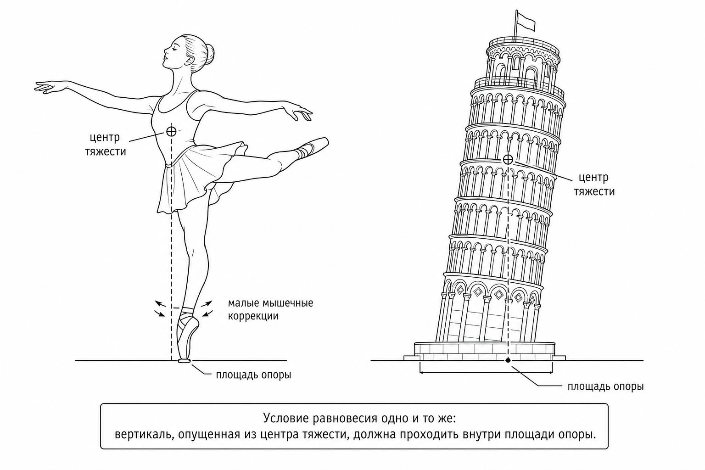
Во всех предыдущих параграфах мы говорили о работе — о том, как сила, действуя на пути, изменяет движение тела. Но откуда берётся способность совершать эту работу? Для описания этой способности в физике вводится величина энергия.
Энергия — физическая величина, характеризующая способность тела (или системы тел) совершать работу. Единица измерения энергии в СИ та же, что и у работы, — джоуль (Дж), поскольку энергия и работа связаны напрямую: изменение энергии тела равно совершённой над ним (или им) работе.
Механическая энергия существует в двух формах.
Кинетическая энергия — энергия, которой обладает тело вследствие своего движения:
\[ E_k = \frac{mv^2}{2}, \]
где \(m\) — масса тела (кг), \(v\) — его скорость (м/с). Чем быстрее движется тело и чем больше его масса, тем больше энергии в нём заключено — и тем больше работы оно способно совершить при остановке (пробить, сдвинуть, деформировать препятствие).
Потенциальная энергия — энергия, определяемая не движением, а взаимным расположением тел или частей одного тела, между которыми действуют силы. В школьном курсе рассматриваются два важных случая.
Потенциальная энергия тела, поднятого над поверхностью Земли (энергия взаимодействия с силой тяжести):
\[ E_p = mgh, \]
где \(g\) — ускорение свободного падения (м/с²), \(h\) — высота тела (м) над уровнем, условно принятым за нулевой.
Потенциальная энергия упруго деформированного тела (например, растянутой или сжатой пружины жёсткостью \(k\), деформированной на величину \(x\)):
\[ E_{p} = \frac{kx^2}{2}. \]
Сумма кинетической и потенциальной энергий тела называется его полной механической энергией:
\[ E = E_k + E_p. \]
Закон сохранения механической энергии: если на тело действуют только силы тяжести и упругости (силы трения и сопротивления отсутствуют), то полная механическая энергия тела остаётся постоянной. Она не исчезает и не возникает из ничего — она лишь переходит из одной формы в другую: поднятое тело обменивает потенциальную энергию на кинетическую при падении, сжатая пружина отдаёт свою энергию телу, которое она толкает.
Если в системе присутствует трение или сопротивление воздуха, часть механической энергии переходит не в другую механическую форму, а во внутреннюю энергию — тела и окружающая среда слегка нагреваются. Механическая энергия в этом случае не сохраняется, но полная энергия — с учётом выделившегося тепла — сохраняется всегда. Это одно из самых фундаментальных утверждений физики: энергия не создаётся и не исчезает, она только превращается из одного вида в другой.
Задача 1.
Тело массой 4 кг движется со скоростью 2 м/с. Нужно определить его кинетическую энергию.
| Дано | СИ | Решение |
|---|---|---|
| \(m = 4\) кг | — | \(E_k = \dfrac{mv^2}{2}\) |
| \(v = 2\) м/с | — | \(E_k = \dfrac{4 \cdot 2^2}{2} = \dfrac{16}{2} = 8\ \text{Дж}\) |
| Найти: \(E_k\) | — | Кинетическая энергия тела равна 8 Дж |
Полученное значение — величина вполне житейского порядка: столько работы способно совершить тело массой в несколько килограммов при обычной ходьбе. Обратим внимание на структуру формулы: энергия растёт пропорционально квадрату скорости. Это означает, что увеличение скорости вдвое увеличивает кинетическую энергию не вдвое, а в четыре раза — обстоятельство, которое нам понадобится в разделе аналогий, когда речь пойдёт о нагрузке при приземлении.
Задача 2.
Тело массой 0,5 кг падает без начальной скорости с высоты 4 м. Сопротивлением воздуха можно пренебречь. Нужно определить скорость тела в момент падения на землю, используя закон сохранения механической энергии.
| Дано | СИ | Решение |
|---|---|---|
| \(m = 0{,}5\) кг | — | В начальный момент вся энергия тела — потенциальная: \(E_p = mgh\) |
| \(h = 4\) м | — | В момент падения вся энергия перешла в кинетическую: \(E_k = \dfrac{mv^2}{2}\) |
| \(g = 10\) м/с² | — | По закону сохранения энергии \(mgh = \dfrac{mv^2}{2}\) |
| Найти: \(v\) | — | Отсюда \(v = \sqrt{2gh} = \sqrt{2 \cdot 10 \cdot 4} = \sqrt{80} \approx 8{,}9\ \text{м/с}\) |
Заметим, что масса тела в конечном уравнении сократилась: скорость падения не зависит от массы тела (при отсутствии сопротивления воздуха) — падают одинаково и лёгкое, и тяжёлое тело с одной высоты. Это важный качественный вывод, к которому мы ещё вернёмся в разделе о биомеханике: при отсутствии сопротивления воздуха тело любого веса, упавшее с одной и той же высоты, коснётся земли с одной и той же скоростью — а значит, будет обладать разной кинетической энергией именно за счёт массы, а не скорости.
Закон сохранения и превращения энергии яснее всего раскрывается там, где движение циклично: энергия непрерывно перетекает из одной формы в другую и обратно. Два таких примера — из совершенно разных областей — показывают одну и ту же физику с разных сторон.
Прыжок как энергетический цикл тела. Возьмём обычный прыжок с глубоким приседанием перед взлётом (plié перед прыжком). В нижней точке приседания мышцы и сухожилия ног растянуты и напряжены — в них накоплена упругая потенциальная энергия, совершенно аналогичная энергии сжатой пружины \(E_p = kx^2/2\). При резком разгибании ног эта энергия переходит в кинетическую энергию тела, устремлённого вверх, а кинетическая энергия в верхней точке взлёта, в свою очередь, полностью превращается в потенциальную энергию \(E_p = mgh\) — высшую точку прыжка тело достигает именно тогда, когда его скорость (а значит, и кинетическая энергия) равна нулю. Дальше цикл идёт в обратном порядке: потенциальная энергия высоты снова становится кинетической энергией падения.
Здесь физика напрямую касается безопасности тела. При приземлении вся накопленная кинетическая энергия должна куда-то уйти — она переходит в работу мышц, сухожилий и суставов, которые её гасят. Ключевой вопрос: за какое расстояние (глубину амортизации) эта работа совершается? Работа торможения равна \(A = F \cdot d\), и для одной и той же энергии удара чем меньше путь гашения \(d\) — тем больше сила \(F\), действующая на суставы. Приземление на прямые, «жёсткие» ноги резко сокращает путь амортизации — и та же самая энергия падения гасится почти мгновенно, создавая многократно бо́льшую пиковую нагрузку на колени и позвоночник, чем мягкое, глубокое приседание при приземлении. Это не вопрос эстетики движения — это прямое физическое следствие закона сохранения энергии и её перехода в работу деформации тканей.
Маятник как модель обмена энергией без движения тела. Чтобы увидеть тот же закон вне тела, обратимся к простому маятнику — например, тяжёлому грузу на длинной нити, раскачивающемуся в такт метроному, или к любому качающемуся телу с закреплённой точкой опоры. В крайних точках размаха груз останавливается — вся его энергия в этот момент потенциальная. В нижней точке траектории скорость максимальна — вся энергия кинетическая. Между этими точками энергия непрерывно перетекает из одной формы в другую, а полная механическая энергия (без учёта трения в подвесе и сопротивления воздуха) остаётся неизменной. Если понаблюдать за реальным маятником достаточно долго, видно, что размах медленно уменьшается: часть энергии на каждом цикле рассеивается в тепло за счёт трения в оси подвеса и сопротивления воздуха. Это тот же самый механизм, который заставляет затухать колеблющуюся струну музыкального инструмента или гаснуть звук колокола — колебательная энергия постепенно и неотвратимо переходит в тепловую.
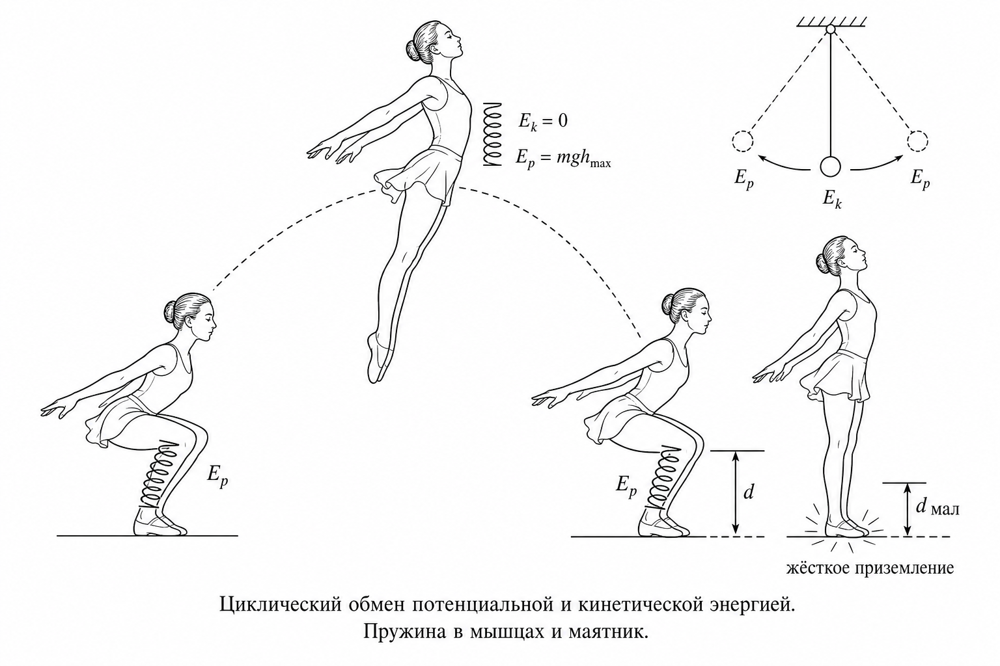
Цель работы: научиться измерять массу тела с помощью рычажных весов, измерять объём тела правильной и неправильной формы с помощью мерного цилиндра методом вытеснения жидкости и вычислять на основе этих измерений плотность вещества.
Масса тела — физическая величина, характеризующая его инертность (см. §7); единица массы в СИ — килограмм (кг). В лабораторной практике удобнее пользоваться граммами (1 г = 0,001 кг).
Рычажные весы — прибор для измерения массы, действие которого основано на равновесии рычага: если плечи весов равны, весы уравновешены тогда и только тогда, когда масса тела на одной чаше равна суммарной массе разновесов на другой. Строгое обоснование этого условия будет дано в §22 при изучении момента силы; здесь оно используется как практический инструмент.
Правила взвешивания: - тело кладут на левую чашу весов, разновесы подбирают на правую; - подбор начинают с самого крупного разновеса, затем переходят к более мелким; - масса тела равна сумме масс всех разновесов, уравновесивших чаши; - погрешность измерения массы принимается равной половине массы наименьшего разновеса из набора.
Объём тела — физическая величина, характеризующая протяжённость тела в пространстве; единица объёма в СИ — кубический метр (м³). В лаборатории удобнее пользоваться миллилитрами и кубическими сантиметрами: \(1\ \text{мл} = 1\ \text{см}^3 = 10^{-6}\ \text{м}^3\).
Мерный цилиндр (мензурка) — сосуд с нанесённой шкалой для измерения объёма жидкости. Отсчёт уровня жидкости производится по нижнему краю мениска, при этом глаз наблюдателя должен находиться на уровне метки — иначе возникает ошибка параллакса.
Объём тела правильной геометрической формы может быть вычислен по формуле соответствующей фигуры (куб, цилиндр, параллелепипед) либо измерен методом вытеснения жидкости — так же, как и объём тела произвольной формы.
Объём тела неправильной формы определяют методом вытеснения: тело на нити полностью погружают в жидкость, налитую в мерный цилиндр, не касаясь дна и стенок сосуда. Объём тела равен объёму вытесненной жидкости: \[ V = V_2 - V_1, \] где \(V_1\) — начальный уровень жидкости в цилиндре, \(V_2\) — уровень жидкости после погружения тела.
Плотность вещества — физическая величина, равная отношению массы тела к его объёму: \[ \rho = \frac{m}{V}, \] где \(m\) — масса тела (кг), \(V\) — объём тела (м³), \(\rho\) — плотность (кг/м³). Плотность — характеристика вещества, а не конкретного тела: она не зависит от формы и размера образца, только от того, из чего он сделан (см. §8).
Порядок выполнения работы: 1. Определить цену деления шкалы весов, набора разновесов и мерного цилиндра; оценить погрешность каждого прибора. 2. Взвесить исследуемое тело на рычажных весах, записать массу \(m\). 3. Налить в мерный цилиндр воду, зафиксировать начальный уровень \(V_1\). 4. Полностью погрузить тело в воду на нити, зафиксировать новый уровень \(V_2\). 5. Вычислить объём тела: \(V = V_2 - V_1\). 6. Вычислить плотность вещества по формуле \(\rho = m/V\), перевести результат в СИ. 7. Сравнить полученное значение с табличными данными плотности известных веществ и сделать вывод о материале, из которого изготовлено тело.
Задача 1. При взвешивании на рычажных весах металлического цилиндра для уравновешивания потребовались разновесы общей массой 108 граммов. Цилиндр погрузили в мерный цилиндр с водой: до погружения уровень воды был на отметке 50 миллилитров, после полного погружения тела — на отметке 90 миллилитров. Нужно определить плотность вещества, из которого изготовлен цилиндр, и указать, какой это может быть металл, если плотность алюминия равна 2700 кг/м³, а плотность стали — 7800 кг/м³.
| Дано | СИ | Решение |
|---|---|---|
| \(m = 108\) г | \(m = 0{,}108\) кг | \(V = V_2 - V_1\) |
| \(V_1 = 50\) мл | \(V_1 = 50 \cdot 10^{-6}\ \text{м}^3\) | \(V = 90 - 50 = 40\) мл \(= 40 \cdot 10^{-6}\ \text{м}^3\) |
| \(V_2 = 90\) мл | \(V_2 = 90 \cdot 10^{-6}\ \text{м}^3\) | \(\rho = \dfrac{m}{V} = \dfrac{0{,}108}{40 \cdot 10^{-6}}\) |
| Найти: \(\rho\) | — | \(\rho = 2700\ \text{кг/м}^3\) |
Полученное значение точно совпадает с табличной плотностью алюминия. Следовательно, цилиндр изготовлен из алюминия. Такое совпадение не случайно: метод вытеснения жидкости даёт объём с достаточной точностью именно потому, что вода практически несжимаема и полностью заполняет пространство вокруг погружённого тела, не оставляя воздушных прослоек — при условии, что тело действительно смочено полностью, без пузырьков воздуха на поверхности.
Задача 2. Тело неправильной формы взвесили на рычажных весах — масса составила 45 граммов. Затем тело полностью погрузили в мерный цилиндр с водой: до погружения уровень воды был на отметке 60 миллилитров, после погружения — на отметке 75 миллилитров. Нужно найти плотность вещества тела и определить, могло ли оно быть куском обычной сосновой древесины, если плотность древесины сосны составляет приблизительно 500 кг/м³.
| Дано | СИ | Решение |
|---|---|---|
| \(m = 45\) г | \(m = 0{,}045\) кг | \(V = V_2 - V_1\) |
| \(V_1 = 60\) мл | \(V_1 = 60 \cdot 10^{-6}\ \text{м}^3\) | \(V = 75 - 60 = 15\) мл \(= 15 \cdot 10^{-6}\ \text{м}^3\) |
| \(V_2 = 75\) мл | \(V_2 = 75 \cdot 10^{-6}\ \text{м}^3\) | \(\rho = \dfrac{m}{V} = \dfrac{0{,}045}{15 \cdot 10^{-6}}\) |
| Найти: \(\rho\) | — | \(\rho = 3000\ \text{кг/м}^3\) |
Полученная плотность 3000 кг/м³ в шесть раз превышает плотность сосны — значит, тело определённо не деревянное. Более того, дерево такой плотности не тонет ни в одной обычной жидкости и всплывает в воде, а метод вытеснения предполагал полное погружение — сам ход измерения косвенно подсказывает, что перед нами не древесина, а более плотный материал, например, минерал или керамика.
Отношение массы к объёму — не абстрактная лабораторная величина: та же самая физика лежит в основе метода, которым спортивная медицина оценивает состав тела спортсмена и артиста. Тело человека — это не однородное вещество: жировая ткань имеет плотность около 900 кг/м³ (она легче воды и потому «выталкивается» на поверхность при плавании), а мышечная и костная ткань — около 1050–1100 кг/м³ (они тяжелее воды и тонут). Классический метод гидростатического (подводного) взвешивания устроен ровно по той же логике, что и наша лабораторная работа: тело взвешивают в воздухе, затем полностью погружают в воду и по разности показаний и вытесненному объёму вычисляют среднюю плотность всего тела. Зная среднюю плотность, можно оценить соотношение мышечной и жировой массы — эта информация значима для тренера и спортивного врача при планировании нагрузки: одна и та же сила толчка при разной массе тела даёт разное ускорение (об этом — в §7), а значит, соотношение массы и объёма тела напрямую связано с эффективностью прыжка и с той нагрузкой, которую суставы и связки принимают на себя при приземлении.
Та же идея — плотность как характеристика вещества, а не формы — работает и в других областях мастерства. Скульптор, отливающий фигуру из бронзы, и скульптор, вырезающий тот же силуэт из дерева, создают предметы одинаковой формы и объёма, но их вес будет различаться почти в пятнадцать раз — именно потому, что бронза (около 8800 кг/м³) и древесина (400–800 кг/м³) — принципиально разные вещества. Архитектор, выбирающий материал для консоли или свода, обязан помнить о плотности не менее внимательно, чем о прочности: лёгкий, но недостаточно жёсткий материал прогнётся под собственным весом, а слишком плотный перегрузит опору. Плотность — это первый, самый простой вопрос, который физика задаёт любому материалу, прежде чем начать разговор о его прочности, упругости или несущей способности.
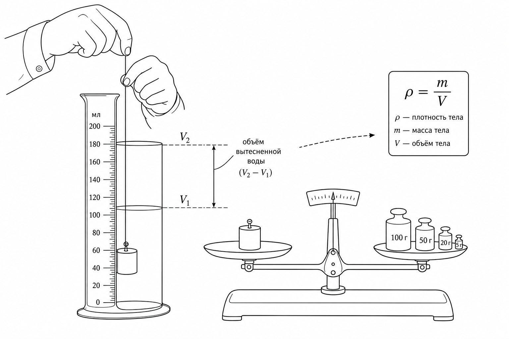
Цель работы. Экспериментально определить силу трения скольжения деревянного бруска по поверхностям с разной шероховатостью, вычислить коэффициент трения скольжения и проверить, как сила трения зависит от силы нормального давления и от материала соприкасающихся поверхностей.
Оборудование. Брусок (деревянный, с крючком для подвешивания), динамометр, набор грузов известной массы, весы (см. §26), три поверхности разной шероховатости — например, гладкая деревянная доска, наждачная бумага, плотная ткань, — линейка или рулетка.
Теоретическое основание. Как было установлено в §13, при скольжении одного тела по поверхности другого возникает сила трения скольжения \(F_{тр}\), направленная против направления движения (или против направления возможного движения — в случае трения покоя). Модуль этой силы связан с силой нормальной реакции опоры \(N\) соотношением
\[ F_{тр} = \mu N, \]
где \(\mu\) — коэффициент трения скольжения, безразмерная величина, зависящая от материалов и состояния соприкасающихся поверхностей, но не зависящая (в первом приближении) ни от площади контакта, ни от скорости движения.
Метод измерения основан на первом законе Ньютона: если брусок тянуть динамометром вдоль горизонтальной поверхности так, чтобы он двигался равномерно, без ускорения, то силы, действующие на брусок вдоль направления движения, уравновешены. Это означает, что сила упругости пружины динамометра в этот момент равна по модулю силе трения скольжения:
\[ F_{тр} = F_{дин}. \]
Именно показание динамометра при равномерном движении и является измеренным значением силы трения. Если поверхность горизонтальна, сила нормальной реакции опоры равна силе тяжести бруска:
\[ N = mg, \]
где \(m\) — масса бруска (с грузами), кг; \(g \approx 9{,}8\) Н/кг (в расчётах допустимо округление до 10 Н/кг).
Порядок выполнения работы.
| № опыта | Поверхность | Масса бруска, кг | \(N = mg\), Н | \(F_{тр}\), Н | \(\mu = F_{тр}/N\) |
|---|---|---|---|---|---|
| 1 | Дерево (гладкая доска) | ||||
| 2 | Наждачная бумага | ||||
| 3 | Ткань | ||||
| 4 | Дерево + дополнительный груз |
Обработка результатов. Сравнить значения \(\mu\), полученные в опытах 1–3: они должны заметно различаться, показывая, что коэффициент трения — характеристика именно пары поверхностей, а не свойство отдельного тела. Сравнить опыты 1 и 4: сила трения \(F_{тр}\) должна вырасти пропорционально возросшей нормальной силе \(N\), тогда как коэффициент трения \(\mu\) должен остаться практически неизменным в пределах погрешности измерений.
Задача 1. В опыте по измерению силы трения скольжения брусок массой 200 г равномерно тянут динамометром по поверхности деревянной доски. При равномерном движении динамометр показывает силу 0,6 Н. Считая \(g = 10\) Н/кг, найти коэффициент трения скольжения бруска о поверхность доски.
| Дано | СИ | Решение |
|---|---|---|
| \(m = 200\) г | \(m = 0{,}2\) кг | \(N = mg\) |
| \(F_{тр} = 0{,}6\) Н | — | \(N = 0{,}2 \cdot 10 = 2\) Н |
| \(g = 10\) Н/кг | — | \(\mu = \dfrac{F_{тр}}{N}\) |
| Найти: \(\mu\) | — | \(\mu = \dfrac{0{,}6}{2} = 0{,}3\) |
Полученное значение 0,3 — типичная величина коэффициента трения дерева по дереву; это подтверждает физическую разумность результата и позволяет использовать это значение как ориентир при сравнении с другими поверхностями в лабораторной работе.
Задача 2. На тот же брусок положили ещё один такой же брусок, так что общая масса системы стала 400 г. Поверхность и способ протягивания не изменились, а коэффициент трения скольжения остался таким же, как в предыдущей задаче — 0,3. Найти показание динамометра при равномерном движении такой нагруженной системы.
| Дано | СИ | Решение |
|---|---|---|
| \(m = 400\) г | \(m = 0{,}4\) кг | \(N = mg\) |
| \(\mu = 0{,}3\) | — | \(N = 0{,}4 \cdot 10 = 4\) Н |
| \(g = 10\) Н/кг | — | \(F_{тр} = \mu N\) |
| Найти: \(F_{тр}\) | — | \(F_{тр} = 0{,}3 \cdot 4 = 1{,}2\) Н |
Сила трения выросла ровно вдвое вместе с массой, а коэффициент трения остался прежним. Это главный методический вывод лабораторной работы: сила трения зависит от нагрузки, коэффициент трения — нет. Он определяется только природой соприкасающихся поверхностей, и именно поэтому его можно табулировать как справочную величину для пары материалов, а не для конкретного тела.
Разница между силой трения покоя и силой трения скольжения, которую вы наблюдаете в момент, когда брусок «срывается» с места и начинает равномерно скользить, — не техническая деталь опыта, а физика, лежащая в основе звучания самого певучего из музыкальных инструментов. Смычок скрипки движется по струне не гладким скольжением, а серией микроскопических «зацепов и срывов» — на языке физики это называется stick-slip friction. Волосок смычка, натёртый канифолью для увеличения коэффициента трения, на миг сцепляется со струной силой трения покоя и тащит её за собой, растягивая; когда упругая сила натянутой струны превышает максимально возможную силу трения покоя, струна срывается и проскальзывает назад — но уже при меньшей силе трения скольжения. Затем цикл повторяется. Частота этих циклов и есть высота извлекаемого звука. Без разницы между трением покоя и трением скольжения, которую вы измерили и осмыслили в этой лабораторной работе, скрипка не смогла бы звучать вообще — смычок либо прилипал бы к струне навечно, либо скользил бы по ней беззвучно.
Тот же закон \(F_{тр} = \mu N\) природа применяет и в противоположном направлении — там, где нужно не сцепление, а его отсутствие. В синовиальных суставах человеческого тела (о них подробнее — в главе о давлении, §15) хрящевые поверхности разделены тончайшим слоем синовиальной жидкости, и коэффициент трения между ними оказывается на два-три порядка меньше, чем между двумя деревянными брусками из этой лабораторной работы — порядка 0,001–0,01. Такое почти полное отсутствие трения жизненно необходимо: сустав должен работать десятки лет, совершая миллионы движений, и любое заметное трение означало бы столь же заметный износ хряща при каждом шаге, прыжке или plié.
А в устройстве балетной обуви — пуантов и мягких туфель — конструкторы, наоборот, целенаправленно управляют коэффициентом трения в разные стороны на разных участках подошвы: подушечка стопы и носок пуанты должны надёжно сцепляться со сценой для устойчивости в позе на полупальцах и при остановке движения, а поворотная точка стопы при пируэте, напротив, требует минимального трения, чтобы вращение не «гасилось» лишним сопротивлением пола. Именно поэтому танцовщики иногда слегка обрабатывают подошву канифолью в одном месте сцены и «остужают» её в другом — сознательно меняя тот самый коэффициент \(\mu\), который вы сегодня измеряли динамометром.
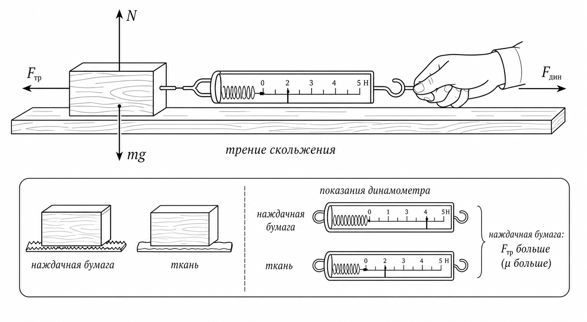
Цель работы: экспериментально определить выталкивающую (архимедову) силу, действующую на тело, полностью погружённое в воду, методом гидростатического взвешивания; сравнить экспериментальное значение силы с расчётным, найденным по закону Архимеда.
Оборудование: динамометр, исследуемое тело на нити, сосуд с водой.
Теоретическое обоснование. В §19 было установлено, что на тело, погружённое в жидкость, действует выталкивающая сила \[ F_A = \rho_{ж} \, g \, V_{погр}, \] где \(\rho_{ж}\) — плотность жидкости (кг/м³), \(g\) — ускорение свободного падения (Н/кг), \(V_{погр}\) — объём погружённой части тела (м³).
Эту силу можно измерить и напрямую, без вычисления объёма, если воспользоваться следующим рассуждением. Когда тело подвешено на динамометре в воздухе, динамометр показывает вес тела \(P_0\) (силой Архимеда в воздухе можно пренебречь ввиду малой плотности воздуха). Когда то же тело полностью погружают в воду, не касаясь дна и стенок сосуда, на него действуют три силы: сила тяжести \(F_{тяж}\), направленная вниз, сила упругости пружины динамометра \(F_{упр}\), направленная вверх, и архимедова сила \(F_A\), также направленная вверх. Тело в воде неподвижно, значит, силы уравновешены: \[ F_{упр} + F_A = F_{тяж}. \] Показание динамометра в воде \(P_1\) равно по модулю \(F_{упр}\), а \(F_{тяж} = P_0\) (показание динамометра в воздухе). Отсюда \[ F_A = P_0 - P_1. \]
Это ключевой результат работы: архимедова сила равна разности показаний динамометра в воздухе и в воде. Метод называется гидростатическим взвешиванием.
Порядок выполнения работы:
Задача 1. При выполнении лабораторной работы динамометр показал вес тела в воздухе 1,47 Н. После полного погружения этого же тела в воду, налитую в сосуд, показание динамометра уменьшилось до 0,98 Н. Плотность воды принять равной 1000 кг/м³, ускорение свободного падения — 9,8 Н/кг. Найти архимедову силу, действующую на тело в воде, и объём тела.
| Дано | СИ | Решение |
|---|---|---|
| \(P_0 = 1{,}47\) Н | — | \(F_A = P_0 - P_1\) |
| \(P_1 = 0{,}98\) Н | — | \(F_A = 1{,}47 - 0{,}98 = 0{,}49\ \text{Н}\) |
| \(\rho_{воды} = 1000\) кг/м³ | — | \(V = \dfrac{F_A}{\rho_{воды}\, g}\) |
| \(g = 9{,}8\) Н/кг | — | \(V = \dfrac{0{,}49}{1000 \cdot 9{,}8} = 5 \cdot 10^{-5}\ \text{м}^3\) |
| Найти: \(F_A\), \(V\) | — | \(V = 50\ \text{см}^3\) |
Архимедова сила равна 0,49 Н, объём тела — 50 см³. Заметим, что величина этой силы получена без какого-либо непосредственного измерения объёма мерным цилиндром: сам факт «облегчения» тела в воде и есть проявление выталкивающей силы, а разность двух показаний динамометра — прямой способ её измерить.
Задача 2. У того же тела, что и в предыдущей задаче, масса была заранее найдена как отношение веса в воздухе к ускорению свободного падения. Используя найденный ранее объём тела 50 см³ и его массу, определить плотность вещества, из которого изготовлено тело, и сравнить полученное значение с табличной плотностью алюминия, равной 2700 кг/м³.
| Дано | СИ | Решение |
|---|---|---|
| \(P_0 = 1{,}47\) Н | — | \(m = \dfrac{P_0}{g}\) |
| \(g = 9{,}8\) Н/кг | — | \(m = \dfrac{1{,}47}{9{,}8} = 0{,}15\ \text{кг}\) |
| \(V = 5 \cdot 10^{-5}\) м³ | — | \(\rho_{тела} = \dfrac{m}{V}\) |
| \(\rho_{Al} = 2700\) кг/м³ | — | \(\rho_{тела} = \dfrac{0{,}15}{5 \cdot 10^{-5}} = 3000\ \text{кг/м}^3\) |
| Найти: \(\rho_{тела}\) | — | Отклонение от \(\rho_{Al}\): \(\dfrac{3000-2700}{2700} \approx 11\%\) |
Полученная плотность близка к плотности алюминия, но не совпадает с табличным значением точно. Это не ошибка физики, а естественная погрешность эксперимента: пузырёк воздуха, неполное погружение, неточность отсчёта по шкале динамометра — каждый из этих факторов сдвигает результат. Задача лабораторной работы — не получить «идеальное» число, а понять физический метод и научиться оценивать, насколько ему можно доверять.
Метод, которым вы только что измерили архимедову силу — взвешивание тела сначала в воздухе, затем в воде, — не учебная условность. Это тот же самый метод, что называется в спортивной физиологии гидростатическим (подводным) взвешиванием и десятилетиями применяется для определения состава тела спортсменов и артистов: соотношения мышечной, костной и жировой массы.
Физика здесь та же самая, что в вашей лабораторной работе, только вопрос обратный. У вас известна плотность воды, и вы находили объём и плотность неизвестного тела. В спортивной медицине известна масса человека (взвешивание на воздухе) и измеряется его вес при полном погружении в воду — точно так же, как вы измеряли \(P_1\). Из разности \(P_0 - P_1\) находят архимедову силу, а из неё — объём тела. Зная массу и объём, находят среднюю плотность тела человека.
Почему это работает и что это раскрывает? Жировая ткань имеет плотность около 900 кг/м³ — она легче воды и создаёт положительную плавучесть. Мышечная и костная ткань плотнее воды — около 1100 кг/м³. Поэтому два человека одинакового веса на воздухе, но с разным соотношением мышц и жира, по-разному «взвесятся» в воде: тот, у кого больше мышечной массы, при погружении покажет на динамометре (или весах) меньшее число — потому что его тело вытесняет меньший объём воды на единицу массы, а значит, меньше выталкивается архимедовой силой. Это прямое физическое следствие закона Архимеда, а не приближённая оценка на глаз.
Для артиста балета эта физика важна вдвойне. Во-первых, метод гидростатического взвешивания — один из немногих способов оценить состав тела без давления «весового» мышления, которое так часто вредит артистам: он измеряет физическую плотность тканей, а не абстрактное число на весах. Во-вторых, сама вода как среда с частичной компенсацией веса — не метафора, а измеримый факт: тело человека, погружённое в воду по грудь, «весит» на суставы и позвоночник заметно меньше своего истинного веса именно потому, что архимедова сила берёт часть нагрузки на себя. Поэтому реабилитационные упражнения после травм связок и суставов у танцовщиков часто проводят в бассейне: тот же мышечный рисунок движения выполняется при сниженной осевой нагрузке на хрящ и связки — практическое применение той же формулы \(F_A = \rho_{ж} g V\), которую вы сегодня проверяли динамометром.
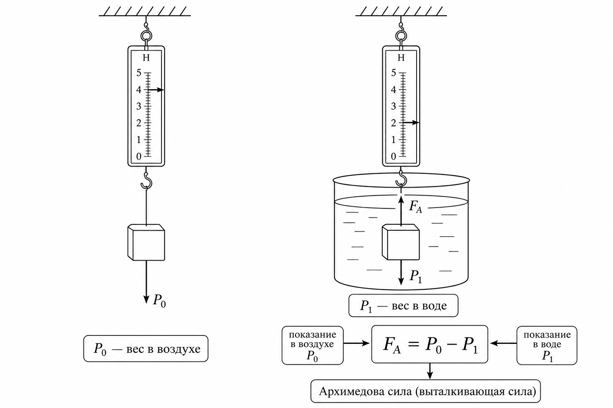
Наклонная плоскость — простой механизм, позволяющий поднять груз на определённую высоту, прилагая силу меньшую, чем при подъёме по вертикали, но за счёт увеличения пути, вдоль которого эта сила действует. Такой обмен «сила за путь» подчиняется «золотому правилу механики», изученному в параграфе 23: во сколько раз механизм даёт выигрыш в силе, во столько же раз он требует увеличения пути приложения этой силы.
Полезной работой при подъёме тела по наклонной плоскости называется работа, которая непосредственно достигает цели опыта — поднимает тело на высоту \(h\) (м): \[ A_{\text{полезн}} = m g h, \] где \(m\) — масса тела (кг), \(g = 10\) Н/кг — ускорение свободного падения, \(h\) — высота подъёма (м).
Полной (затраченной) работой называется работа силы тяги, приложенной вдоль всей длины наклонной плоскости \(l\) (м): \[ A_{\text{полн}} = F l, \] где \(F\) — сила тяги, измеренная динамометром при равномерном перемещении тела вдоль плоскости (Н).
Полная работа всегда больше полезной, потому что часть энергии рассеивается на преодоление силы трения между телом и поверхностью плоскости (параграф 13) и переходит в тепло. Отношение полезной работы к полной называется коэффициентом полезного действия механизма (КПД): \[ \eta = \frac{A_{\text{полезн}}}{A_{\text{полн}}} \cdot 100\%. \]
Так как трение никогда не устраняется полностью, для любого реального механизма выполняется строгое неравенство \(\eta < 100\%\). Величина \(\eta\) — это не абстрактное число, а мера того, насколько «честно» механизм превращает вложенную работу в полезный результат: остальная часть работы не исчезает, а переходит в тепловую энергию, разогревающую соприкасающиеся поверхности.
Цель лабораторной работы: экспериментально определить КПД наклонной плоскости как простого механизма и сравнить его с теоретически ожидаемым значением, объяснив причину их несовпадения.
Оборудование: наклонная плоскость (доска на подставке), динамометр, тело известной массы (брусок), рулетка, весы.
Порядок выполнения работы:
| № опыта | \(F\), Н | \(l\), м | \(h\), м | \(m\), кг | \(A_{\text{полезн}}\), Дж | \(A_{\text{полн}}\), Дж | \(\eta\), % |
|---|---|---|---|---|---|---|---|
| 1 | |||||||
| 2 | |||||||
| 3 |
Задача 1. При выполнении лабораторной работы ученик равномерно поднимает по наклонной плоскости длиной 1 м тело массой 0,5 кг на высоту 0,2 м. Динамометр при равномерном перемещении показывает силу тяги 1,5 Н. Определить коэффициент полезного действия наклонной плоскости в этом опыте.
| Дано | СИ | Решение |
|---|---|---|
| \(m = 0{,}5\) кг | — | \(A_{\text{полезн}} = m g h\) |
| \(h = 0{,}2\) м | — | \(A_{\text{полезн}} = 0{,}5 \cdot 10 \cdot 0{,}2 = 1\ \text{Дж}\) |
| \(l = 1\) м | — | \(A_{\text{полн}} = F l\) |
| \(F = 1{,}5\) Н | — | \(A_{\text{полн}} = 1{,}5 \cdot 1 = 1{,}5\ \text{Дж}\) |
| \(g = 10\) Н/кг | — | \(\eta = \dfrac{A_{\text{полезн}}}{A_{\text{полн}}} \cdot 100\%\) |
| Найти: \(\eta\) | — | \(\eta = \dfrac{1}{1{,}5} \cdot 100\% \approx 66{,}7\%\) |
Полученное значение реалистично: для деревянной наклонной плоскости с умеренным трением КПД в диапазоне 60–70% — обычный результат школьного эксперимента. Значение \(\eta > 100\%\) было бы физически невозможно и означало бы ошибку измерения силы или расстояния.
Задача 2. В другом опыте с той же наклонной плоскостью длиной 2 м и высотой подъёма 0,4 м равномерно поднимают тело массой 1 кг; динамометр показывает силу тяги 6 Н. Определить КПД плоскости в этом опыте и работу, совершённую против силы трения.
| Дано | СИ | Решение |
|---|---|---|
| \(m = 1\) кг | — | \(A_{\text{полезн}} = m g h = 1 \cdot 10 \cdot 0{,}4 = 4\ \text{Дж}\) |
| \(h = 0{,}4\) м | — | \(A_{\text{полн}} = F l = 6 \cdot 2 = 12\ \text{Дж}\) |
| \(l = 2\) м | — | \(\eta = \dfrac{A_{\text{полезн}}}{A_{\text{полн}}} \cdot 100\% = \dfrac{4}{12} \cdot 100\% \approx 33{,}3\%\) |
| \(F = 6\) Н | — | \(A_{\text{тр}} = A_{\text{полн}} - A_{\text{полезн}}\) |
| Найти: \(\eta\), \(A_{\text{тр}}\) | — | \(A_{\text{тр}} = 12 - 4 = 8\ \text{Дж}\) |
Здесь КПД заметно ниже, чем в задаче 1: почти две трети совершённой работы ушло не на подъём тела, а на преодоление трения — то есть превратилось в тепло на поверхности контакта. Это показывает, что КПД механизма — не постоянная характеристика самой конструкции, а результат конкретных условий опыта: состояния поверхностей, угла наклона, качества смазки или обработки.
Идея КПД выходит далеко за пределы наклонной плоскости — она описывает любую систему, преобразующую один вид энергии в другой с неизбежными потерями. Самый содержательный пример такой системы — не механизм из дерева и металла, а человеческая мышца.
Мышца — это химический двигатель: она превращает энергию, запасённую в молекулах АТФ, в механическую работу сокращения. Но, как и наклонная плоскость, мышца не может сделать это без потерь. КПД скелетной мышцы человека составляет, по физиологическим оценкам, порядка 20–25%: из каждых пяти единиц химической энергии в полезную механическую работу превращается лишь одна, остальные четыре рассеиваются в виде тепла. Именно поэтому интенсивная тренировка ощутимо разогревает тело — это не образное выражение, а прямое следствие низкого КПД мышечной работы, того же физического явления, что нагревает доску наклонной плоскости при трении.
Отсюда следует практический вывод, важный для артиста балета не меньше, чем для инженера. Экономичное, хорошо выстроенное движение — с правильным выравниванием суставов, минимальным избыточным напряжением мышц-антагонистов, без «зажатости» — не просто выглядит более гармоничным на сцене: оно физически ближе к максимально достижимому КПД тела как двигателя. Резкое, некоординированное усилие — аналог наклонной плоскости с шероховатой, необработанной поверхностью: та же полезная работа требует большей затраты энергии, а избыток превращается в тепло, ускоряя утомление мышцы и создавая условия для перегрузки.
Тот же принцип «выигрыш никогда не бесплатен» работает и в театральной машинерии: старинные сценические механизмы для подъёма декораций и полёта артистов — блоки, лебёдки, противовесы — всегда проектировались с учётом трения в осях и тросах, то есть с заведомым КПД меньше единицы. Инженер сцены, как и физик в лаборатории, обязан не бороться с этим фактом, а точно его рассчитывать: закладывать запас силы, зная, что часть работы неизбежно «съедается» трением механизма.
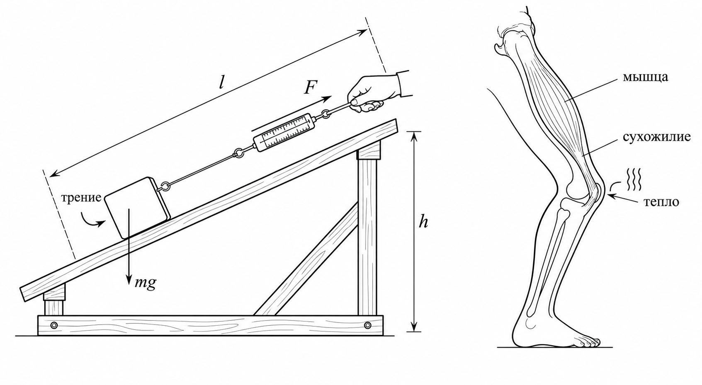
Антропометрия — это раздел биомеханики, изучающий размеры и пропорции тела человека с помощью прямых измерений. В отличие от лабораторных работ с приборами вроде динамометра или мерного цилиндра, здесь измерительным объектом становится само тело учащегося, а измерительными инструментами — рулетка и секундомер. Это не делает измерение менее физическим: длина стопы, высота прыжка и время удержания позы подчиняются тем же законам механики, что и движение бруска на наклонной плоскости.
Цель работы: получить количественные характеристики тела и движения (антропометрические и биомеханические величины), используя аппарат кинематики (путь, скорость, время — § 6–7) и статики (центр тяжести, условия равновесия — § 24), и оценить точность полученных измерений.
Оборудование: рулетка (или гибкая сантиметровая лента), секундомер.
Работа состоит из трёх независимых измерений.
1. Длина стопы. Измеряется рулеткой расстояние от крайней точки пятки до кончика самого длинного пальца при полностью распрямлённой стопе. Это простое прямое измерение, но, как и любое измерение, оно имеет погрешность, определяемую ценой деления инструмента (обычно 1 мм у рулетки со шкалой в миллиметрах, то есть половина деления — 0,5 мм, округляемая на практике до 0,5 см из-за подвижности мягких тканей стопы). Результат следует записывать с указанием этой погрешности, как того требует правило точности измерений.
2. Высота вертикального прыжка. Измеряется не напрямую, а расчётным путём — через время полёта. Учащийся выполняет прыжок вверх с места (без разбега), а секундомером фиксируется время \(t\) от момента отрыва стоп от пола до момента их касания пола. В фазе полёта на тело действует только сила тяжести (сопротивление воздуха при малых скоростях прыжка пренебрежимо мало), поэтому движение вверх и вниз является равноускоренным с ускорением свободного падения \(g \approx 9{,}8\ \text{м/с}^2\). Траектория симметрична: время подъёма равно времени падения, каждое из них равно \(t/2\). Высота подъёма центра масс над точкой отрыва находится из формулы равноускоренного движения без начальной скорости на участке падения:
\[ h = \frac{g}{2}\left(\frac{t}{2}\right)^2 = \frac{g t^2}{8}. \]
Величина \(t\) измеряется в секундах (с), \(g\) — в метрах на секунду в квадрате (м/с²), \(h\) получается в метрах (м).
3. Время удержания статической позы. Учащийся принимает заданную позу с уменьшенной площадью опоры (например, стойку на одной ноге) и удерживает её без смещения опорной стопы до момента, когда равновесие нарушается. Секундомер фиксирует время от начала позы до её потери. Физический смысл измерения — оценка устойчивости тела: согласно условию равновесия (§ 24), тело сохраняет равновесие, пока вертикальная линия, проходящая через центр тяжести, остаётся в пределах площади опоры. Время удержания позы — это количественная мера того, насколько долго нервно-мышечная система способна удерживать эту линию внутри опоры за счёт непрерывных микрокоррекций.
Каждое измерение выполняется не менее трёх раз, и в протокол записывается среднее значение — это снижает влияние случайных погрешностей (неточного старта секундомера, случайного отклонения тела).
Примерная форма протокола измерений:
| Величина | Опыт 1 | Опыт 2 | Опыт 3 | Среднее |
|---|---|---|---|---|
| Длина стопы, см | ||||
| Время полёта в прыжке, с | ||||
| Время удержания позы, с |
Условие задачи 1. При выполнении вертикального прыжка с места учащийся находился в фазе полёта — от момента отрыва стоп от пола до момента приземления — в течение 0,64 секунды. Сопротивлением воздуха можно пренебречь. Нужно определить, на какую высоту поднялся центр масс учащегося над полом.
| Дано | СИ | Решение |
|---|---|---|
| \(t = 0{,}64\) с | — | Время подъёма равно половине времени полёта: \(t_{\text{под}} = t/2 = 0{,}32\) с |
| \(g = 9{,}8\) м/с\(^2\) | — | \(h = \dfrac{g t^2}{8}\) |
| Найти: \(h\) | — | \(h = \dfrac{9{,}8 \cdot 0{,}64^2}{8} = \dfrac{9{,}8 \cdot 0{,}4096}{8} \approx 0{,}50\ \text{м}\) |
Высота подъёма центра масс составляет примерно 0,50 м. Это реалистичный результат: для прыжка с места без маха руками и без предварительного разбега подъём центра масс на 40–60 см вполне достижим при хорошей координации отталкивания. Обратите внимание на важную деталь: этот расчёт даёт высоту подъёма именно центра масс тела, а не высоту, на которую поднялись стопы над полом, — при взлёте колени и стопы подбираются, и визуальная высота прыжка может казаться больше или меньше расчётной.
Условие задачи 2. Учащийся стоит на одной ноге; длина его стопы составляет 24 см. В процессе удержания позы вертикальная линия, проходящая через центр тяжести тела, сместилась от середины длины стопы на 3 см в сторону носка. Нужно определить, осталась ли линия тяжести в пределах площади опоры, и если да — каков запас устойчивости в сантиметрах до края стопы.
| Дано | СИ | Решение |
|---|---|---|
| \(L = 24\) см | \(L = 0{,}24\) м | Половина длины стопы — расстояние от середины до носка: \(L/2 = 0{,}12\) м |
| \(x = 3\) см | \(x = 0{,}03\) м | Линия тяжести остаётся в пределах опоры, если \(x < L/2\) |
| Найти: запас устойчивости \(d\) | — | \(0{,}03\ \text{м} < 0{,}12\ \text{м}\) — условие равновесия выполняется; \(d = L/2 - x = 0{,}12 - 0{,}03 = 0{,}09\ \text{м}\) |
Запас устойчивости составляет 9 см, то есть линия тяжести смещена почти на четверть расстояния до края опоры, но равновесие ещё сохраняется. Такой расчёт наглядно показывает, почему стойка на одной ноге настолько чувствительна к малейшему смещению корпуса: площадь опоры здесь в несколько раз меньше, чем при стойке на двух ногах, и запас устойчивости сокращается пропорционально.
Высоту прыжка можно рассмотреть не только кинематически, через время полёта, но и энергетически, замыкая круг материала главы 4. В момент отрыва от пола тело обладает кинетической энергией \(E_к = mv^2/2\), а в верхней точке траектории вся эта энергия переходит в потенциальную: \(mv^2/2 = mgh\). Отсюда прямо следует, что высота прыжка зависит не от массы тела (она сокращается в обеих частях равенства), а исключительно от скорости отталкивания \(v\). Это ключевое биомеханическое наблюдение: техника прыжка — согласованное, последовательное разгибание голеностопного, коленного и тазобедренного суставов, так называемое «тройное разгибание» — увеличивает не силу мышц как таковую, а именно конечную скорость центра масс в момент отрыва стоп от пола. Два человека с одинаковой массой и одинаковой силой мышц могут прыгать на разную высоту просто потому, что один расходует силу мышц более координированно во времени, разгоняя тело дольше и эффективнее.
Время удержания статической позы раскрывает другую сторону той же физики равновесия — не статику в чистом виде, а непрерывно управляемое динамическое равновесие. Тело, стоящее на одной ноге, никогда не замирает абсолютно: центр тяжести совершает крошечные, почти незаметные глазу колебания вокруг положения равновесия — так называемый постуральный тремор, — и мышцы стопы и голени непрерывно вносят микрокоррекции, не позволяя линии тяжести выйти за пределы площади опоры. Здесь уместна аналогия с канатоходцем, который удерживает равновесие на тросе не за счёт неподвижности, а за счёт непрекращающихся малых коррекций шеста и корпуса: устойчивость — это не отсутствие движения, а точно управляемое движение в очень малых пределах.
Сама площадь опоры — длина и форма стопы — заслуживает архитектурного взгляда. Продольный свод стопы работает как настоящая несущая конструкция: подобно каменному своду моста, он распределяет вес тела между несколькими точками опоры (пяткой и плюсневыми костями), позволяя выдерживать нагрузку без разрушения структуры. Чем меньше площадь опоры (стойка на одной ноге против стойки на двух, стойка на полупальцах против стойки на всей стопе), тем меньше запас устойчивости — и тем большую работу должны совершать мышцы-стабилизаторы, чтобы удерживать линию тяжести внутри этой уменьшенной опоры.
Наконец, сама идея измерения тела как основы для понимания его устройства — не открытие современной биомеханики. Витрувианский человек Леонардо да Винчи и канон пропорций Поликлета — это ранние формы антропометрии, где измерение длины стопы, кисти, размаха рук служило не медицинским, а художественным целям: поиску universalного закона гармоничных пропорций. Показательно, что один и тот же измерительный жест — приложить линейку к телу — способен служить одновременно точной физике равновесия и вековому поиску художественного идеала пропорций.
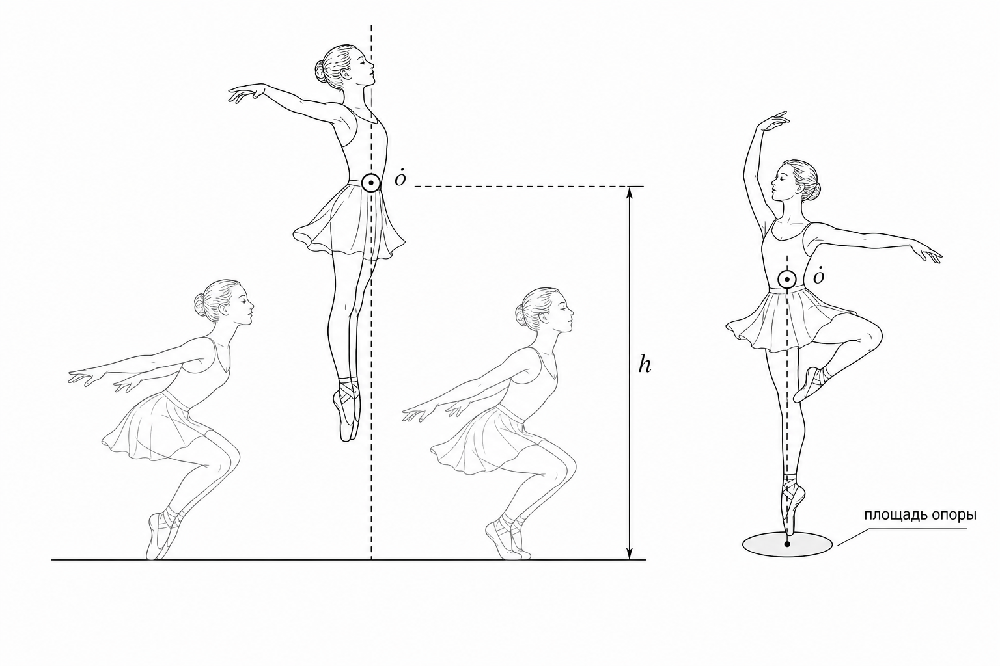